Introduction
This book is about the half of Honor of Kings that no tutorial teaches you: how to be a good teammate.
Solo queue and team play are not the same game. They share a map, a hero pool, and a ranked ladder, and almost nothing else. In solo queue you optimise for yourself — your farm, your lane, your KDA — because four strangers will never coordinate with you and you will probably never see them again. In a team, every one of those instincts gets turned inside out. The plays that win you a solo game can lose a team game outright, and the plays that win a team game often look, from the outside, like doing nothing at all.
That gap is where the frustration lives, and it runs in both directions. A solo-queue star joins a five-stack and suddenly feels slow, restricted, and blamed for things nobody ever asked them to care about. The team, meanwhile, feels like it is dragging around a player who will not rotate, will not share, and will not listen. Both sides are usually right. Both sides are usually describing the same missing skill, just from opposite ends of it.
This handbook exists to close that gap — for the five-stack that keeps losing to a better-coordinated team, for the solo player who wants to stop blaming the jungler, and for the aspiring IGL who wants to actually lead instead of just talking the most.
What follows is not theory scraped off a patch-notes page. It is years of experience gathered across various MOBA titles: climbing ladders, playing on organised teams, scrimming, losing badly, and then sitting down afterwards to work out why. Every principle in here was paid for with games that did not go well.
It is written for everyone, and it is meant to be useful at every level. If you are new to the genre, the early chapters will hand you the vocabulary and the mental model you need to stop being confused by your own team. If you have been playing for years, the chapters on macro, roles, and staffing are where the habits you never questioned get taken apart. And if you are a veteran or a pro who spots something here that is wrong, outdated, or simply worse than what you already know — say so. This is a living document, and corrections are as welcome as contributions.
How to read this: words highlighted like this are defined in the glossary. Hover to preview, click to jump straight to the full entry in Chapter 06.
How this book is structured
The chapters follow the order a player actually learns the game, not the order a wiki organises it.
- Chapters 1–2 are the mental model. They explain why team play is a different game from solo queue, and what actually changes when you stop playing for yourself.
- Chapter 3 (Macro) is the map layer — the openings, the timers, the objectives, and the three questions that reduce any decision to something you can answer in a second.
- Chapter 4 (Lanes Guide) is the role layer — what each of the five positions is actually responsible for, and how each one contributes to the team's win condition.
- Chapters 5–7 are the layers that sit on top: psychology, drafting, and the data behind counter-picks and synergy. These are what separate a team that wins from a team that keeps coming second.
- Chapter 8 (Advanced Team Mechanics) is the coordination layer — the plays that only work when all five players are reading the same map at the same time.
- Chapters 9–10 are the structure — the roles around the five players, and the shared language every team needs.
You do not have to read it in order. If you are new, start at the beginning. If you are stuck on a specific problem — you keep losing the opening, your team cannot close out games, your draft keeps getting countered — jump straight to the chapter that covers it. The book is designed to be used, not just read.
What this book is not
It is not a tier list. Hero strength changes every patch, and any list of "the best heroes right now" will be wrong within a month. This book teaches the logic underneath the pick — how to read a draft, how to find a win condition, how to know which fights are worth taking — so that when the meta shifts, you already know what to do.
It is not a substitute for practice. You can read every word here and still lose to a player who has spent the same time in the game. Knowledge is not skill — it is the map that tells you where to spend your practice. The book cannot press the buttons for you. It can only make sure the buttons you press are the right ones.
And it is not a rulebook. Nothing in here is a law. The principles in this book are strong enough to survive most patches, but they are not axioms — they are the patterns that have held up across thousands of games, and the patterns that have failed often enough to teach us something. If you find a case where one of them does not apply, that is not the book being wrong. That is the game being complicated, which is the whole reason a book like this is worth writing.
A living document
Nothing here is set in stone. The meta shifts, heroes get reworked, and the strongest team composition of last season becomes a joke this season. The principles underneath — spacing, timing, information, communication — do not move nearly as fast.
That is the bet this book makes: that the fundamentals are worth learning because they last, and that the details are worth documenting because they change. If you are reading this a year from now and some of the numbers look wrong, that is expected. If the reasoning behind them still holds, the book is doing its job.
Solo vs Teamwork
Micro wins your lane. Macro wins the game. Teamwork wins the series.
Solo queue rewards a specific set of habits: play a carry, take every resource you can reach, and treat your teammates as movable scenery. Those habits get you out of low elo and then quietly stop working. At some point the enemy team starts rotating together, and a player who has only ever learned to farm alone has no answer for it.
Expecting consistent teamwork in a ranked solo queue game is, frankly, delusional. You are playing with four strangers who have no shared plan, no voice chat, and no reason to trust you. But it would be equally wrong to say teamwork never happens. Good teammates do appear from time to time. The problem is the mix: in many games you get one or two players who actually understand the map and their role, while the rest act like clueless minions — farming, fighting, and dying without any idea what is happening around them. The correct response is still to play selfishly and well, because you cannot rely on the team you are given. That is not toxicity; that is realism.
But Peak is different. Peak is where the game stops being a solo performance and starts being a team sport. And the rating bands tell a remarkably clear story about how that transition happens.
Solo mindset
- "I have to carry or we lose."
- My lane is my responsibility.
- Every fight is worth taking if I'm fed.
- Blame is a valid use of chat.
Team mindset
- "How do I make the win easiest for us?"
- The map is everyone's responsibility.
- Fights are worth taking when they convert into an objective.
- Information is a valid use of chat.
Teamwork by Peak Rating
What you can expect from teammates — and what they can expect from you — changes dramatically as you climb the Peak ladder. Here is the rough breakdown:
- Below 1400 Peak: Games play out like random ranked matches. Individual mechanics dominate, cooperation is accidental, and the team that makes fewer unforced errors usually wins. Do not expect rotations, vision, or any shared plan.
- 1400–1600 Peak: Players start cooperating. You will see basic rotations and objective calls. Games are often decided by draft gaps or by one or two players who are clearly out of their depth and keep making the same mistake.
- 1600–1800 Peak: Decent understanding of picks and counter-picks, and real coordination appears. Teams will group for objectives and follow a basic plan. What is still missing is synergy — the instinctive, wordless understanding of where your teammate will be and what they will do next.
- Above 1800 Peak: This is where the game changes. Players show great map awareness, read situations correctly, and adapt to different strategies on the fly. They can demonstrate good synergy with almost any teammate because they understand the game, not just their own role. At this level, teamwork becomes the default, not the exception.
Why 1700+? Many community teams set their minimum requirement at 1700 Peak for exactly this reason. Below that, you are still teaching players how to play as a unit. Above it, you can start teaching them how to play as your unit.
The shift from solo play to team play is not about becoming less selfish — it is about understanding that your individual performance is a resource the team spends, not a scoreboard you protect.
A team is not five good players. It is five players who know what the other four are going to do next, and who are willing to be wrong together rather than right alone. That is the entire thesis of this book.
The Three Skills That Transfer
Not everything you learn in solo queue is wasted. Some of it transfers directly to team play, and the players who make the jump fastest are the ones who already know which parts of their game to keep and which to throw away.
Three skills carry over almost perfectly:
- Mechanics. Last-hitting, combos, dodging skillshots, kiting, spacing — none of these change when you join a team. A player who can out-trade their lane opponent in solo queue can still out-trade them on a five-stack. The decisions around the mechanics change; the mechanics themselves do not. This is why a mechanically strong solo-queue player is still valuable to a team — they do not have to relearn how to play their hero, only how to play their role.
- Wave management. Freezing, slow-pushing, crashing a wave into a tower — these are lane skills, and they are lane skills in both modes. The difference is that in solo queue you manage the wave for your own advantage, and on a team you manage it for a specific play. The tool transfers. The purpose changes.
- Cooldown tracking. Knowing when the enemy's flash is down, when their ultimate is up, when their key engage is available — this is a solo-queue skill that becomes more valuable on a team, because now you can communicate it. A solo player who tracks cooldowns for themselves becomes a team player who tracks cooldowns for everyone.
Three skills do not transfer, and trying to use them will actively hurt your team:
- Resource hoarding. In solo queue, taking every camp, every wave, and every kill is correct — because you cannot trust anyone else to convert the gold into a win. On a team, hoarding is a liability. The team's total gold matters more than your individual gold, and refusing to share is how a team loses a game it should have won.
- Hero-first decision making. In solo queue, you pick the hero you are best at and you play it every game. On a team, the draft is a team decision, and sometimes the best pick for the team is the hero you are second-best at. A player who cannot play anything except their main is a liability in the draft — and a team with five of them cannot draft at all.
- Playing for the scoreboard. The habits that protect your KDA — retreating from fights you could win, avoiding deaths that would open objectives, chasing kills that pad your stats — are the habits that lose team games. The scoreboard is a description of what happened, not a measure of what mattered. A team player learns to read a different scoreboard: objectives taken, tempo gained, win condition reached.
The mechanic you keep. The purpose you change. Almost every skill in the game has a solo-queue version and a team version, and the team version is almost always the same skill pointed at a different target. A freeze in solo queue is for starving your lane opponent. A freeze on a team is for setting up a gank. Same tool. Same movement. Different reason.
Playing Well vs Playing for the Win
Consider what you see in ranked every day. A tank runs away from a fight the moment it turns, not because retreating is correct, but because dying would hurt their KDA and their rating. They are playing for their own evaluation, not for the team. Meanwhile, a roam player will dive into a lost fight, die first, and give their team the space to clean up three kills and take an objective. That roam player's score looks terrible. Their rating might drop. But the team just won the game because of that sacrifice.
This is the difference between playing well and playing for the win. They are not the same thing. Sometimes the correct play looks like a terrible play on the scoreboard. A frontline that absorbs every cooldown and dies so the marksman can free-hit is not feeding — they are doing their job. A support that trades their life for a pick on the enemy carry is not throwing — they are converting their own gold into the team's momentum.
If you are a player who wants to be the star, that is fine. But be honest with yourself about whether your role actually allows it. Some roles have to suffer so the team can shine. If you cannot accept that, you are playing the wrong position — or the wrong game.
Macro
Macro is everything your character does while you are not looking at your character.
If micro is how well you press buttons, macro is whether you were pressing them in the right place at the right time. A player with average mechanics and excellent macro will beat a mechanically gifted player with no map awareness almost every game.
Macro is not a single skill. It is a stack of them: where you stand, when you move, what you give up to move, and what your team gains because you moved. The opening phase of a match — from the first wave to the first real fight — is where those decisions are made most cleanly, because nothing else has happened yet. That is what this chapter is about.
The Opening Phase
The opening is the first three to four minutes of the match. No towers have fallen, no kills have been traded, and the map is still symmetrical. From that position, both teams are trying to do the same thing: take a small advantage and turn it into a slightly bigger one. The team that ends the opening phase ahead usually controls the first objective, and the team that controls the first objective usually controls the pace of the next ten minutes.
Most teams lose the opening not because they make a mistake, but because they leave gaps — spaces on the map that nobody is watching and nobody is covering. A gap is not a bad play. It is a missing play: a corridor of the map where an enemy can walk for free, because nobody on your team has any reason to be there.
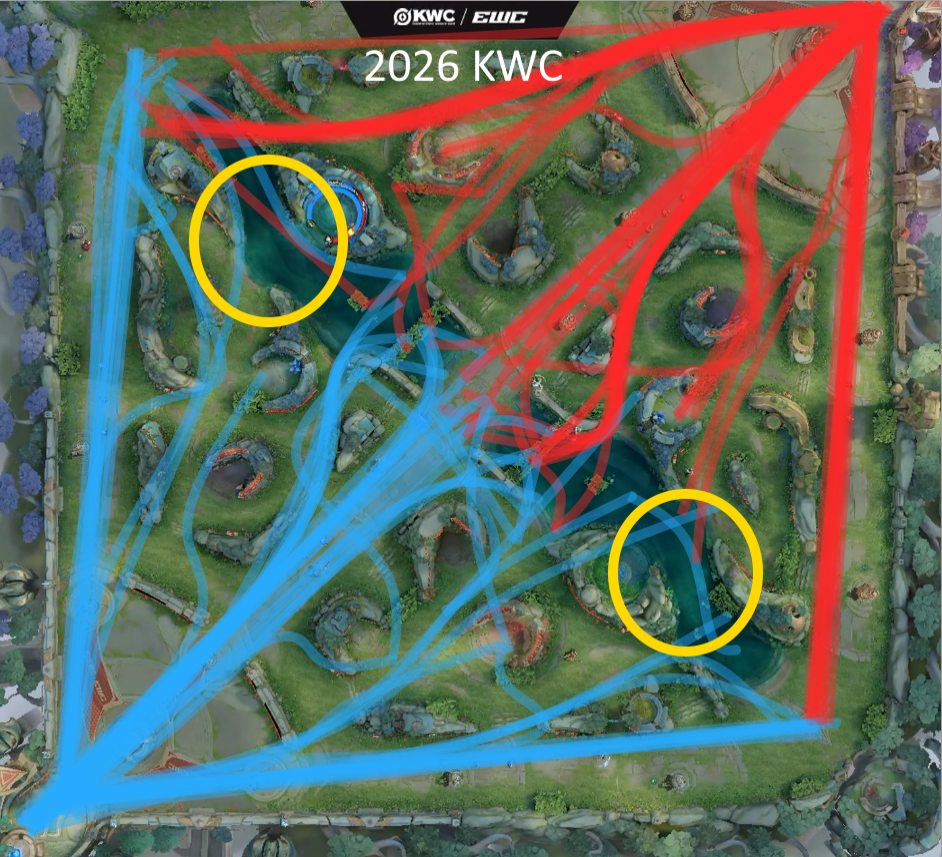
The pattern in Figure 1 is consistent across teams, tiers and regions. The gaps almost always appear in the same three places: the river corridor on the far side of mid, the jungle entrance closest to the clash lane, and the bush cluster behind the farm lane. None of these are exotic. They are simply the places that fall between two players' responsibilities. Mid assumes the jungler is watching the river. The jungler assumes the roam is watching the river. The roam assumes the mid laner is watching the river. So the river sits unwatched, and the first gank of the game arrives through it.
The gap is the play. A macro player does not react to the enemy jungler appearing in a lane — they move to cover the lane before the jungler arrives, because they noticed the gap first. The opening phase is won by whoever identifies the empty corridor first, not by whoever has the faster reaction time.
The Optimal Opening Path (<1 min)
If gaps are the problem, the opening path is the answer. Figure 2 shows the movement pattern that closes the most common gaps while still getting every role to its power spike on time. It is not a rigid script — it is a default, and defaults are what you fall back to when nothing unusual is happening.
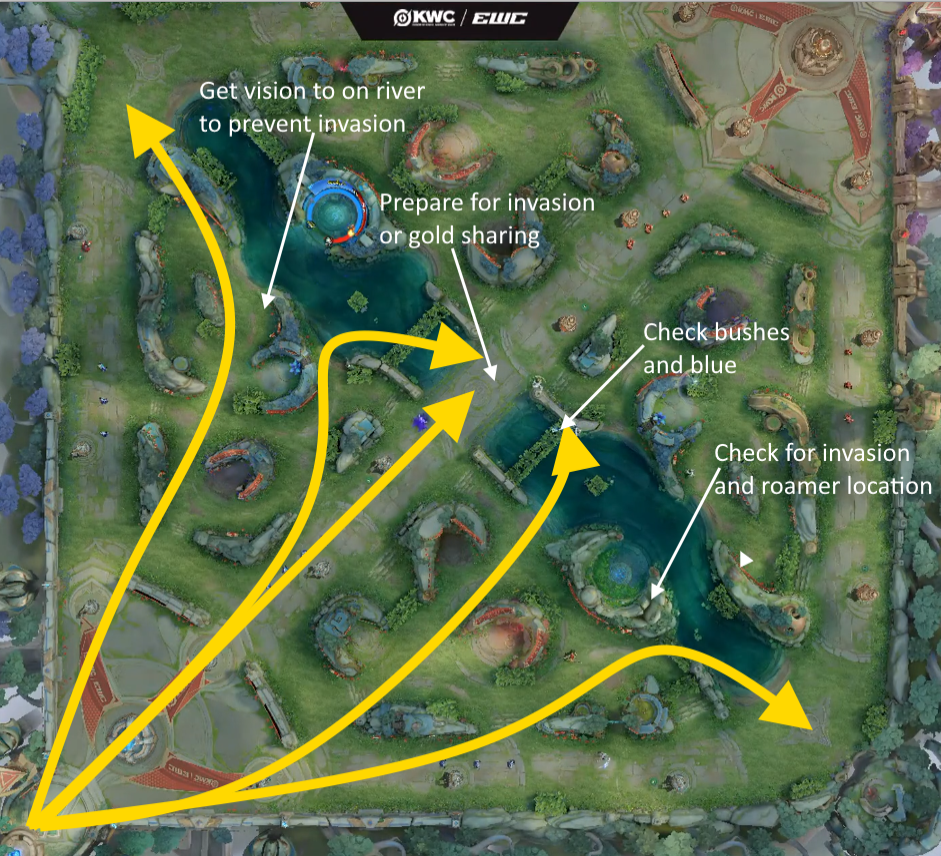
The path in Figure 2 is built on a few principles that apply no matter what hero you are playing:
- Roam: hug the ADC side of mid. As the roam, your default position in the opening is slightly to the marksman's side of the mid lane. From there you can ward the river corridor (closing Gap 1 from Figure 1), you are one step away from a mid gank, and you are still close enough to walk back to the farm lane if the enemy tries to dive your ADC. You are not "supporting mid" or "supporting bot" — you are covering the seam between them, which is exactly where the gaps form.
- Jungler: invade first, gank second. Your priority in the opening is to steal the enemy's first camp on the side your team has priority. A successful invade does three things at once: it denies the enemy jungler their level 4 power spike, it gives you a free tempo lead, and it tells you where the enemy jungler isn't. If the invade is not safe — their laners have priority, their roam is missing, their jungle entrance is warded — your fallback is a mid gank. Mid is the shortest lane, the easiest to reach, and the lane that opens every other fight on the map.
- Share gold toward your win condition. When you and the mid laner clear the same wave, one of you takes the last hits and the other takes the pressure. Which one gets the gold depends entirely on who your team is building around. If your win condition is a late-game mage, the mid laner takes the last hits and the jungler or roam takes the tempo. If your win condition is a snowballing jungler, the jungler takes the last hits and the mid laner takes the rotation. Neither is correct in the abstract. Both are correct in context.
- Laners: hold, then rotate. The clash laner's first job is not to push. It is to hold the wave until the first rotation window — usually around the first jungle camp spawn or the first scuttle — and then move. A clash laner who dies at 4 minutes has not "played aggressively"; they have given the enemy team a free objective and a free tempo lead. A clash laner who holds the wave and rotates on time has already won the opening.
Notice how much of this depends on information rather than mechanics. The roam is not standing in a particular pixel because it looks good — they are standing there because from that position, they can see the gap and close it. The jungler is not invading because invading is aggressive — they are invading because their team has priority and the enemy camp is free. Every move in Figure 2 is a response to something the map is telling you.
Invasions and Counter-Invasions
An invade is the most aggressive thing a team does in the opening. It is also the most fragile, because it depends on your team being where the enemy team is not. The optimal path treats invade as the jungler's default — but the moment you commit to one, you have to accept that the enemy can commit to one too. The question is not "how do I invade?" It is "what do I do when it is done to me?"
There are only two correct responses, and one very common wrong one.
Option 1 — Defend
- Collapse on the invader with your laners and your roam.
- You need vision on the entrance before they arrive — a ward at 20 seconds is worth more than a rotation at 40.
- You need your laners to have priority, so they can leave the wave without losing it.
- Correct when the enemy has committed only one or two players, and your side of the map is stronger.
Option 2 — Counter-invade
- If the enemy has sent three players into your jungle, their jungle is empty.
- Send your jungler and roam to their opposite camp. You lose a camp, you take a camp, and the trade is even.
- Correct when the enemy has over-committed, or when your laners cannot leave their waves safely.
- The key is that you decide — you do not drift into it.
The wrong response is the half-measure. One laner walks toward the invade, arrives alone, gets picked, and now you have lost a camp and a kill and the tempo that came with both. If you are going to defend, defend with enough players to actually win the fight. If you are not, counter-invade and take something back. The only losing move is to show up late, outnumbered, and confused.
The annotations on Figure 2 are deliberately about this. "Check bushes and blue", "Get vision on river to prevent invasion", "Check for invasion and roamer location" — every one of those is a defensive act performed before the invade happens, not after. The best defence against an invade is not a fight. It is a ward placed at 20 seconds that tells you not to be there at 40.
The trade rule. An invade is always a trade, even when it looks like a disaster. Ask: what did they commit, and what is empty because of it? If they took your red buff with three players, your jungler and roam can take their blue buff for free. The team that recovers from an invade is not the team that defends hardest — it is the team that calculates fastest.
Ganks and Anticipation
The opening path gets you through the first minute. After that, the game becomes about ganks — and ganks, like everything else in the opening, are predictable if you know how to read them.
The enemy jungler cannot be everywhere. Their gank timings are set by three things, all of which you can see:
- Which buff they started. The camp they open determines which side of the map they finish on, and therefore which lane they can reach first.
- Their hero's clear speed. Some junglers finish their first full clear at 50 seconds. Others need 1:25. That difference is the difference between a mid gank and a side-lane gank.
- Their level 4 power spike. Almost every jungler wants level 4 before they gank. Count their camps, count their level, and you know when they are coming.
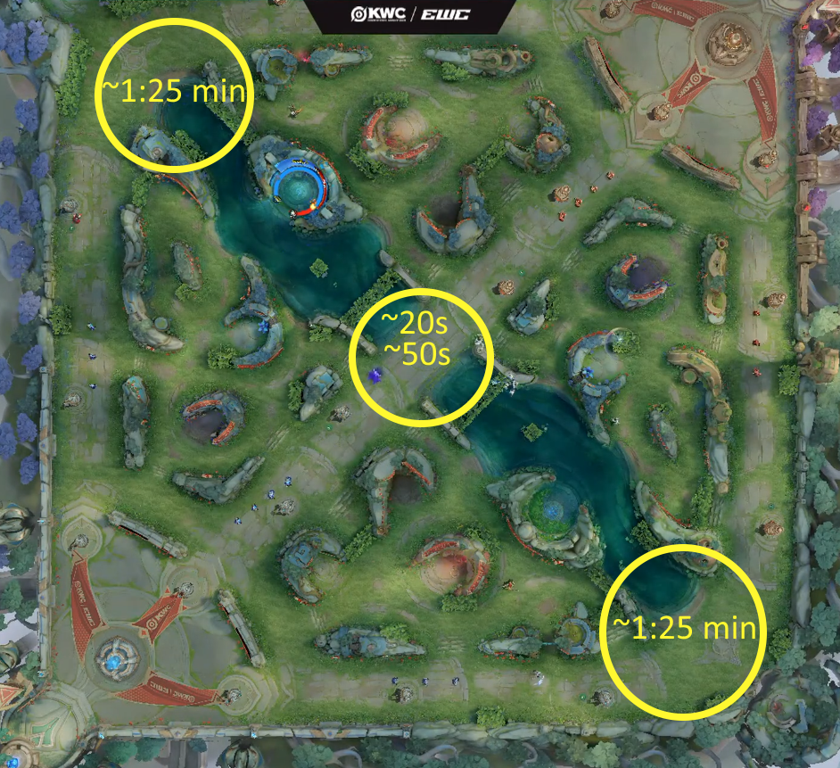
The timings in Figure 3 are not a coincidence. They are the schedule the enemy jungler is on, whether they know it or not — and this year's World Cup made that schedule more aggressive, not less.
- ~20 seconds — the early mid gank. A jungler can skip part of their clear and be in mid before the first wave has fully met. This is now a common opening at the highest level of play, and for good reason: the jungler does not gank alone. The roam and the mid laner join the gank, the play converts into a kill or a forced recall, and then all three of them share the mid wave together. The gold share does two things at once — it boosts the jungler's clear speed on the next camp and it raises the team's total gold rather than concentrating it on one player. That is why mid is the most contested lane in the first minute of the game at the World Cup level.
- ~50 seconds — the one-side gank. A jungler who has cleared only one side of their jungle — red or blue buff, but not both — has a choice: walk to the other buff, or walk to mid. If they choose mid, they arrive around 50 seconds, gank with the mid laner and roamer, and share the wave the same way. The trade is explicit: you give up your second buff for a numbers advantage in mid and a share of the wave's gold. Whether that is worth it depends on your hero, your mid laner, and whether the enemy jungle can be punished for the camp you skipped.
- ~1:25 — the full-clear side gank. A jungler who clears every camp finishes around 1:25, hits level 4, and can now reach the side lanes with their ultimate up. This is when clash lane and farm lane ganks happen. The timing varies by roughly ±10 seconds depending on the hero — some junglers clear faster, some slower — but the principle does not change: full clear means level 4, and level 4 means the sides are in danger. It is also the window where the laner who has been holding their wave (per the optimal path) has the most to gain, because they are close to their own tower and the gank has to come further to reach them.
Look at what all three windows have in common: the jungler is not farming alone. In the first two, they are ganking and gold-sharing with the mid laner and the roamer — the wave is the reward, not just the kill. In the third, they are using their full-clear power spike to force a fight in a side lane. The jungler who clears their jungle in silence and shows up at 1:25 with nothing to show for it has already lost the opening to a jungler who shared three waves and got a kill.
Dragons and River Objectives
The river objectives are not bonus gold. They are how a team converts a lead into a win, and how a losing team finds a way back into the game. Every objective in the pit is a win condition in miniature: take the right one at the right time and the map opens up. Take the wrong one and you have spent your tempo for nothing.
The problem is that most players do not know the timers. They know the objectives exist, they know they are important, and they still show up late, or they show up to the wrong pit, or they try to fight for a dragon the enemy team has already secured. This section fixes that. The timers below are the ones you should have memorised before you queue.
The jungler owns the clock. The three timings marked in red below — 4:00, 10:00, and 20:00 — are the team's hard objectives. These are not "nice to have" dragons. These are the moments the whole team has to be grouped, warded, and ready thirty seconds before the pit opens. Everything else on the chain is flexible. These three are not.
Objective timers and effects
Tyrant / Shadow Tyrant
- First spawn: 4:00 (regular). Respawn: 4:00. Shadow form: 10:00.
- Regular Tyrant: ~90 seconds of team-wide combat buff (extra nearby auto-attack damage).
- Shadow Tyrant: Grants Shadow Tyrant's Arrival — chain lightning on attacks (60 + 30×level magic damage to heroes, 100 + 50×level to non-heroes, 3s cooldown, bounces to 3 targets), plus 10% movement speed (15% out of combat). Lasts 90 seconds.
Overlord / Shadow Overlord
- First spawn: 4:00. Respawn: 4:00. Shadow form: 10:00.
- Regular Overlord: Replaces your next 2 minion waves on all 3 lanes with Overlord Vanguards. These Vanguards deal 50% reduced damage to towers, which makes them siege engines rather than fighters.
- Shadow Overlord: The killer gains the Summon Shadow Vanguard active skill, usable anywhere on the map for 60 seconds. It summons a Shadow Vanguard that sweeps down a lane of your choice, dealing 10,000 fixed damage to enemy minions (kills grant 150% gold, split among the team), leaves a Shadow Path for 60 seconds (10% damage reduction, +10% damage to structures for allies on the path), and auto-summons if unused.
Tempest Dragon
- First spawn: 20:00. Respawn: 3:00.
- Replaces both pits. Killing it grants a regenerating ~50% max HP shield (regenerates when you leave combat), an aura of true damage and slow, and the ability to spawn Tempest Vanguards that freeze towers.
- The combination of the shield and the true-damage aura makes a Tempest Dragon buffed team almost impossible to fight head-on. This is the objective that ends games.
Objective chain — the order to take them
- 4:00 — Tyrant
- 6:00 — Overlord (optional, if you have a tower lead)
- 8:30 — Tyrant
- 10:00 — Shadow Overlord (preferable) or Shadow Tyrant (if you are very sustain-heavy and lack damage)
- ~12:00 — Shadow Tyrant
- ~15:00 — Tyrant
- ~19:00 — either pit, whichever is available
- 20:00 — Tempest Dragon
This is the default chain, not a law. It assumes even game states and no unusual tempo swings. A team that is far ahead can skip objectives and take towers instead. A team that is far behind may have to concede the first two Tyrants and trade them for farm on the other side of the map. But if you do not have a plan, this chain is the plan.
Primal Bond — the cost of taking both pits
Primal Bond is not a reward. It is a penalty, and it exists to stop one team from taking both river objectives back to back.
- After your team kills a Tyrant, your team deals 50% reduced damage to the Overlord for 90 seconds.
- After your team kills an Overlord, your team deals 50% reduced damage to the Tyrant for 90 seconds.
- After your team kills a Shadow Tyrant, your team deals 60% reduced damage to the Shadow Overlord and the Tempest Dragon for 90 seconds.
- After your team kills a Shadow Overlord, your team deals 60% reduced damage to the Shadow Tyrant and the Tempest Dragon for 90 seconds.
Read that carefully, because it changes how you plan the chain. If you take the 4:00 Tyrant, your team is now doing half damage to the Overlord until 5:30. If you take the 10:00 Shadow Overlord, your team is doing 60% reduced damage to the Tempest Dragon until 11:30 — which matters if the game is close enough that the 20:00 spawn is going to be contested. The chain above deliberately spaces the two pits apart so the debuff has worn off before the next one matters. Teams that ignore this rule and try to chain both pits in one rotation do less damage, take longer, and get collapsed on by the enemy team while they are still hitting the objective.
Primal Bond is a timer on your aggression. After you take a pit, your team has a 90-second window where the other pit is much harder to take. Do not fight into it. Reset, farm, reposition, and wait for the debuff to drop before you commit to the second objective.
Preparing for the objective
Knowing the timer is only half of it. The other half is being ready for it before it spawns. The exact rotations and vision setups for each objective are covered in the Lanes Guide, but the principle belongs here:
- 30 seconds before spawn: the lane closest to the objective should push out its wave, so the enemy laner has to choose between farming and contesting.
- 20 seconds before spawn: the roamer and jungler should be in position with vision on the pit entrance, not arriving late from the other side of the map.
- At spawn: the team should already be grouped. An objective that spawns while your team is scattered across three lanes is an objective you have already lost.
When you cannot contest — stall and trade
Not every objective is contestable. If the enemy team is ahead, has vision control of the pit, and arrives with all five players while your team is missing a key cooldown or a power spike, the correct play is usually not to fight. The correct play is to stall the objective and trade somewhere else.
Stalling means keeping the enemy team busy at the pit without committing to a fight you will lose. Poke from range, threaten a flank without taking it, walk in and out of vision to make them think you are about to engage. The longer they spend second-guessing, the longer the rest of the map is undefended. Every second the enemy team stands at the pit is a second your clash laner is free to take a side tower, or your marksman is free to reset and heal, or your jungler is free to clear a full camp and arrive at the next fight with a real power spike.
The trade does not have to be equal. If the enemy takes a Tyrant and you take a side tower plus two waves of farm plus a full recall for your carries, you have not lost the objective — you have exchanged it for a different kind of value, and you have done it without feeding the enemy team a kill. The team that loses the pit and the teamfight is the team that loses the game. The team that loses the pit and takes a tower is still in the game.
The stall rule. If you are not going to win the fight at the pit, do not go to the pit to fight. Go to the pit to slow the enemy down, and send one player — usually the clash laner — somewhere else to take something back. An objective you cannot contest is not a disaster. An objective you cannot contest and a lost teamfight on top of it is.
Exception — Stealing the objective
There is one case where you do commit to a pit you cannot win: when you can steal it. A steal is not a fight — it is a single, precise burst of damage that lands on the objective before the enemy jungler's Smite does. It is high-risk, it is situational, and it is one of the highest-value plays in the game when it works.
The rule is simple: to steal an objective, you need to be able to out-damage Smite in a single instant. Smite deals a fixed amount of true damage the moment the enemy jungler casts it. If your burst cannot beat that number, you are not stealing — you are feeding the enemy team a kill on top of the objective. There are only two ways to make the steal work:
Option 1 — CC the jungler
- Land hard CC on the enemy jungler the moment the objective drops low.
- Stun, knock-up, silence, or root — anything that stops them casting Smite.
- That CC gives you a time window in which the jungler cannot steal back, and in that window your damage is uncontested.
- Best on heroes with reliable hard CC and a follow-up burst combo. This is the safer steal.
Option 2 — Instant burst
- No CC needed. You simply do more damage in one instant than Smite does.
- Requires a hero with a single-frame burst combo — an assassin, a burst mage, or a marksman with a fully stacked execute.
- The window is one cast. If you miss it, you have given the enemy team a free kill and the objective.
- Higher risk than the CC route, and only worth attempting on heroes built for it.
The common mistake is trying to steal on a hero who has neither. A tank with no burst and no hard CC standing at the pit edge is not a thief — they are a spectator with a health bar. If your hero cannot do one of the two things above, the correct play is still to stall and trade, not to dive in and hope.
For a practical demonstration of how these steals look in real games — timing, positioning, and the moment the CC window opens — see the clip linked below.
Watch it in practice: Dragon steal highlights — @vdx.kovas on TikTok →
But stealing is only worth it if you survive. Dying for a dragon is almost never worth it. The objective is a team buff, and a team buff on a dead player is a buff on four players — which is a losing trade against a full enemy team. There are exactly two exceptions:
- The Tempest Dragon. At 20:00, the Tempest Dragon buff is so strong that trading one life for it is usually correct. A team that secures the Tempest and loses one player is still going to win the next fight.
- The Overlord is about to end the game. If enemy minions are hitting your base and an Overlord buff is the only thing that can clear them and buy your team one more fight, then dying to secure it can be the correct play. This is rare, and it is a judgment call — but it exists.
Outside those two cases, the rule stands: if you cannot steal without dying, do not steal. Stall, trade, reset, and come back for the next one.
For full details on each objective — abilities, exact reward values, and patch changes — see the official wiki entries for Tyrant, Overlord, Shadow Tyrant, Shadow Overlord, and Tempest Dragon, or the community boss guide at hok.hub-game.com.
Win Conditions and Adaptations
There is no single "correct" opening. There is only the opening that serves your team's win condition — the specific way your five heroes beat their five heroes. Everything else in this chapter is downstream of that question.
Before the first wave hits, you should already know the answer to four questions:
- Who is our win condition? The player or pair whose power spike, if reached safely, wins us the game.
- Who is theirs? The player we have to delay, deny, or dive before they come online.
- Who is stronger in a 5v5? If the answer is "them", we must win through picks and split-push, not through the first teamfight.
- Where are the gaps? The corridors from Figure 1 that we can exploit, and the corridors we have to cover.
Those answers determine which course of action your team takes in the opening — and they also determine which variation of the optimal path you play. The path in Figure 2 is a default. Real teams run dozens of variations off it, and the two most common are worth naming:
Lane swap
- Your farm-lane duo opens in the clash lane, and your clash laner opens in the farm lane.
- Wins the lane matchup by avoiding the enemy's strong side.
- Costs you the natural vision pattern — you have to rebuild it from scratch.
- Best when your ADC has a losing matchup but a strong mid-game.
Fast clash start
- Your clash laner opens in mid, takes the first wave, then rotates to the clash lane on the first rotation window.
- Gives you mid priority for free, which lets your jungler invade safely.
- Costs your clash laner one wave of farm and puts them slightly behind at level 2.
- Best when your jungler has a strong level 2 invade and the enemy mid laner cannot punish the swap.
Both variations are still "the optimal path". They are simply the path with one piece moved. That is what makes the framework useful: you do not have to relearn the whole opening every time your team's win condition changes. You learn the default, and then you learn which pieces you are allowed to swap.
Tempo
Tempo is the currency of macro. Every action you take costs time, and the team that spends its time more efficiently gets to decide when fights happen. If your jungler is clearing camps on the far side of the map, the enemy team knows they can pressure the opposite objective for free.
Tempo is the reason the optimal opening path works. The invade does not just give you gold — it gives you tempo, because you arrive at your next camp on time while the enemy jungler is still walking back to theirs. The mid gank does not just give you a kill — it gives you tempo, because your mid laner is now free to rotate without losing a wave. Every move in Figure 2 is a tempo trade, and the team that wins the opening is the team that traded better.
Reading the Map State
Macro is not just about where you should be. It is about reading the state of the map — all three lanes, both jungles, and every objective timer — and knowing what that state means. A player who can read the map state knows what is about to happen before it happens. A player who cannot read it is always reacting.
The map state has four layers, and they are read in this order:
- Lane priority. Whose wave is pushing? A laner whose wave is pushing can leave their lane for free. A laner whose wave is being pushed has to stay. Priority is the permission slip for every aggressive play on the map — an invade, a rotation, a gank. If your laners do not have priority, you cannot safely make any of them.
- Jungler position. Which side of the map is the enemy jungler on? The most valuable piece of information on the map, and the one most players never track. If you know where the enemy jungler is, you know where you can safely play — and if you know where they are not, you know where the free farm is.
- Objective timers. Which objective is about to spawn? An objective that is 30 seconds away is the single biggest thing on the map — both teams are going to have to move toward it, and that movement is predictable. Every other decision is downstream of the timer.
- Vision state. Where is your team's vision? Where is the enemy's? A side of the map with no vision is a side of the map where a play can happen without either team knowing about it. The team that controls vision controls what information the other team has.
The trick is that these four layers interact. A lane with priority is worth more when the objective timer is close. A jungler whose position is known is worth less when the map is dark. Vision is worth more on the side of the map where the next objective is going to spawn. Reading the map state well means reading all four layers at once and understanding how they change each other.
The map state tells you what to do — you do not have to invent it. Most of the decisions that feel hard in a game have an answer that is already on the map. If the enemy jungler showed bot and your clash laner has priority, the answer is: gank top. If the dragon is spawning in 30 seconds and your mid lane is pushed, the answer is: rotate to the pit. You do not have to be a genius to read the map. You have to be willing to look at it.
Vision
Vision is not a support-only job; it is the input that every macro decision is built on. You cannot punish a rotation you cannot see, and you cannot safely take an objective with no idea where the enemy jungler is.
Figure 1 is, in the end, a vision problem. Every gap it shows is a corridor that nobody on the team has vision of, and every gap can be closed by one ward placed by one player at the right moment. The roam's default position on the ADC side of mid is not a combat position — it is a vision position. The jungler's early invade is not just a gold play — it is a ward that walks. If you want to be a macro player, the first thing to learn is that vision is not the support's job, it is everyone's job, and the opening is when it matters most.
The Three Questions
At any point in a match — opening phase or late game, ahead or behind — you can reduce the next decision to three questions. They are not a system. They are a habit, and habits are what macro actually is.
- Where is the enemy team? If you don't know, assume the worst and play like it. The correct response to missing information is always caution, not optimism.
- What does the next 60 seconds buy us? A tower, a dragon, a pick, or nothing. If the answer is "nothing", the correct play is almost always to reset and farm instead of forcing a fight for no return.
- What do we lose if this goes wrong? If the answer is "the game", don't do it. The teams that climb are not the ones that take the most risks. They are the ones that take the risks with the best payout and the smallest downside.
Ask these three questions before every rotation, every fight, and every objective. After a hundred games, you will not have to ask them anymore — you will just see the answer on the map, the way you currently see your own health bar.
Lanes Guide
Five positions, five jobs, one map. Every role is a different answer to the same question: what does the team need right now?
This chapter covers what each position is actually responsible for — not just where they stand, but what they are supposed to be doing for the other four players.
Clash Lane
Solo · Fighter / Tank · Split-pushClash role is made for pressuring opponents and forcing them to divide their forces. That is why clashes often fight alone and must be able to survive in 1v2 situations.
Everything here still comes down to wave management, because wave control is what converts into pressure. A freeze near your own tower makes you ungankable, starves your opponent, and forces them to overextend. A fast push lets you rotate to the mid fight or the objective without losing minions — or walk a wave into a tower and make somebody come answer it. Deciding which one you want before the wave arrives is the entire skill, and it is the same decision a mid laner makes.
Take good trades when your opponent's key cooldown is down, and do not chase kills into fog. A clash laner who dies at 4 minutes has given the enemy team a free objective and a free tempo lead — but so has a mid laner, and for exactly the same reason.
The lane is often decided in draft
More than any other position, clash lane is decided before the first minion meets. The 1v1 is long, isolated, and forgiving of nothing — so which hero you picked against which hero they picked matters more here than anywhere else on the map.
Before you load in, you should already be able to answer three questions:
- Who wins the 1v1, and at what level? If you do not know whether you win the level 1, the level 2, or the level 4, you are guessing — and guessing in a solo lane is how you die at 2 minutes. Sustain-heavy fighters and tanks dominate this lane precisely because they can survive the trades that would kill a squishier pick.
- What is your impact in this game? Not your role in the abstract — this game, with these five heroes on each side. See the archetypes below.
- Is your job to win the lane, or to survive it? Those are two different games, and they require two different sets of habits. Losing the lane gracefully is a skill, and on some drafts it is the correct plan from minute one.
If you cannot answer those three, you are not playing clash lane. You are just standing in it.
The three clash archetypes
Clash heroes do not all do the same thing, and the mistake players make is assuming their job is the same as the last clash hero they played. There are three broad archetypes, and each one generates pressure in a different currency:
- The tank — pressure through presence. A tank clash laner's value shows up in teamfights. They are the frontline that absorbs every cooldown, soaks the enemy's engage, and lets the marksman free-hit. Their laning phase is usually about not losing, not about winning — and their contribution is measured in fights, not in towers. If this is you, your job is to arrive at objectives on time with your cooldowns up, and to be the reason your damage dealers get to play the game.
- The split-pusher — pressure through the map. This is the classic clash identity, and the one the lane is built around. A split-pusher takes a side lane, pushes it into a tower, and forces the enemy team to send someone to answer. If they send one, you may be able to kill them. If they send two, your team has a 4v3 somewhere else and takes an objective. Either way, the enemy team is divided — and that division is the product you are selling. Your tower damage is not the goal; it is the threat that makes the enemy move.
- The flanker — pressure through threat. A damage-dealing clash laner arrives at fights from the side and hunts the enemy backline. Clash is not the only role that can flank — a jungler with a mobile assassin or a dive-oriented pick does the same thing, and often does it better because they are not tied to a lane. What clash has that the jungler does not is the lane: the wave itself forces the enemy to keep someone on your side of the map, and that someone is usually the player you want to flank past. The jungler's flank is a rotation. The clash laner's flank is a rotation that comes with a tower threat attached. Their fear is the value, whether or not you land the kill.
Most clash heroes lean toward one of these, and some can shift between them depending on the draft and the game state. A fighter who is ahead may become a flanker; the same fighter who is behind may have to play as a tank and just survive. Read your impact before the first wave, and re-read it every time the gold swings.
Divide and conquer. Sun Tzu, one of the inspirations for this book, wrote that the way to win is to divide the enemy — and then conquer the pieces. Clash is the role that does the dividing. Whether you do it with a tower, with your body, or with the threat of your angle, the currency is the same: enemy attention spent on you is attention not spent on the rest of the map.
Strong side, weak side
Once you know the matchup, the lane plays itself — because the correct behaviour on the strong side and the weak side are exact opposites. Note that "strong side" here is only about the 1v1. It does not tell you who generates more pressure, and it does not tell you who wins the game.
If you are weaker — play it safe
- Hold the wave near your own tower. Do not contest the first scuttle or the first river camp unless your jungler is there with you.
- Farm what you can reach and give up what you cannot. A missed minion is not a loss; a death is.
- Wait for a gank. A losing lane is often only recoverable through a numbers advantage — and your jungler or roam is how you get one.
- Do not trade into a stronger opponent "to see what happens." You already know what happens.
If you are stronger — be proactive
- Push, trade, and force the enemy jungler to come to you. Pressure on your lane is pressure off everyone else's.
- Every enemy who rotates to your side of the map is one who is not defending a tower, contesting a dragon, or peeling for their carry.
- Take the enemy's tower if they give it. Do not chase kills under it — the tower is worth more than the kill, and it is worth more precisely because it forces a response.
- Be the problem the enemy team has to solve. That is the whole point of being ahead.
The first waves are (usually) safe
The first two or three minion waves are the safest minutes of the game — assuming you know where the enemy jungler is. If you know they started on the opposite side of the map, you can trade freely. If you do not know, play as if they are standing in the bush next to you. The wave is safe because of information, not because the game gives you anything.
Your job in those first waves is twofold:
- Make sure the enemy is not invading. If you see three health bars walk into your jungle around 0:25 — the window when the first camp is about to fall and the invade is actually worth doing — and nobody on your team calls it, call it yourself. You are the player closest to the river; you are the ward.
- Test the opponent. One short trade tells you more about their competence than a full minute of farming. Do they back off the wave? Do they waste their cooldown on the minion line? Do they hold the wave or shove it? That is free information — take it.
Farm and trade at the same time
Do not attack minions. Attack minions while dealing damage to the enemy clash laner. A basic attack on a dying minion and a basic attack on the enemy are the same button — the skill is standing where the minion is next to the enemy, so one action does both jobs. Every time you can hit both, you have won a trade that cost you nothing.
Farm faster than your opponent. Last-hit for the gold, push when you can, and let the wave do the fighting for you. A clash laner with a level-and-a-half lead at three minutes is not going to lose the lane through skill — only through a gank they did not see coming.
Anticipate the gank
You are the player most often left alone, and every enemy who wants a free kill knows it. Before you walk past the river, check the three things that predict a gank:
- The roamer leaving the farm lane. That is a gank heading somewhere — and you are a common target.
- The mid laner disappearing from the minimap. Same rule. Mid is the fastest route to your lane.
- The jungler's level 4 power spike. Around 1:25 the side-lane ganks arrive (Figure 3). If it is 1:20 and you do not know where the jungler is, you are standing in the wrong place.
If you do not know where two of those three players are, do not stand past the river. The clash laner who dies to a gank they saw coming and ignored is the most expensive death in the game — because it is the one death that was entirely preventable. It is also the death that most often decides the lane: with clash isolated by default, the first gank that lands on either side frequently settles who gets to play the rest of the game from ahead.
Setting up a gank for your jungler
Anticipating a gank is defence. Setting one up is offence — and it is one of the highest-value things a clash laner can do, because the isolation that makes you vulnerable is also what makes the setup possible. Nobody else on the map can manufacture a gank out of wave position alone.
The setup has four steps, and every one of them is under your control:
- Freeze the wave just outside your tower range. Not under the tower — outside it, where the enemy can still walk up to farm, but where the retreat back to their own tower is long and the river is behind them. This is the whole trap. The enemy is not being forced into the freeze; they are being invited into it, because the minions are there and they want the gold.
- Let them get comfortable. Do not freeze and then immediately attack. Let two or three waves pass where they walk up, last-hit, and walk back. A cautious opponent will not take the bait. A comfortable one will.
- Start the fight when they overstep. The moment they walk past the minion line to reach a low-health minion, step forward and open the trade. Use your key cooldown, force their defensive spell, and — most importantly — keep them in the lane. You are not trying to kill them alone. You are trying to keep them there long enough for the jungler to arrive.
- Ping before, not after. This is the step players get wrong. Ping the jungler's portrait before the freeze is set. Ping the enemy hero when they walk up. If you have voice, say the words: "freeze top, no flash, come now." A jungler who is told exactly where to go, exactly why, and exactly what they get is far more likely to come than one who receives a vague danger ping and has to work it out.
There is a fifth step, and it is not under your control: the jungler has to wait for you to start the fight. The setup only works if you open the trade first — the jungler arrives into a fight that is already happening and cleans up. If the jungler jumps in early, before you have committed, the enemy laner sees them coming, disengages, and walks away with a cooldown spent and nothing gained. Or worse, the enemy jungler was waiting for exactly that and the gank turns into a 2v2 you did not choose.
Watch it in practice — and watch it fail: Clash lane freeze — gank setup — @vdx.kovas on TikTok →
The clip is worth watching precisely because the gank does not convert. The setup is correct — the wave is frozen near the tower, the enemy clash laner is lured up the lane for the farm, and the window opens exactly as described. What kills it is the execution: the jungler rushes in before the clash laner starts the fight, the enemy laner sees it coming, and the kill that should have been free is missed. The lesson is not that the freeze was wrong. The freeze was right. The lesson is that in solo queue, the setup is the half of the play you actually own — and the other half depends on a teammate who may not understand what they are walking into. Keep setting the freeze anyway. The next jungler might.
The freeze does not stop working just because the gank does not arrive on time. A freeze that never converts still denies the enemy gold on every wave, still forces them into a dangerous position, and still means that when your jungler finally shows up — even late — the kill is easier than it would have been without the setup. The freeze did its job the moment the enemy had to choose between missing farm and overextending.
What you can control is the communication and the repetition. Set the freeze, ping early, ping the enemy directly, and take the kills that actually land. A random jungler may miss the setup once; the next freeze is the next opportunity. Your job is to keep making the play available, not to make it happen by yourself.
Read the trap when it is set on you. The same pattern works in reverse, and it is one of the most common ways clash laners die. If the enemy has been letting you farm comfortably near their tower for two or three waves, and then suddenly starts stepping forward and trading when they have no reason to, they are probably not being aggressive — they are baiting. The freeze, the invitation, the sudden trade: it is the same setup you just read, pointed at you. The tell is the change in behaviour. An opponent who has been passive and then picks a fight is either bluffing or has help. Assume the help, disengage, and give up the wave. The minions will be there in thirty seconds. You will not be if you stay.
The 1:20 window — Teleport Sprite
Around 1:20, the Teleport Sprite spawns in the river. Securing it is one of the strongest early plays a clash laner can make — it hands your team a rotation tool most teams simply do not have, and it is usually the clash laner who is closest to it.
But. Only if you can take it without risking your life. A Teleport Sprite taken at half health while the enemy jungler is missing is not a play — it is a gamble, and the payout is almost never worth the death. If you are not safe, concede it and take the next one. The Sprite is on a timer. Your death is not.
Split-push, and when to stop
If you are on a split-pushing hero, the mid and late game is where your job actually happens. The pattern is simple and the discipline is hard:
- Push the side lane the enemy is not defending. Usually the one opposite the objective that is about to spawn.
- Force the response. Walk the wave into the tower. Do not dive it — the tower is the threat, not the kill. You are trying to make somebody come.
- Read who comes. One player means you may be able to fight them. Two means your team has a 4v3 and should already be moving on the objective. Zero means you take the tower.
- Leave before the collapse. The moment three enemies disappear from the map, you are no longer a threat — you are a free kill and a free objective for the other team. Walk away and regroup.
The failure mode is the split-pusher who dies for the tower. A tower taken and then immediately given back in a 4v5 is not a trade, it is a mistake with a delay on it. The pressure is only worth anything if you are alive to apply it again somewhere else.
And there are games where you should not split at all — when the enemy has hard engage and your team cannot survive 4v5 for even a few seconds, or when your archetype is the tank and your team literally cannot fight without you. Read the draft. A split-pusher who never groups and a tank who never leaves lane are the same mistake in two different costumes.
Winning the lane vs winning the game
There is one case where winning your lane is the wrong thing to do: when the enemy clash laner has a stronger teamfight impact than you do. A big AoE ultimate, a stronger dive, a better frontline — those do not stop mattering just because you are ahead on gold. Killing them again does not stop them from winning a 5v5.
In that situation, do not keep trying to kill them. Freeze the lane and trade. Hold the wave near your tower, deny them farm, and force them to overextend if they want back into the game. A weaker teamfight hero who is 2000 gold behind is a much weaker teamfight hero. Your job is not to beat them in lane — it is to make sure that when the fights come, they do not matter.
Situation analysis — AG.Ran's choice in the KWC 2026 Grand Final
Everything above is a framework. This is what the framework looks like when a professional clash laner has to apply it, live, with the World Cup on the line.
The situation. AG.AL vs KSG, KWC 2026 Grand Final at the Esports World Cup in Paris. AG.Ran is on Charlotte — a fighter with real dueling threat, real side-lane pressure, and a mobility tool that lets her reposition anywhere on the map. His team is setting up for a fight over the Shadow Overlord, and both teams are converging on the pit. From his side of the map, he has three theoretically correct options:
- Keep pushing the side lane. The classic split-push play. Stay on the wave, walk it into the tower, and force KSG to choose between contesting the Overlord and defending the lane. If they send one, he might kill them. If they send two, AG has a 4v3 at the pit.
- Flank the fight. Rotate into the Overlord fight from a side angle the enemy cannot see, arrive behind the KSG backline, and threaten their damage dealers while his team engages from the front. This is the "pressure through threat" archetype — the fear he creates is worth more than the kill he may or may not land.
- Teleport to base and switch pressure to the opposite lane. Reset, re-enter the map from a different position, and start a fresh wave on the far side. This is the least direct option, but it is also the one that changes the enemy's problem rather than answering it.
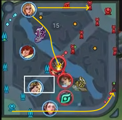
Why the farm lane push is the weakest path on the map. The farm lane route looks like a legitimate split-push option — take the wave, walk it into the tower, force KSG to send someone. But pressure only exists when the enemy has to respond. KSG had already committed to the Shadow Overlord, which means they did not need to send anyone to the farm lane at all: they could clear the wave on their way out, after the objective was already secured. A push the enemy can answer for free is not pressure. It is farm you were going to lose anyway, dressed up as a macro play. This is the trap the three archetypes in this chapter are meant to prevent — a split-pusher's value is measured in the enemy attention they consume, not in the minions they kill. If nobody has to come, you are not dividing anyone.
What Ran actually did. He teleported to mid, trying to stop KSG's advance down the middle lane. On paper, this looks like a defensive choice — stabilising the centre rather than committing to the Overlord fight or the side lane. But as the fight developed, both teams ended up committing to the Shadow Overlord contest anyway, which raises the question of whether the mid rotation was necessary at all.
The read. This is a comfort choice. It is not wrong — mid pressure is real pressure, and stopping a push down the centre lane is a legitimate contribution. But it is the safe option rather than the sharp one. The Overlord fight was the game's real decision point, and Ran's rotation to mid meant he arrived at that fight later and from further away than he would have if he had committed to the flank. The mid play made his team feel safe. It did not make them win the fight.
Whether a sharper option — flanking the pit directly, or holding the side lane and forcing KSG to split — would have won the fight is unknowable. That is the point.
No single correct answer. In a coordinated team, the "best" play is not a property of the map alone. It is a property of the map and your team's plan. If your team has decided to fight for the Overlord and wants you on the flank, then the flank is correct. If your team has decided to play safe, stabilise mid, and take the next objective instead, then Ran's rotation is exactly right. The same hero, the same map, the same timer — two different correct answers, depending on what the other four players are doing.
This is what "no single correct answer" means in practice. A solo queue player looks at this situation and asks, "what is the best play?" A team player asks, "what is the best play for us, right now, with the plan we have already committed to?" The second question is harder, because it requires you to know what your team is doing before you decide what you are doing. But it is the question that wins games.
Watch it in practice: AG vs KSG — KWC 2026 Grand Final, Ran's rotation on Charlotte — YouTube →
The clip starts at the moment Ran makes the decision. Watch the minimap, not the fight: the side lane he left, the path he took to mid, and the Overlord pit where both teams eventually arrived. The question to ask yourself is not "was he right?" but "what had his team already agreed to do?" Because that, not the map, is what made the choice correct or incorrect.
Clash lane checklist. Before the first wave: know the matchup, know which archetype you are, know your job. First waves: check for the invade around 0:25, test the opponent. Every wave: farm and trade at the same time. Past the river: check for the roamer, the mid, and the jungler's level 4 — the first gank often decides this lane. Setting a gank: freeze, lure, let the jungler wait for you to open, ping early. Facing a sudden aggression from a passive opponent: assume the trap and disengage. Split-pushing: force the response, read who comes, leave before the collapse. At 1:20: take the Sprite if it is safe, concede it if it is not. Ahead in lane but behind in teamfight impact: freeze and trade, do not chase the kill.
ADC / Farm Lane
Damage · Marksman · Tower breakerThe marksman is the team's late-game insurance — and in the current meta, increasingly the team's win condition outright. You are squishy, you are weak until your items are finished, and you are one of the two most-ganked roles in the game. None of that changes the fact that once your items are finished, you are the single most dangerous player on the map.
In the new meta, the marksman often plays solo in the farm lane until they have their core items. The lane is no longer a permanent 2v2 with the roam attached — it is a 1v1 you have to win or survive on your own, with the roam floating in for ganks and objectives. What you rely on is not your support. It is trading, coordinating ganks, and pushing towers. You come to the team for the main objectives — the dragons, the Overlords, the fights that decide the map — and between those, you farm.
Your job is to turn gold into towers, objectives, and dead tanks. You are not the playmaker. You are not the engage. You are the weapon the rest of the team builds the fight around. Every kill your team gets is worth more if it opens the map for you, and every fight your team loses is worth less if you were not there for it.
You are a walking weapon. The jungler and the marksman are the two roles with the fastest single-target damage in the game. In a straight 1v1, at equal gold, the marksman beats almost every other role — with two exceptions: an assassin who reaches you first, and a tank who survives your damage window. Both of those exceptions are why positioning matters more than mechanics, and why dying in lane is the most expensive mistake you can make.
Your job before the first wave
The farm lane is decided by three questions, and you should be able to answer all three before the minions meet:
- Who wins the trade? Not the all-in — the trade. Whose auto-attacks and short cooldowns win the exchange at level 1, level 2, and level 4? If it is you, you can pressure the lane solo and force the enemy marksman under their tower. If it is them, you play for farm and wait for a gank.
- What are your core items? Your lane phase ends the moment you finish them. Know what you are building toward, and know how many waves of farm you need before you can join the map. Until then, you are a lane player. After that, you are a team player.
- Who is the enemy jungler, and how fast are they? You are the most ganked role in the game, and the enemy jungler's clear speed tells you when the first gank arrives. A fast jungler hits level 4 at 1:20 and is in your lane before you have your first item component. You need to know that before the first wave, not after.
If you cannot answer those three, you are not playing ADC. You are standing in the farm lane and hoping the game comes to you.
The two marksman playstyles
Marksmen split into two broad playstyles, and the skills that win the lane are different for each. Before the first wave, know which one you are playing.
- The mobile marksman — pressure through repositioning. Heroes like Arli or Chano: high mobility, strong 1v1 capability, and the ability to reposition mid-fight instead of standing still. Your core skills are trading and kiting. You win short exchanges because you can disengage at will, and the enemy cannot punish you for it. Attacking while moving is the whole point of the class — you auto-attack, step, auto-attack, step, and the enemy can never quite reach you. You can take a straight 1v1 against most non-assassins, and you get to the enemy tower by killing whoever is defending it first. Your lane phase is aggressive, and your safety net is your own mobility — not the wave state, not the tower, not the roam.
- The long-range marksman — pressure through space. Heroes like Shouyue, Garo, or Luban: slower, less mobile, but with enough range to hit from a position the enemy cannot answer. Your core skills are trading, spacing, and freezing. You win the trade by hitting first and hitting from outside their reach — that is spacing, standing at the very edge of your range so you can hit them and they cannot hit you. Combined with a freeze, you force the enemy to walk into your range to farm, and every step they take into your range is a step you can punish. You do not have a dash to escape with. You have range, and range only works if you are standing in the right place before the fight starts.
The playstyle is about how you move and where you stand. The build is a separate choice — critical strike for bursting squishy targets, sustained DPS for shredding tanks and breaking shields — and either build can be run on either playstyle. Read the draft, pick the playstyle that matches your hero, and pick the build that matches the enemy team.
Speed is the essence. Sun Tzu wrote that "speed is the essence of war." For the marksman, that means the 1000-gold-per-minute clock. Every wave you miss, every fight you take too early, every rotation that does not convert into gold or a tower — all of it delays the moment you become unstoppable. Speed here is not about moving fast. It is about farming fast, and finishing your items before the enemy finishes theirs.
The four lane mechanics
Every marksman lane is decided by four mechanics. You do not need to master all four at once — but you do need to know which one you are using and why. Each term below is linked to its glossary entry, where you will find a video that demonstrates the mechanic in detail.
- Trading. Trading is not "exchanging damage." It is focusing your damage on the enemy marksman instead of on the minions. You take last hits on minions while hitting the enemy hero, so that every time they step up to farm, they lose health. The threat of that damage is what forces them to choose between gold and safety. If they stay for the last hit, they take the hit. If they back off, they lose the gold. Either way, you win. Good trades are short, happen on your terms, and end before the enemy jungler arrives.
- Spacing. Spacing is controlling the distance between you and your opponent so that you can hit them while they cannot hit you. It matters most when you have higher range than the enemy — the entire skill is standing at the very edge of your range and never stepping inside theirs. A long-range marksman who spaces correctly can trade against a shorter-range opponent without ever taking a single hit back.
- Parallel trading. Parallel trading is positioning alongside a teammate so that both of you focus the same target at the same time. It is most common in the farm lane when the roam and the marksman trade together, or in any lane where two players want to punish one target. The point is not just to deal more damage — it is to deal that damage safely, because two players trading together are much harder to punish than one player trading alone. When your roam steps up beside you, you are not just adding damage — you are making the trade unanswerable.
- Kiting. Kiting is attacking while moving — usually away from a pursuer — so you deal damage without being reached. It is the core mechanical skill of the marksman role: auto-attack, step, auto-attack, step, always at the edge of your range. A marksman who stands still is a marksman who dies. A marksman who kites correctly can kill a chasing assassin without ever being touched.
Watch them in practice: The mechanics above are demonstrated in detail by Skill Capped's Complete Guide to Trading as ADC (trading and parallel trading) and their spacing section. The examples are from League of Legends, but the mechanics transfer directly — the range, the threat, and the positioning are the same skills. For a visual example of kiting in Honor of Kings, here is Chano kiting in a live game. Every one of these links is also stored in the glossary, so you can return to them any time you click the highlighted term.
Strong side, weak side
In the new meta, you are often alone in the lane until you have your core items. That means your strong side and weak side play out differently from the other lanes: you cannot rely on a support to bail you out, and you cannot rely on the wave state to protect you. You rely on your own trading and your own positioning.
If you are weaker — farm under tower
- Give up the wave and let it come to you. A missed minion is not a loss; a death is — and dying in the farm lane also hands the enemy a tower.
- Do not trade into a stronger lane opponent just to prove you can. You already know how that goes.
- Track the enemy jungler. If they are anywhere near your side of the map, do not stand past your tower range.
- Wait for your core items. The lane does not have to be won — it has to be survived until you are no longer weak.
If you are stronger — pressure the tower
- Trade aggressively when their key cooldown is down. Marksman trades are short — one or two auto-attacks and a reposition, not a prolonged exchange.
- If you are a mobile marksman, use your mobility to take angles the enemy cannot punish. If you are long-range, freeze and use spacing to force them into your range.
- Take the tower the moment you can. The tower is not just gold — it opens the map and forces the enemy team to respond to you.
- Call for a gank when the enemy laner is pushed up or low on health. You cannot gank for yourself, but you can make the gank free. And when your roam arrives, parallel trade — two of you on one target is a trade they cannot answer.
The 1000 gold per minute clock
The single most useful habit a marksman can build is farming at a consistent tempo — around 1000 gold per minute. Not a burst, not a lucky kill streak. A steady rate that compounds.
Why the number matters: the marksman's items multiply each other. A crit item does nothing without attack speed. Attack speed does nothing without damage. Lifesteal does nothing without both. This means your gold curve is exponential, not linear. A marksman at 5,000 gold is worth more than two players at 2,500. A marksman at 10,000 gold is worth more than the rest of the team combined.
If you are farming at 1000 GPM, you hit 10,000 gold at roughly the 10-minute mark. That is the benchmark. A marksman with 10,000 gold at 10:00 is not a strong player — they are an unstoppable one. Three items, lifesteal, and enough damage to delete any non-tank in under two seconds. The game is effectively over unless the enemy team finds a way to shut you down before you finish the third item.
That is also why you are the most ganked role in the game. The enemy team knows what you become at 10,000 gold. Their entire opening plan — the mid ganks, the river invades, the level 4 side-lane dive — is designed to stop you from getting there.
Some fights are not worth taking. A marksman who is behind on their gold clock should skip the fight they cannot win and take the farm they can. A 4v4 teamfight at 8 minutes is worth less to you than three waves of farm and a tower. The fight will happen again at 12 minutes — but only if you are strong enough to win it. Every fight you take too early is a fight you are trading gold for, and gold is the only resource you cannot make back.
Trading, ganks, and the solo lane
In the new meta, the farm lane is often a 1v1. That does not mean you play it alone — it means you play it without a permanent lane partner, and you are responsible for your own safety. Three habits carry you through it:
- Trade in windows, not in the open. A marksman trade is one or two auto-attacks and a reposition, not a prolonged exchange. You win the trade when you get the last hit of it, not when you get the most damage in the middle. Trade when the enemy's key cooldown is down, then back off before theirs comes back up. Mobile marksmen can be greedier in the trade because they can leave; long-range marksmen have to be more precise, because the trade ends when the enemy closes the gap.
- Coordinate your ganks. You cannot gank for yourself — you need your jungler or your roam. That means you have to make the gank free: shove the wave when you want help, hold the wave when you want safety, and ping before the jungler arrives, not after. A gank the enemy sees coming is a gank the enemy walks away from.
- Push the tower when the lane is won. The tower is not just gold — it is the thing that ends the lane phase and lets you rotate to the map. A marksman who takes the farm lane tower at 6 minutes is a marksman who gets to farm two lanes of minions, not one. That is how you accelerate the 1000 GPM clock.
Towers and shields
The marksman's two clearest jobs on the map are taking towers and breaking shields. Both of them are things no other role does as well as you do:
- Towers. Your sustained auto-attack damage is the fastest way to bring down a tower. The team that takes towers faster wins the map, and the marksman is the reason a winning fight converts into a structure. Do not think of the tower as a bonus — think of it as your primary objective.
- Shields. Shields are the marksman's problem because they negate the burst window. A shield absorbs your crit, your poke, and your first round of damage, and by the time it is gone the enemy has repositioned. The answer is sustained damage — attack speed, on-hit effects, and enough consistent output to break through the shield and keep hitting. Against a team built around shields, build for sustained DPS, not for burst.
Teamfights — where you actually win the game
Everything else on this page — the trading, the tower pressure, the 1000 GPM clock — is what gets you to the fight. The fight itself is where the marksman earns their place on the team.
Two rules, and they never change:
- You live in the backline. You position behind your frontline, at max auto-attack range, and you kite instead of standing still. If the enemy frontline can reach you without walking through yours, you are standing in the wrong place.
- You hit whatever is closest and killable. Not the biggest threat. Not the enemy carry. Whatever is in front of you, in range, and dying. A marksman who dies chasing a backline kill has thrown the fight; a marksman who lives and keeps attacking wins it.
Against a tank, you are the answer. Against an assassin, you are the target. Against another marksman, you are the duelist — but only if the fight is straight and you saw them first. In a teamfight, your job is not to be the hero. It is to be alive, in position, and hitting the right target for the entire fight. The team that keeps their marksman alive for thirty seconds wins the fight. The team that loses them at five seconds loses it.
Your life matters more than towers. If you die, you lose the tower anyway — and worse, you hand the enemy team a gold lead that boosts their marksman instead of you. There is no version of this trade that benefits you. A tower lost while you were alive can be retaken. A tower lost while you were dead, plus a kill for the enemy ADC, is a lead that compounds against you for the rest of the game. Play safe. Play smart. Take the fights you can win and skip the fights you cannot.
ADC checklist. Before the first wave: know who wins the trade, what your core items are, and how fast the enemy jungler clears. Identify your playstyle — mobile (Arli, Chano) means trading and kiting, using repositioning as your safety net; long-range (Shouyue, Garo, Luban) means trading, spacing, and freezing, using range as your defence. Know the four lane mechanics: trading (damage the enemy, not the minions), spacing (stand at max range, outside theirs), parallel trading (two on one with your roam), and kiting (attack while moving). Build toward the problem your team actually has — crit for squishies, sustained DPS for tanks and shields. Lane: play it solo, trade in windows, coordinate your ganks, and push the tower when the lane is won. Farming: hold 1000 gold per minute, aim for 10,000 at 10:00, and skip the fights that cost you farm without winning you the map. Teamfights: live in the backline, hit whatever is closest and killable, and stay alive for the entire fight. Remember: your life matters more than the tower. If you die, the enemy marksman gets ahead instead of you — and that is the one thing you cannot afford.
Jungler
Tempo · Game Changer · Assassin / Fighter / TankThe jungler is the role with no lane and therefore no excuse. You have more freedom than anyone else on the map — and more responsibility, because every decision you make is a choice and every choice is a trade. A laner who plays badly loses one lane. A jungler who plays badly loses the map.
Your job is to convert your team's vision and lane priority into kills, objectives, and tempo. You are the only role that can pressure all three lanes at once, and you are the only role that owns Smite — which means the objective clock is yours to call. No other position has that.
But freedom is not the same as independence. A jungler who farms in silence, ganks whatever lane is closest, and shows up to objectives late is not playing the role — they are playing a single-player game on a five-player map. The jungler's value is measured in what the team gains because of where the jungler was, not in the jungler's own score line.
You are the game changer. More than any other role, the jungler is the one who decides whether the game tips. Two jobs define that: take objectives and hunt the enemy backline. Objectives are how a lead becomes a win. Backline kills are how a lost fight becomes a won one. And underneath both of them is the real skill — finding the weakness in the enemy's defence. Every team has a gap: a laner who is out of position, a side of the map nobody is watching, a carry who plays too far forward, a rotation that is always half a second late. Your job is to find it, and to be there the moment it opens.
Sun Tzu wrote: "The skillful combatant imposes his will on the enemy, but does not allow the enemy's will to be imposed on him." That is the whole job in one line. The other four players hold the line. You break it — on your terms, at the moment you choose, from the angle the enemy least expects.
Your job before the first camp
A jungler's opening is decided before the first camp is cleared. Before you load in, you should already be able to answer three questions:
- Which lanes have priority? Priority means the laner can leave their wave and rotate without losing farm. If your mid laner wins the level 1 push, you can invade safely. If your clash laner is losing the 1v1, you cannot count on them to help you defend. Your opening path is built out of other people's priority, not your own.
- Who is your team's win condition? The player or pairing whose power spike, if reached, wins the game. Everything you do in the first ten minutes should be in service of getting that player online safely — or of denying the enemy theirs.
- Where is the enemy's weakness? Before the game starts, look at their draft and ask which player is most likely to break first. The laner with the losing matchup. The marksman with no escape. The support who has to overextend to ward. That is where your first real gank is going — and it is where the game gets decided.
If you cannot answer those three, you are not jungling. You are farming camps and hoping something happens.
Learn from the people who do this for a living. Honor of Kings runs a free training program — the Power-Up Program — where KPL coaches and professional players teach international players and teams directly. It covers game tactics, team operations, and coaching insight, and the sessions run through 2026. If you want to go deeper than a handbook can take you, this is where to go next: Honor of Kings Power-Up Program →
The four jungler archetypes
Like clash laners, junglers do not all do the same thing. The mistake players make is assuming their job is the same as the last jungle hero they played. There are four broad archetypes, and each one generates pressure in a different currency:
- The tempo jungler — pressure through pace. An early-game invader and ganker. Your hero is strong at levels 1–4 and falls off if the game goes long, so your job is to make the game chaotic now: steal camps, force early fights, and snowball a lead before the enemy's scaling picks come online. You win by making the enemy jungler irrelevant and the enemy lanes uncomfortable. You lose by farming politely and letting the game reach 20 minutes.
- The scaling jungler — pressure through presence. A farm-heavy carry who wants gold and levels, and who becomes the strongest player on the map at two or three items. Your job in the first ten minutes is to clear efficiently, avoid low-percentage fights, and arrive at the fights that matter with a real power spike. You are not useless early — you are just not the win condition yet. Do not fight like you are.
- The tank / engage jungler — pressure through the fight. A frontline jungler whose value shows up in teamfights: engaging, soaking cooldowns, and creating space for the backline. Your ganks are usually about setting up a kill for a laner rather than securing it yourself, and your objectives are usually about being the body that lets the team take them. If this is you, being ahead on gold is nice; being in the right place with your cooldowns up is mandatory.
- The assassin / pick jungler — pressure through threat. A flanker who hunts the enemy backline and turns objectives into fights the enemy cannot take. Your value is in the fear you create: a backline that has to play around where you might be is already less effective than one that does not. You do not need to land every kill. You need to make the enemy damage dealers play the whole game looking over their shoulder.
Most jungle heroes lean toward one of these, and some shift between them depending on the draft and the game state. An assassin who is behind may have to play as a pick-and-peel; a tank who is far ahead may be able to dive the backline alone. Read your impact before the first camp, and re-read it every time the gold swings.
Be first to the field. Sun Tzu wrote: "Whoever is first in the field and awaits the coming of the enemy, will be fresh for the fight; whoever is second in the field and has to hasten to battle will arrive exhausted." The jungler who invades first, arrives at the objective first, and sets up first is playing the game on their terms. The jungler who is always reacting — always walking to a fight that has already started, always arriving at a pit that is already being contested — is already a step behind. Tempo is not just speed. It is being first.
Camp timers and the resource cycle
The single most underrated skill in the jungle is knowing exactly when every camp will respawn. Not roughly — exactly. Because if you know when your camps come back, and when the enemy's camps come back, you can plan your entire game around them.
The timers are these:
Respawn times
- Buffs (Red and Blue): 90 seconds
- Small camps: 70 seconds
- Teleport Sprite: 60 seconds
The catch
- Every camp has a ~3-second spawn animation during which it cannot be damaged.
- So a buff killed at 0:40 does not become damageable again until roughly 1:30 + 0:03 = 1:33.
- Those three seconds matter more than they sound. They are the difference between a gank that works and a gank that costs you your clear.
The practical consequence is this: your gank window is the gap between your last camp dying and your next camp spawning. That is it. If you finish your buff at around the 40-second mark, your next buff comes back at roughly 1:30 (plus the three-second animation). That means if you want to gank at 1:20, you have exactly ten seconds of spare time — and that is the entire window. If the gank does not convert in that window, you are not ganking any more. You are losing farm.
This is why the best junglers in the world do not gank "when they feel like it." They gank when the clock says they can — and they farm when the clock says they cannot.
The information trap. Here is the part most players never think about: if the enemy knows you are going to gank, they can stall for time. A laner who knows you are coming will not fight you. They will back off, hold the wave, and let you stand in the brush doing nothing — because every second you spend waiting for a gank that is not going to land is a second your camps are sitting there, unclaimed. They are not trying to kill you. They are trying to make you late. And if you are late to your own jungle, the enemy jungler is already there.
This is the real cost of giving away information. Every time you show on a ward, every time you walk through a corridor the enemy is watching, every time you commit to a gank that the laner sees coming from a mile away — you are handing the enemy the one thing they need to slow you down. Control the information, and you control the tempo.
Watch it in practice: L9 Game Understanding Jungler — HoK Global Esports Power-Up Program Esports Academy →
Xuan from EDGM breaks down the jungle role for the Power-Up Program — including how camp timers dictate the rhythm of the game. This is the kind of material the free training program offers to international players and coaches, and it is worth watching more than once.
Common jungle openings
Five default paths, and when to use each one.
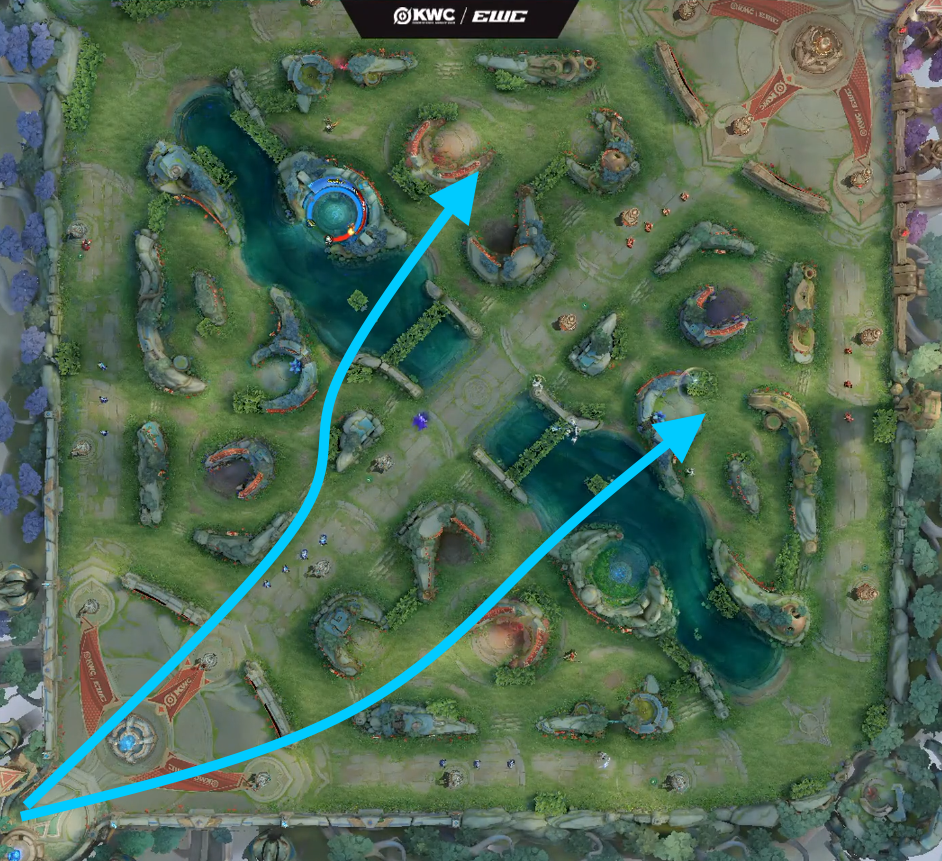
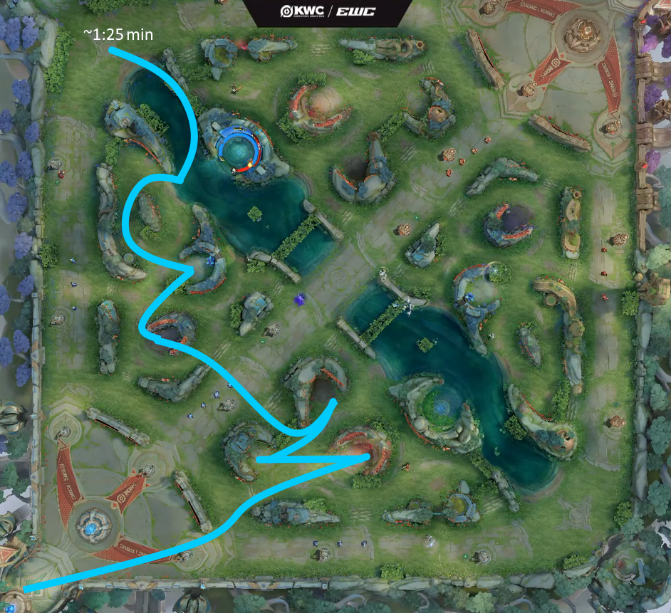
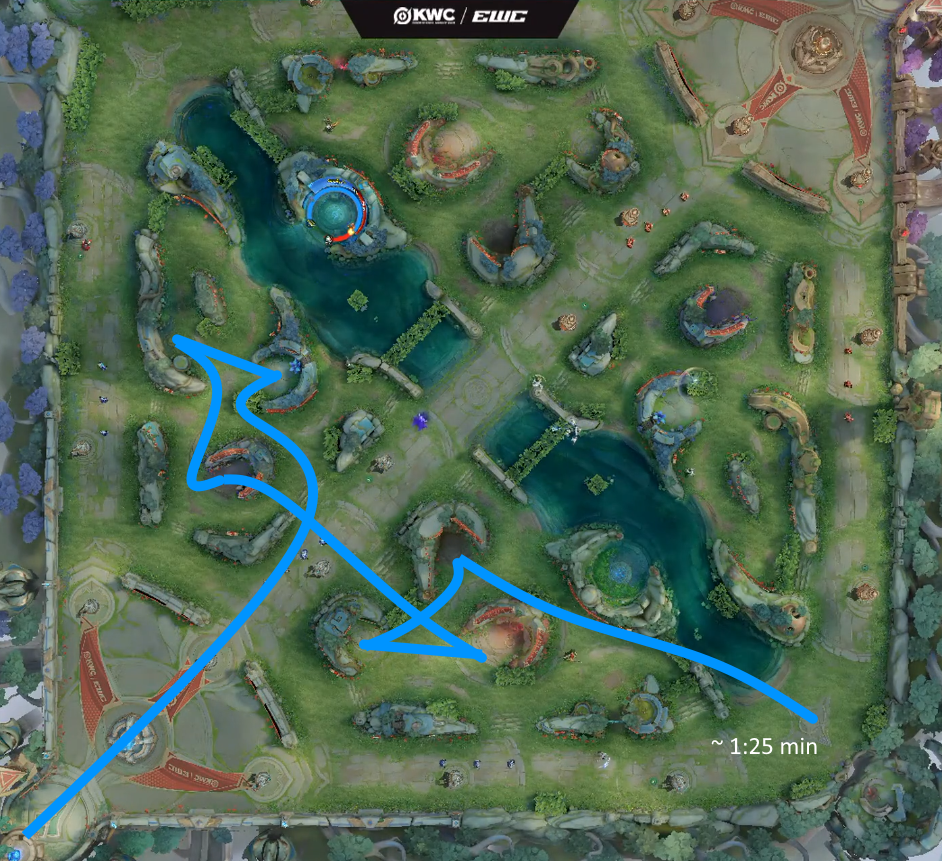
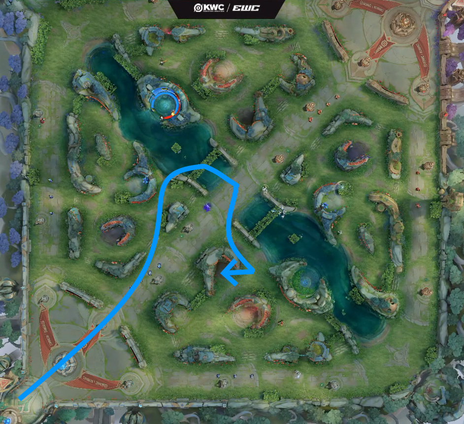
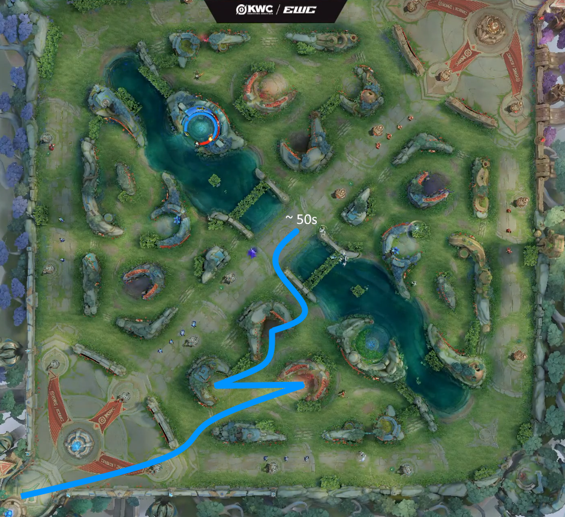
Strong clear, weak clear
Just like a lane matchup, the jungle is decided in part by the hero matchup — but the relevant question is not "who wins the 1v1?" It is "who gets to choose the pace of the first three minutes?"
If you are weaker early — play for the clock
- Do not contest the first invade unless your laners have priority and can rotate. A camp is not worth a death.
- Track the enemy jungler instead. If you know where they are, you know where they are not — and that is where you farm.
- Take the camps they leave. If they invade your blue side, their red side is free.
- Farm to your power spike and arrive at fights as the stronger player, not as a body.
If you are stronger early — be the problem
- Invade their first camp. Deny their level 4 power spike and take the tempo for yourself.
- Gank the lanes your priority laners can follow up on. A gank with setup is a kill; a gank without it is a cooldown spent.
- Force the enemy jungler to react to you rather than the other way around. A reactive jungler is always one step behind.
- Convert your lead into objectives before your window closes. An early lead that never becomes a dragon is just a bigger score line.
The 1:25 side-lane gank. Your full clear finishes at roughly 1:25, level 4, ultimate up. That is when the side lanes become gankable. It is also the window where the laner who has been holding their wave (per the optimal path) is closest to their own tower — which makes the gank harder to land and more rewarding when it does. If you are going to gank a side lane, this is the window. If you skip it, you are giving the enemy jungler the first side-lane play for free.
The gank decision
A gank that fails still costs your team tempo. That is the single most important fact about jungling, and it is the one most players learn last. Before you commit to a lane, ask four questions:
- Can the lane actually follow up? Does your laner have their cooldowns, their health, and the wave position to commit? A gank onto a laner who is under their own tower with 30% health is not a gank — it is a free kill for the enemy.
- Do they have vision of me? If the lane is warded, your gank is a walk-in. Either come from a different angle, or accept that you are forcing a summoner spell rather than a kill.
- What am I giving up on the other side of the map? If you gank top and the enemy jungler takes the dragon at the same moment, you did not just fail to get a kill — you lost an objective. Know what your gank costs before you commit.
- Does the kill convert? A kill that lets you take a tower, a objective, or a free recall for your carry is worth far more than a kill that just resets the lane. The best ganks are the ones that turn into something the enemy cannot answer.
The gank you do not take is often worth more than the gank you take. A jungler who farms efficiently, tracks the enemy, and arrives at the right fight is more valuable than one who ganks three times and gets one kill but gives up two objectives in the process.
Know when to fight. Sun Tzu: "He who knows when he can fight and when he cannot will be victorious." The jungler's version of this is the gank decision. The best junglers are not the ones who gank the most — they are the ones who know which ganks to skip. A failed gank is not just a missed kill; it is a camp, a tempo window, and an objective given away for free.
Gold sharing and the mid wave
This is the mechanic that separates Honor of Kings from most other MOBAs, and the one that junglers most often get wrong.
In HoK, sharing a wave is not a penalty — it is a team-wide gold increase. When you clear a wave with the mid laner and the roamer, one of you takes the last hits and the others take the pressure, and the total gold the team gains is higher than if any one player had farmed it alone. That is why the World Cup opening pattern has the jungler, mid laner, and roamer sharing the mid wave at 20 seconds and again at 50 seconds. The jungler gets gold and tempo, the mid laner gets priority, and the team's total gold goes up.
Which player takes the last hits depends entirely on who your team is building around:
- If your win condition is a late-game mage, the mid laner takes the last hits and the jungler takes the rotation.
- If your win condition is a snowballing jungler, the jungler takes the last hits and the mid laner takes the wave pressure.
- If your win condition is your marksman, both of you take the tempo and your ADC takes the farm lane.
Neither is correct in the abstract. Both are correct in context. But what is never correct is a jungler who refuses to share a wave because they want the gold. That is a solo-queue habit, and it costs the team far more than the extra gold is worth.
Counter-jungling and tracking
The most valuable skill a jungler can develop is not mechanics. It is knowing where the enemy jungler is — or, more precisely, knowing where they are not.
Every piece of information on the map tells you something about the enemy jungler's position:
- Which buff they started. The camp they open determines which side of the map they finish on, and therefore which lane they can reach first.
- Which camps are missing on the minimap. If their red buff is gone and their blue buff is up, they are on the red side of the map. If both are gone, they are either clearing toward you or already in a lane.
- Which laner is missing or has priority. A laner who has been pushed under their tower for two waves is a laner the enemy jungler cannot gank — so the enemy jungler is somewhere else.
- Their power spike timing. A jungler who wants level 4 before ganking is on a schedule. Count their camps and count their level, and you know when they are coming.
Once you know where they are, counter-jungling becomes safe. Invading the enemy's camps when you know they are on the opposite side of the map is not a risk — it is a free trade. You take their gold and tempo, and they cannot contest you because they are somewhere else.
The reverse is also true: if you do not know where the enemy jungler is, you cannot safely invade. Do not walk into their jungle blind. The camps will still be there in thirty seconds. You will not be if the enemy jungler is waiting for you.
Tracking is a habit, not a skill. Every ten seconds, look at the minimap and ask: where is the enemy jungler, and what does that tell me I can do? Do it long enough and you will stop having to ask. You will just see it, the way you see your own health bar.
Smite and the objective clock
You own the objective clock. Not the IGL, not the roam, not the clash laner — you. The three hard timings marked in the Macro chapter — 4:00, 10:00, and 20:00 — are your responsibility to call. Everything else on the objective chain is negotiable. Those three are not.
Being the Smite carrier means two things:
- You are the last line of defence against a steal. When the objective drops low, the enemy jungler is looking for the same window you are. Your Smite has to land before theirs does. That means knowing your Smite damage cold, watching the objective's health bar, and not getting baited into using it early by a fake engage.
- You are the team's primary steal threat. When the enemy team is taking an objective your team cannot contest, you are the player who makes the steal possible — either by out-damaging Smite with an instant burst combo, or by landing hard CC on the enemy jungler so they cannot cast Smite at all. The Macro chapter covers the two steal routes in detail; the point here is that the steal is your play to make, not someone else's.
Do not die for an objective your team cannot contest. Dying for a dragon is almost never worth it, with two exceptions: the Tempest Dragon at 20:00, and an Overlord that is about to end the game. Outside those two cases, the rule stands: if you cannot steal without dying, do not steal. Stall, trade, and come back for the next one.
Reading the enemy's weakness
Every team defends imperfectly. The difference between an average jungler and a game changer is that the average one plays their own game, and the game changer plays the enemy's mistakes. The weakness is always there — you just have to know where to look.
Five places to search, in rough order of how often they pay off:
- The laner with the losing matchup. They are behind on gold, under pressure, and desperate to farm. That desperation puts them in gankable positions — past the river, low on health, or too far forward for a last hit they cannot afford to miss.
- The carry with no escape. A marksman or mage whose only defensive tool is a flash on cooldown. If you have seen them burn it, you have roughly ninety seconds to punish it. That is your window — use it before it closes.
- The side of the map with no vision. The gaps from Figure 1 are not just a defensive problem for your team; they are an offensive target against theirs. If a corridor is unwarded, you can walk through it unseen — and a gank the enemy never saw coming is a kill before they can react.
- The objective timer. When a dragon is about to spawn, the enemy team must move toward the pit. That movement is predictable, and predictability is the weakness. You know where they will be, and that means you can be waiting there first.
- The player who is tilting. Watch the map, not the scoreboard. A laner who has died twice and is pushing recklessly, or a support who is warding alone, or a jungler who keeps invading without vision — those are players who are no longer making decisions, and those are the players you punish hardest.
Once you have found the weakness, do not just exploit it once. Exploit it until the enemy fixes it — and if they do not fix it, keep going until they lose. A jungler who finds the enemy marksman alone on the far side of the map and kills them three times in ten minutes has not just won those three kills; they have taken the enemy's win condition off the map. That is what "game changer" actually means.
Strike at weakness, not strength. Sun Tzu: "So in war, the way is to avoid what is strong and to strike at what is weak." The jungler who ganks the lane where the enemy is strongest is wasting time. The jungler who ganks the lane where the enemy is weakest is converting pressure into gold. The same principle applies to objectives: do not fight for the pit the enemy has warded and stacked. Take the tower on the other side of the map, then come back when the pit is uncontested.
Mid and late game
The jungler's job changes the moment towers start falling. In the first ten minutes, you are a pressure role — invading, ganking, and forcing the enemy to react. After 10:00, you are an objective role — and after 15:00, you are a flank role.
Three things change:
- You cannot farm forever. Once the map opens up, the safe camps disappear. If you are still trying to full-clear at 15 minutes while your team is fighting over a Shadow Overlord, you have already lost the fight — you just have not died in it yet.
- Your flanks matter more than your ganks. A gank in the opening phase is about creating a numbers advantage in a lane. A flank in the mid game is about arriving at an objective fight from an angle the enemy cannot see. The two are the same skill, scaled up.
- Your Smite becomes the team's insurance. At 20:00, the Tempest Dragon can end the game. If you are not alive, positioned, and holding Smite when that objective drops, your team's entire game plan falls apart. That is your job now.
The junglers who fall off hardest in the mid game are the ones who keep playing the opening-phase game — farming camps, looking for solo kills, avoiding the objective — long after the game has moved on. The junglers who stay relevant are the ones who recognise that their role has changed and change with it.
The jungler as flanker
Clash is the only lane that regularly flanks, but you are the only role that can flank from anywhere. There is no wave tying you to a position, no tower you have to defend, no matchup you have to respect. You can arrive at every fight from the angle the enemy least expects — and that is the single biggest thing you bring to a coordinated team.
Two things separate a good jungle flank from a bad one:
- You arrive after the fight has started, not before. A flank that arrives first is not a flank — it is an engage, and engages need a different setup. The flank works because the enemy frontline has already committed forward, which means the backline is exposed and cannot retreat without abandoning them.
- You are aiming at the backline, not the frontline. A jungler who dives the enemy tank is doing the tank's job for them. Your job is to be the reason the enemy marksman cannot free-hit — whether that means killing them, forcing them to reposition, or simply making them play the whole fight looking over their shoulder. The fear is the value, whether or not you land the kill.
March where you are not expected. Sun Tzu: "Appear at points which the enemy must hasten to defend; march swiftly to places where you are not expected." This is the entire art of the jungle flank in one sentence. The enemy expects you to come from the front, along the lane, with the rest of your team. You come from the side, through their jungle, from behind the pit — anywhere they are not looking. The gank that arrives from the wrong angle is the gank that lands.
Clash flanks with a tower attached. You flank with nothing attached. That is the whole trade. The clash laner's flank comes with a wave pushing into a tower, which forces the enemy to keep someone on that side of the map. Your flank comes with nothing — which means it is faster, freer, and completely unforgiving if it goes wrong. Nobody can cover for you. Get it right.
Jungler checklist. Before the first camp: know your lane priorities, your win condition, and where the enemy's weakness is. Camp timers: 90s for buffs, 70s for small camps, 60s for the Teleport Sprite — plus a 3-second spawn animation. Gank inside the respawn window, farm outside it. First clear: invade if your laners have priority, gank mid at 20s or 50s, full clear to 1:25 for the side-lane window. Gank decision: can the lane follow up, are they warded, what am I giving up, does the kill convert. Gold sharing: share the mid wave toward your win condition, never hoard it. Tracking: every ten seconds, ask where the enemy jungler is and what that lets you do. Counter-jungling: only invade when you know where they are. Objectives: you own the 4:00, 10:00, and 20:00 clock. Reading the weakness: find the player who cannot stop you, and make the game about them. Mid game: stop farming, start flanking. You are the game changer — act like it.
Mid Lane
Control · CC / Burst Mage · TeamfightMid is the shortest lane and the centre of the map. Whoever controls mid controls the fastest route to every fight on the map. That makes the mid laner the team's second caller, the second vision provider after the roam, and — in most drafts — the team's main source of magic damage and area control.
But the mage's real job is not the lane. It is the teamfight. More than any other role, the mage is the one whose value is measured in the five-man fight — area damage, crowd control, and the magic damage that makes the enemy frontline killable. Everything else the mage does in the game — clearing the wave, rotating to a side lane, warding the river, stealing the boars — exists to put the mage in the right position, at the right time, with cooldowns up, for the next fight.
Your priority in lane is wave clear. If you can shove the wave first, you get to move first, and moving first means your team gets to fight 4v3. Push, look at the map, and leave — you do not need to stand in lane waiting for the next wave to arrive.
But clearing lane is not the job. It is the precondition for the job. The mage who clears and then does nothing has won the wave and lost the map. The mage who clears and then rotates is the one who decides where the next fight happens.
Your job before the first wave
Mid is decided by three questions, and you should be able to answer all three before the minions meet:
- Who wins the push? Not the 1v1 — the push. Whose wave clear is faster at level 1, and therefore who gets to move first? If it is you, you open the map for your jungler. If it is them, you have to play the first two minutes defensively and let the wave come to you.
- Where does your damage come from? Are you the team's primary magic damage, a secondary threat behind a physical carry, or a utility mage whose job is to enable someone else? This determines whether you build for damage or for the team, and it determines who takes the mid wave gold when you share.
- Who is your lane opponent, and what do they want? A burst mage wants to roam and pick. A CC mage wants to hold mid and force fights in the pit. Knowing which one you are facing tells you whether to match their rotation or punish it.
If you cannot answer those three, you are not playing mid. You are standing in the middle of the map and hoping the game comes to you.
The two mage archetypes
Mages do not all do the same thing, and the mistake players make is assuming their job is the same as the last mage they played. There are two broad archetypes, and each one contributes to a teamfight in a different way:
- The CC mage — pressure through denial. A caster whose job is to take the enemy's options away. Your value in a teamfight is not damage — it is the window you create: a moment when the enemy cannot cast skills, cannot reposition, and cannot peel for each other, and is therefore defenceless against the rest of your team. That window is the whole point. Your teammates do the killing; you make the killing possible. The same tool is the strongest thing in the game for ganks and traps — a stun on a rotating laner is a kill your team did not have to earn — and it is the natural counter to engage heroes and assassins, because both of them need to move to do their job, and you are the player who stops movement. Outside of fights, the CC mage zones — casting skills on the entry points of an objective pit so the enemy cannot walk in while your team takes it, or so that they suffer if they try. And it is the CC mage who makes objective steals possible: land hard CC on the enemy jungler at the right moment and they cannot cast Smite at all. Where a CC mage has range, they also apply poke — chipping the enemy down between fights so that every engage starts against a team already at 60% health.
Some mages lean toward one of these, and some shift depending on the draft and the game state. A CC mage who is far ahead may be able to burst a carry; a burst mage who is behind may have to play as zone control and chip from range. Read your impact before the first wave, and re-read it every time the gold swings.
Control the centre, control the fight. Sun Tzu wrote that "the line between disorder and order lies in logistics" — and in Honor of Kings, mid lane is the logistics of the whole map. Every rotation, every objective, every gank passes through or near the centre. Whoever holds it chooses the pace. Whoever loses it spends the rest of the game reacting.
Strong side, weak side
Once you know the push matchup, the lane plays itself. Note that "strong side" here is about the push and the 1v1 — not about who wins the game. A weak-side mage can still be the reason the team wins the fight, and a strong-side mage can still lose it.
If you are weaker — play for the wave
- Do not contest the first wave. Let it come to you, and clear it under your own tower where the enemy cannot punish you.
- Call for a gank early if you are being shoved in. Mid is the shortest lane and the easiest one for your jungler to reach — use that.
- Do not try to match a rotation you cannot match. If the enemy mage rotates first and you cannot follow safely, ping the lane they are heading to and let your team play around it.
- Farm what you can reach and give up what you cannot. A missed minion is not a loss; a death in the river is.
If you are stronger — be the tempo
- Push first, move first. Every wave you shove is a rotation your team gets for free.
- Force the enemy mage to choose between farming and following you. Either way you win — if they farm, you are ahead on the map; if they follow, they are walking into your team.
- Take the small jungle camp on your side of mid (see the boar section below) when it is safe, and tell your team you did.
- Be the reason your jungler can invade safely. Mid priority is the permission slip for every aggressive play on the map.
Vision — you are the second pair of eyes
The roam provides vision on the river and the jungle entrances. You provide the vision that the roam cannot: the mid-lane side bushes, the corridors between mid and the side lanes, and the deep ward that tells your team whether the enemy jungler is coming from the top or the bottom.
Three habits make a mid laner's vision worth more than anyone else's:
- Ward the side of the map you plan to rotate to. If you intend to gank the clash lane, ward the river corridor on that side before you go. You are not warding for safety — you are warding so your gank is not the one that gets counter-ganked.
- Ward when you shove, not when you retreat. A ward placed while you are pushed up is worth ten placed while you are running back to your tower. Use the priority you just earned to place the ward, then rotate — do not walk past the river first and try to ward on the way back.
- Replace the roam's ward when they rotate away. The roam cannot be in two places at once. When they leave your side of the map, their ward dies with them. You are the player standing closest to the mid river — the gap is yours to cover.
Vision is not the support's job. It is the job of whoever is closest, and mid is the closest player to more of the map than anyone else. If you are only warding the bush next to your lane, you are playing mid at half value.
The most ganked lane in the game
Mid is the most ganked lane in Honor of Kings, at every level of play. In community matches and in the professional leagues alike, both teams funnel pressure toward the mid tower — because a mid tower falling at six minutes opens the entire enemy side of the jungle, and the team that loses it spends the rest of the game reacting. The jungler, the roam, and often both together will make mid their first stop.
There is a second reason mid gets focused, and it is the one most players miss: the enemy is trying to kill the mage before the teamfight, not during it. A mage who is dead cannot drop area damage, cannot land CC, and cannot kill the carry. Removing the mage from the map for thirty seconds is often worth more than any single kill in the fight itself — because the fight the enemy is about to take is the fight the mage was supposed to win. This is why mid is not just the most ganked lane, it is the lane where the enemy's pressure is most purposeful.
That means two things for you:
- You are the target, not the spectator. More enemy cooldowns will be spent on you in the first ten minutes than on anyone else on the map. Your vision habits and your map awareness are not luxuries — they are the reason you survive the opening and the reason you are alive for the fight that matters.
- Situational awareness is your most important stat. More than damage, more than wave clear. If you know where the enemy jungler and roam are, you can push safely. If you do not, you are a free kill in the most expensive lane on the map — and the fight you were meant to win happens without you.
Know the gank spots. There are only a handful, and they are always the same:
- The river corridor on each side of mid. The most common route. The roam or jungler walks the river and enters mid from the side that has no vision. If you are pushed up and neither side of the river is warded, you are standing in the most gankable spot in the game.
- The bush cluster beside the lane. The small bushes on either side of mid are the jungler's second-favourite entry point. They let the ganker arrive without being seen on the minimap until the last second. If your side bush is unwarded and the enemy jungler is missing, assume they are standing in it.
- From the boar camp side. A jungler who clears the small camp next to mid can walk directly into the lane from an angle that is not the river. This is the gank that catches mid laners most often — because they warded the river but not the camp entrance.
- From behind you. The corridor running behind your mid tower — through your own jungle — is the route a flanking jungler uses when your side lanes are pushed. It is rare early, but it becomes the standard route after ten minutes. If your team's jungle is not warded on the side you are pushed toward, a flank is not only possible — it is expected.
The rule. If you do not know where the enemy jungler and roam are, do not stand past the river. The wave you are going to miss is worth less than the death you are going to take. A mage who dies at 4 minutes has given the enemy team the mid tower, the tempo lead, and the run of the map for the next five minutes — and all three of those started with one bad position.
Lane clear and rotation
Your rotation is only as good as your wave clear. If you cannot shove the wave faster than your opponent, you cannot rotate — because every step you take toward a side lane is a wave of gold and experience you are giving up. That is the entire reason mid is a mage role: the mages with fast wave clear are the ones who get to move first.
The rotation pattern is simple:
- Shove the wave. Clear it as fast as you can without taking unnecessary damage. Do not trade with the enemy mage while clearing — the point is to finish first.
- Look at the map. Which side lane has the enemy overextended? Which objective is about to spawn? Where is your jungler?
- Move in the direction the answer points. If the clash lane is pushed in and the enemy clash laner is past the river, go top. If the farm lane is under pressure, go bot. If neither, ward the river and return to lane.
- Do not overstay. A rotation that fails and takes 40 seconds is worse than no rotation at all. If the gank is not on, come back to mid. The next wave is more valuable than a bad angle on a kill — and the fight you are rotating toward may still be avoidable.
Two things to remember while you are out of lane:
- You leave your tower exposed. A mid tower falling at 6 minutes opens the entire enemy side of the jungle. If the enemy has any pressure on your tower, do not rotate — the tower is worth more than the gank.
- You cannot always match the enemy mage's rotation. If they leave first, you have two options: follow them and arrive late, or ping the lane they are heading to and stay for the wave. Following late is usually wrong. Arriving second to a fight you did not start means you arrive at the losing end of it.
The rotation rule. Rotate when your wave is pushing, not when it is pushed. If you leave on a wave that is coming toward you, you lose the farm and you lose the tower. If you leave on a wave that is going away from you, you lose nothing and you gain a numbers advantage somewhere else.
Stealing the boars — and telling your team
The small jungle camp on the mid-lane side of the map — the boars — is one of the most underrated resources in the game. It is worth gold and experience, it denies the same to the enemy jungler, and it is close enough to mid that a mage with lane priority can take it without leaving the lane for more than a few seconds.
But here is the part most players get wrong: taking the boars changes the enemy jungler's clock. If you steal the camp, the enemy jungler's clear pattern breaks — their power spike arrives later, their gank timing shifts, and their rotations become unpredictable. Unpredictable is not the same as bad news. It is just news your team needs to hear.
Call it out. If you steal the boars, tell your team. A single line in chat — "boars gone, their jungler is late" — is worth more than the gold you gained. Your laners now know that the enemy jungler's level 4 spike is delayed and that the first gank window has shifted. Without that information, your team is playing against a clock that no longer exists.
Three rules for the boar steal:
- Only take it when you have priority. If you are being shoved in, walking to the jungle is how you die. The steal is a reward for winning the wave, not a replacement for it.
- Only take it when you know where the enemy jungler is. If they are on the other side of the map, the boars are free. If they are anywhere near mid, you are walking into a fight you did not choose.
- Always tell your team. The gold is nice. The information is the point. A stolen camp that nobody knows about is just a small advantage; a stolen camp that everyone knows about is a tempo swing the whole team can play around.
Teamfights — where the mage actually lives
This is the section the rest of the chapter has been building toward. Everything else the mage does — the wave clear, the rotation, the boar steal, the ward on the river — is in service of one moment: the five-man fight. If the mage is not where the teamfight is, and alive when it happens, none of the rest of it mattered.
In a teamfight, the mage has two jobs, and you cannot do both at once. Decide which one this fight needs before the fight starts.
Job one — area damage
- Your spells hit multiple targets. Use them where the enemy team is grouped, not where one target is standing.
- Wait for the enemy frontline to commit, then drop your area on the backline they just left exposed.
- Do not lead the engage. You are the follow-up — the damage that lands while the enemy is dealing with your frontline.
Job two — crowd control
- Your CC is the team's setup. Use it on the enemy's most dangerous player, not on whoever is easiest to hit.
- CC on the frontline is worth less than CC on the carry. A stunned tank is a tank. A stunned marksman is a dead one.
- Hold your CC for the moment the enemy commits. A CC that lands too early is a CC the enemy can walk away from.
You cannot do both jobs in the same instant. If your team has no other reliable engage, you are the CC. If your team has a strong frontline and a solid pick threat, you are the damage. Read the fight before it happens, and commit to one role. A mage who tries to do both ends up doing neither.
Three more things every mage has to remember in fights:
- You are the team's main source of magic damage. If you die early, the enemy frontline becomes unkillable. Your positioning is not just your problem — it is the team's damage problem. Stay behind the frontline, stay at max range, and do not chase kills you cannot safely reach.
- You are the enemy's primary target. Assassins, divers, and any jungler with a flank route are looking for you. If you do not know where they are, assume they are behind you. The mage who dies first in a fight is the mage who lost the fight — and the enemy team knows it. That is why they gank you in lane: they are not trying to win the lane, they are trying to win the fight before it starts.
- Your cooldowns are the fight's clock. A mage without cooldowns is a body. Do not enter the fight until your key abilities are up, and do not leave the fight with them unused. Time your entry so that your damage lands at the moment the enemy frontline has committed and the enemy backline is exposed.
The mage's real job. Everything else in this section — the lane, the rotation, the boars, the vision — is what gets you to the fight. The fight itself is where the mage earns their place on the team. Play the lane like it matters, but remember: the lane is not what you are paid for. The teamfight is.
Antiheal — and why it is your job
Antiheal is not a damage item. It is a team item, and it is almost always the mage's responsibility to buy it. Here is why.
Every team in the game has healing somewhere: a sustain-heavy fighter in the clash lane, a lifesteal marksman, a support with a heal, a jungler with regen, an Overlord buff that restores health, a Tempest Dragon shield that regenerates. If none of that is reduced, your team's damage is being undone faster than you can apply it. A teamfight that should be a kill becomes a slow loss because the target out-sustains your burst.
Antiheal fixes that. It reduces the healing the enemy receives, which turns sustain-heavy heroes from unkillable walls into ordinary targets.
And it falls to the mage because:
- You have the most reliable way to apply it. Your area spells hit multiple targets at once. Antiheal applied to three heroes at the same time is worth far more than antiheal applied to one.
- You deal the most magic damage in most drafts. Antiheal on the mage means the enemy's sustain is reduced at the same moment your team's burst is landing. The two effects compound.
- You are the one who decides when the fight starts. If the antiheal is on your kit, you can apply it the moment the fight begins — not after your frontline has already taken the first round of healing.
Buy it early against sustain. Do not wait until the enemy is already unkillable. If you can see on the draft screen that the enemy has two or more sustain threats — a lifesteal marksman, a healing support, a tank with regen — buy antiheal on your first or second back. The gold you spend on it is gold you are not spending on damage, but the damage you already have is worth more when the enemy cannot heal through it.
The exception is when someone else on your team is already buying it. If your roam has antiheal and applies it reliably, you do not need to double up — the effect does not stack, and the gold is better spent on damage. But if nobody else has it, and the enemy has healing, it is your job. Not the roam's, not the clash laner's. Yours.
Mid lane checklist. Before the first wave: know who wins the push, where your damage comes from, and what your lane opponent wants. Remember the mage's real job is the teamfight — everything in lane exists to get you there alive, on time, with cooldowns up. First waves: clear fast, do not trade while clearing, and ward the side of the map you plan to rotate to. The most ganked lane: mid is where both teams focus their pressure, because killing the mage before the fight is how you win the fight. Track the enemy jungler and roam every ten seconds and know the four gank routes — the river on each side, the side bushes, the boar camp entrance, and the corridor behind your tower. If you do not know where they are, do not stand past the river. Rotation: shove first, look at the map, move, do not overstay. Boar steal: only with priority and vision of the enemy jungler — and always tell your team. Vision: you are the second pair of eyes; ward the river when you shove, replace the roam's ward when they leave. Teamfights: choose between area damage and CC before the fight starts, and commit. Positioning: stay behind the frontline, stay at max range, assume the enemy assassin is behind you, and never enter the fight without your cooldowns. Antiheal: if the enemy has two or more healing threats and nobody else is buying it, buy it — that is your job.
Roam
Support · Vision · EnablerThe roam is the most misunderstood position in the game and the one that decides the most games. You are not a bodyguard. You are not a second jungler. You are the team's vision, its map presence, and the player who fills every gap the other four roles leave open.
Your job is not to have good stats. It is to maximise your team's chance of winning — by identifying the enemy's weaknesses, covering your own team's blind spots, and being wherever the next problem is going to be before it happens. Sometimes that means tanking the first wave of cooldowns and starting the fight. Sometimes it means securing your carry's retreat instead of chasing the kill. Sometimes it means zoning the enemy off an objective pit so your team can take it for free. The role is whatever the game needs at that exact moment — and knowing which one it needs is the entire skill.
This is why the role is so often underestimated. A roam on their own barely deals any damage. They cannot solo-kill a carry, they cannot take a tower, and they cannot win a fight by themselves. What they can do is decide the fight before it starts — with a well-timed heal, a vision line placed one second before the enemy commits, or an engage that lands on the exact frame the enemy carry steps out of position. At low level, that looks like nothing. At high level, it is how matches are won.
The well-timed swoop of a falcon. Sun Tzu wrote: "The quality of decision is like the well-timed swoop of a falcon which enables it to strike and destroy its victim." The roam is the role that lives or dies by timing. A heal cast one second late is a heal wasted. A ward placed one second after the enemy commits is a ward wasted. An engage that lands half a beat too early is an engage your team cannot follow. The roam's whole contribution is in the timing — and timing is invisible on the scoreboard.
Your job before the first wave
The roam's opening is decided before the minions meet, and it is decided by three questions:
- Where is the enemy jungler starting? Not "roughly" — exactly. Which buff, which side, and what does that tell you about their first rotation? The roam is the player who closes the gaps in Figure 1, and the gaps open the moment the enemy jungler moves. You cannot close a gap you have not identified.
- Who is my team's win condition? The player or pairing whose power spike, if reached, wins the game. Your early game is built around getting that player online — or around denying the enemy's. If the answer is your marksman, you play the farm lane side. If it is your mid mage, you hover mid. If it is your clash laner's split-push, you rotate to their side when the wave state allows it.
- What does my team need me to be this game? See the archetypes below. A tank roam, a CC roam, a healer roam, and an enhancer roam all play the first ten minutes differently. Know which one you are before the game starts.
If you cannot answer those three, you are not roaming. You are walking around the map and hoping something happens in front of you.
The four roam archetypes
Roam heroes do not all do the same thing, and the mistake players make is assuming their job is the same as the last roam hero they played. There are four broad archetypes, and each one fills a different gap on the team:
- The tank — pressure through presence. A roam whose value shows up in the fight itself: soaking the first wave of cooldowns, absorbing the enemy engage, and making the fight survivable for everyone else. You are the frontline that walks in first. Your job is to be the reason your backline gets to play the game. If this is you, you do not need to land every engage — you need to be alive at the end of every fight and standing between your carry and the enemy's dive.
- The CC provider — pressure through denial. A roam whose value is in the CC. You are the team's primary setup: the stun that starts the pick, the root that stops the flank, the knock-up that wins the objective fight. Your job is to take enemy options away — the same job as the CC mage, but you do it from the front instead of from the back. Your engage is usually the fight's opening move, and your peel is usually what saves the carry when the enemy dives.
- The healer — pressure through sustain. A roam whose value is in keeping the team on the map and in the fight. You do not tank and you do not engage. You heal, shield, cleanse, and top up the team between fights. Your job is to make sure the carry never has to recall at the wrong moment, and that a fight the team almost loses becomes a fight the team wins because nobody actually died. If this is you, your positioning is the whole kit — you cannot heal a carry you cannot reach, and you cannot heal anyone if you die first.
- The enhancer / debuffer — pressure through amplification. A roam whose value is in the numbers: buffing your carry's damage, shredding the enemy tank's resistance, applying antiheal, slowing the diver, or amplifying your team's engage into a kill. You do not tank and you do not heal directly — you make everyone else better at what they already do. Your contribution is invisible in the scoreboard and enormous in the outcome, because the difference between a kill and an escape is very often one debuff applied at the right moment.
Most roam heroes lean toward one of these, and a few can shift between them depending on the draft and the game state. A tank who is far ahead may play as a CC provider; a healer who is behind may have to play as a buffer for the carry instead of a saver of the team. Read your impact before the first wave, and re-read it every time the gold swings.
Fill the gap that is actually open. The four archetypes are not four separate jobs — they are four answers to the same question, and the right answer changes from fight to fight. A tank roam who only ever engages is a tank roam who never peels. A healer roam who only ever heals is a healer roam who never applies pressure. The role is defined by the gap, not by the kit. Find the gap. Fill it.
Vision — the roam is the team's eyes
You are the team's primary vision provider. Not the only one — the mid laner also wards, and everyone in the game should be buying control wards — but you are the one whose job is built around it. Everything your team does on the map depends on what you can see, and everything the enemy team does is easier if you cannot.
Three habits make a roam's vision worth more than anyone else's:
- Ward before the play, not during it. A ward placed 30 seconds before an objective spawns is worth ten placed the moment the fight starts. You are the player who is not anchored to a lane, which means you are the player who can place the ward at the right time in the right spot — before anyone else needs the information.
- Ward the corridors the enemy will actually use. The gaps in Figure 1 are the whole map's problem, and you are the player whose job it is to close the ones your team is currently exposed to. If your clash laner is pushed, ward their side. If your mid laner is being shoved in, ward the river. If your jungler is invading, ward the enemy's opposite jungle entrance. Vision is not a habit — it is a response to what your team is doing.
- Replace your own wards before they die. A ward that has expired is worse than a ward that was never placed, because your team is playing around information that no longer exists. Track your ward timers. When one is about to drop, place the next one. The map should be lit continuously, not in bursts.
The spot where you intend to fight must not be known. Sun Tzu wrote: "The spot where we intend to fight must not be made known; for then the enemy will have to prepare against a possible attack at several different points." Vision is how you force the enemy to prepare for several different points at once. The team that can be seen is the team that can be answered. The team that cannot be seen is the team the enemy has to guess about — and guesses lose games.
Reading the map — detecting threats in advance
The roam's second job, after vision, is reading the map faster than anyone else on the team. Not reacting to what has happened — anticipating what is about to happen. This is the skill that separates a good roam from a great one.
Four signals tell you a threat is coming before anyone else sees it:
- The enemy jungler's position on the minimap. You do not need to see them — you need to know where they were last and how long ago. If they were bot side thirty seconds ago and the mid wave is pushed, their next gank is probably top. You know that before your clash laner does, and you can be the one to warn them.
- The enemy laner's behaviour change. A passive laner who suddenly steps forward is not being aggressive — they are baiting. A pushed laner who suddenly walks back is not retreating — they are setting up a dive. Watch behaviour, not just position.
- The objective timer. Objectives force movement. When a dragon is about to spawn, the enemy team must move toward the pit. That movement is predictable, and predictable movement is a warning you can act on before the fight starts.
- The wave state across all three lanes. If two of your three lanes are pushed, the enemy is about to rotate somewhere. If all three are pushed, your team is in a window to take an objective for free. The wave state is a schedule, and you are the player whose job it is to read it.
The roam who reads the map correctly is worth more than the roam who fights well, because the roam who reads the map correctly makes the fights happen at the right time — and the fights that happen at the right time do not need to be won with mechanics.
The opening rotation
The Macro chapter lays out the full opening pattern (Figure 2), and the roam's specific job inside it is simple: hug the ADC side of mid. That position lets you ward the river corridor, reach a mid gank in one step, and still walk back to the farm lane if the enemy dives your ADC.
From that position, the roam's job in the opening is threefold:
- Support the invade. If your jungler is invading, you are the second body that makes the invade safe. You do not need to take the camp — you need to be standing between your jungler and the enemy laners who want to punish the play.
- Share the mid wave. In HoK, gold sharing is a team-wide increase, not a penalty. When you are in mid at 20 seconds or 50 seconds and the wave is being taken, you take a share of it. You are not stealing from your mid laner — you are adding to the team's total gold. The Macro chapter covers this in full.
- Return to the farm lane when it matters. The farm lane is the one lane where the roam's presence actually changes the outcome, because the marksman is squishy and the enemy jungle is looking for exactly that. If your ADC is being shoved in or dove, you go back. If they are safe and farming, you stay on the map.
The roam does not have a lane. That is the point. If you spend the first five minutes standing beside your ADC, you are not a roam — you are a second support in a 2v2, and you are wasting the one advantage your role has. The roam's value comes from being elsewhere, at the moment that elsewhere matters.
Objectives — zoning, setup, and the pit
The roam's job at an objective is not to hit the objective. It is to make sure the objective is uncontested, or that the enemy team pays a price for trying to contest it. That job has three parts:
- Zone the pit before the enemy arrives. This is where zoning matters most. A tank roam shields the entry path with their body or their defensive skills, standing between the enemy and the objective so they cannot walk in. A mage roam (when the mage is played in the roam slot) casts skills on the entry points so that anyone trying to enter takes damage or gets controlled on the way in. Either way, the point is the same: you do not have to hit the enemy to stop them. You only have to make the space they need to enter feel unsafe.
- Set the vision before the objective spawns. The pit entrance, the two flank corridors, and the bush cluster behind the pit all need to be warded before the spawn timer hits zero. If the enemy jungler can see your team grouped at the pit and cannot be seen themselves, the fight is already half lost — you are the player whose job it is to prevent that.
- Hold the retreat line. If the fight goes wrong, the roam is the player who makes the retreat survivable. Peel the diver off the carry, body-block the skillshot, sacrifice a cooldown or your own life so that the damage dealers can walk away. A team that loses a fight and keeps four players is a team that is still in the game. A team that loses a fight and gives up a pentakill is not.
Zoning is not passive play. A roam who sits at the pit entrance and threatens the enemy without committing is doing more than a roam who dives in first and dies. The threat is the play. You do not have to win the fight to win the objective.
Teamfights — engage or peel, never both
In a teamfight, the roam has two possible jobs, and you can only do one of them at a time. The mistake players make is trying to do both and ending up doing neither.
Job one — engage
- You start the fight. You land the first CC, you dive the backline, you force the enemy to react to you.
- Correct when your team is ahead, when the enemy carry is out of position, or when the objective timer forces a fight you need to take on your terms.
- The engage has to land. A failed engage is worse than no engage at all — the enemy team gets to start the fight on their terms, and your team is one cooldown down.
- If you engage, you do not peel. Your carry has to look after themselves while you create the space. This is why you should only engage when you know they can survive without you.
Job two — peel
- You protect. You stay with your damage dealers, you save your CC for the enemy diver, and you make sure your carry lives through the fight.
- Correct when the enemy has a strong dive, when your carry is ahead, or when the enemy team is the one forcing the fight.
- Peel does not mean standing still. It means positioning between your carry and the enemy threat, and using your cooldowns to remove the diver's window to kill.
- If you peel, you do not engage. Your team has to start the fight without you, and you have to trust them to do it. This is why you should only peel when your team has another reliable way to start.
Choosing between the two is not a mechanical decision — it is a read of the fight. If your marksman is ahead and the enemy has a dive jungler, you peel. If your marksman is behind and the enemy has no reliable engage, you engage. If your team has no other way to start the fight, you engage regardless — because a fight that never starts is a fight your team loses on the map.
The hardest decision in the role. A roam who engages and dies has given their team a winning fight. A roam who peels and lives has given their team a surviving carry. Both are correct — in different games, at different moments, against different drafts. The mistake is not picking the wrong one. The mistake is picking one and playing it half-heartedly.
Why the role is underestimated
The roam often finishes the game with the best KDA on the team. Few deaths, a high assist count, and the kind of stat line that looks, on paper, like a clean performance. That is not a coincidence — it is what the role produces. A roam who dies is usually a roam who has already done their job, and a roam who lives has usually been in the right place at the right moment for the whole game.
And yet the role is systematically undervalued. The reason is not the scoreline. It is damage. A roam on their own barely deals any damage. They cannot solo-kill a carry, they cannot take a tower, and they cannot win a fight by themselves. Put a roam in a 1v1 against almost any other role at equal gold and they will lose — not because they are playing badly, but because the kit is not built for it.
This is why players look at a roam's stat line and see nothing. The damage graph is at the bottom, the gold is at the bottom, and the contribution is invisible because it is spread across every fight, every rotation, and every objective the team took without being contested. A roam who lands a perfectly timed heal that saves the carry is not on the damage graph. A roam who wards the pit entrance thirty seconds before the dragon spawns is not on the damage graph. A roam who engages at exactly the right moment — the engage that turns a losing fight into a winning one — is not on the damage graph either. But every one of those plays decided the game.
At high level, the roam is a game changer. Not because of the stat line — because of the timing. A well-timed heal, a vision line placed one second before the enemy commits, an engage that lands on the exact frame the enemy carry steps out of position — these are the plays that decide matches at the top level. In a low-level game, the roam looks like the least important player on the map. In a high-level game, the roam is the player whose decisions set the pace of every fight. The role does not become stronger as the game gets better. It becomes visible.
The number that actually matters is not the roam's own scoreline — it is the team's win condition. Did your carry get to their power spike on time? Did your team take the objectives it needed to take? Did the fights happen when your team was ready, and not before? Every one of those questions is answered by the roam's play, and none of them show up on the roam's damage chart.
You are the player who fills the gaps. Every other role has a defined job — a lane to hold, a clock to run, a target to kill, an objective to secure. The roam does not. The roam's job is whatever the team is missing at this exact moment, and the reason the role is so hard is that the answer changes every thirty seconds. When the answer is vision, you ward. When it is engage, you engage. When it is peel, you peel. When it is zoning, you zone. The damage chart will never reflect it, and that is the whole point.
Roam checklist. Before the first wave: know where the enemy jungler started, who your team's win condition is, and which archetype you are — tank, CC, healer, or enhancer/debuffer. Vision: you are the team's primary warder; place wards before the play, in the corridors the enemy will actually use, and replace them before they expire. Reading the map: watch the enemy jungler's position, enemy behaviour changes, the objective timer, and the wave state across all three lanes — detect threats before they arrive, not after. Opening: hug the ADC side of mid, support the invade, share the mid wave, and return to the farm lane only when your ADC actually needs you. Objectives: zone the pit before the enemy arrives, set vision before the spawn timer hits zero, and hold the retreat line if the fight goes wrong. Teamfights: choose engage or peel before the fight starts, and commit to one — never half-do both. And remember: your KDA may be the best on the team, but your damage will be the lowest — and that is the role working as intended. The measure of your play is not your own stat line. It is whether the team's win condition was reached, on time, with the fights happening when your team was ready.
Psychological Warfare
Every fight in a MOBA is fought twice. Once on the map, and once in your opponent's head.
Mechanics have a ceiling. There is a point where your reflexes stop getting faster, your combos stop getting cleaner, and your last-hitting stops getting more consistent. Everyone at your rank has roughly the same hands. What separates the players who climb from the players who plateau is not the ability to press buttons better — it is the ability to make the other player press the wrong button, at the wrong time, for the wrong reason.
That is psychological warfare. It is not trash talk. It is not toxicity. It is the deliberate use of information, positioning, and timing to shape what your opponent believes, so that they make decisions that benefit you. A player who thinks the jungler is top when the jungler is actually bottom will play safe in the wrong lane. A player who thinks you are retreating will chase you into a trap. A player who thinks the objective is contested will rotate to defend it, leaving a tower undefended somewhere else.
None of those mistakes happen because your opponent is bad. They happen because you made them believe something that was not true.
Appear weak when you are strong, and strong when you are weak. Sun Tzu wrote that "all warfare is based on deception." The MOBA translation is exact: your opponent can only act on what they can see, and what they can see is whatever you choose to show them. The gap between what is true and what your opponent believes is the space where games are won.
The core principle: uncertainty is a weapon
Every psychological play in this chapter comes down to one idea: the less your opponent knows, the more they have to worry about. A player who can see you knows what you are doing. A player who cannot see you has to guess — and guessing costs attention, and attention is the most limited resource in the game.
When your jungler disappears from the minimap, the enemy mid laner has to decide: do they push the wave, or do they play safe? They do not know. That uncertainty makes them play differently — usually more cautiously, sometimes more recklessly. Either way, they are now playing around a threat that may not exist, which means they are not playing around the threats that do.
This is why vision control is not just a support job. Every ward you place is a piece of information your opponent does not have. Every ward you deny is a piece of information they were relying on. The map is a fog of war, and the team that understands what the fog is hiding has a permanent advantage.
Three things follow from this:
- Information is a resource. It is worth gold, cooldowns, and sometimes lives. A ward that reveals the enemy jungler is worth more than the gold it costs, because it changes where four other players stand.
- Misdirection is a resource. A piece of information your opponent believes that is not true is worth even more, because it makes them act against their own interest.
- Attention is the target. You are not trying to kill your opponent. You are trying to make them think — about the wrong thing, at the wrong time.
Every role plays the game
Psychological warfare is not the jungler's job or the roam's job. It is every role's job, and each role has a different tool for it. The tool changes; the principle does not.
- Clash — pressure through presence. Your split-push is a psychological weapon before it is a structural one. The enemy team does not know whether you are going to take the tower or rotate to the fight. That uncertainty forces them to keep someone on your side of the map — and that someone is a player who is not defending the objective. You do not have to win the 1v1. You have to make the enemy team believe you might.
- ADC — pressure through threat. Your damage is the threat. A marksman who is alive and in position is worth more than a marksman who is dead, but a marksman who looks like they are about to commit is worth more than both. If the enemy backline does not know whether you are going to step forward or back off, they cannot position correctly. They will either play too far back — giving your frontline free space — or too far forward — giving you a free kill.
- Jungler — pressure through absence. You are the role whose absence is louder than their presence. A jungler who shows on the map is a jungler whose next move is known. A jungler who disappears is a threat that could be anywhere. The best junglers in the world spend most of the game in the fog, not because they are hiding, but because fog of war is where their pressure comes from. Every time you show in a lane, you trade information for a play. Make sure the trade is worth it.
- Mid — pressure through denial. Your CC is not just a kill tool. It is a threat that shapes where the enemy team can stand. A CC mage who holds their cooldown is more dangerous than one who uses it, because the enemy does not know when it is coming. The window you create is psychological before it is mechanical — the enemy team plays differently when they know your stun is up.
- Roam — pressure through information. You are the team's primary vision provider and its primary source of uncertainty. A roam who is visible in one lane is a roam who is not threatening the other two. A roam who disappears into the fog forces the enemy team to play safe everywhere, because they do not know where you are going to appear. Your job is not to be everywhere. It is to make the enemy believe you could be.
The bait — pretending to lose
The single most effective psychological play in a MOBA is the one that costs you nothing to set up: pretending to be weaker than you are. It works because it exploits the most reliable instinct in the game — the instinct to chase a kill.
The setup is simple. Your jungler is coming to gank. You are in the lane, trading with your opponent, and you deliberately start losing the trade. You miss a last hit. You back off a step. You let your health drop to a range that looks killable but is not. Your opponent sees this and does what every player is trained to do: they step forward. They commit. They chase.
And then your jungler arrives.
The bait does not have to be a fight. It can be a minion. It can be a vision ward placed just out of reach. It can be a low-health tower that looks like it is about to fall. The principle is the same: give your opponent something they want, and make them pay for reaching for it.
Baiting with minions. Leave a wave of minions that your opponent has to clear. They will walk forward to take the gold — they have to, because missing farm is a loss. And when they walk forward, they walk into your range, your jungler's range, or both. The minions are not the bait. The gold is the bait. The minions are just the delivery mechanism.
This is the tactic the linked clip demonstrates — and it is worth watching because the setup is universal. Every lane can use it. Every role can be on either end of it. The only thing that changes is what the bait looks like.
Watch it in practice: Baiting with minions — @vdx.kovas on TikTok →
The clip shows the setup from the baiter's perspective: the minion wave left as bait, the opponent walking forward to take it, and the gank that arrives the moment they commit. Watch the wave state, not the kill. The wave is what made the kill possible — the opponent could not afford to let the minions die for free, and that is what walked them into the trap.
The fake retreat
A retreat that is not a retreat is one of the oldest plays in the book. You are losing the fight, or you look like you are losing the fight, and you start walking away. Your opponent follows. They follow because the kill is right there, and because chasing a retreating enemy is what players are taught to do.
The fake retreat works because it reverses the geometry of the fight. When you turn and fight, you are fighting on your terms — you are facing your opponent, you have your cooldowns, and you have whatever is behind you. When they chase, they are fighting on your terms. They are walking into the direction you chose, at the speed you chose, into the position you prepared.
There are three ways to use it:
- The bait-and-turn. Retreat, let them commit to the chase, then turn and fight when they have walked past the point where they can safely disengage. Your cooldowns come back up. Theirs do not. The fight is now yours.
- The retreat into backup. Retreat toward your jungler, your roam, or your tower. The enemy follows, and the moment they are inside your backup's range, the trap closes. This is the play the baiting-with-minions clip demonstrates.
- The retreat into nothing. Retreat, let them chase you out of position, and then simply leave. They have spent thirty seconds walking away from their lane, their wave is now pushing into their tower, and their team is playing a 4v4 somewhere else. You did not get a kill. You got their tempo, their farm, and their position — and you got all of it for free.
The low-health bait
Standing at low health in a lane, in front of an enemy who wants to kill you, is one of the most effective psychological plays in the game. It works because it exploits the same instinct the fake retreat does — the instinct to finish the kill — and it works even better because the bait is real. You are low on health. You are killable. You are just not alone.
The play is simple: stay in the lane at a health threshold that looks finishable, let your opponent walk forward to take the kill, and punish them when they commit. The punishment can be your own cooldowns, your jungler's gank, a tower dive that turns into a two-for-zero, or simply the fact that they are now standing in the middle of your wave with no escape route.
This only works if you know two things:
- Where their jungler is. If you do not know, you are not baiting — you are feeding.
- What their kill window actually is. If their burst is higher than your remaining health, they do not need to commit. They just kill you. The bait only works when you can survive long enough for the trap to close.
The low-health rule. A low-health bait is only a bait if you know where the enemy jungler is. If you do not know, the low health is not a trap — it is a death sentence with a longer animation.
The feint — showing one thing, doing another
A feint is a fake commitment. You move toward one objective, one lane, or one fight, and then you go somewhere else. The enemy team reacts to the thing you showed them, and by the time they realise it was a feint, you are already where you actually wanted to be.
Three feints that work at every level of play:
- The objective feint. Group with your team near the dragon pit. Ward it. Walk toward it. Let the enemy team see you setting up. Then rotate to the tower on the other side of the map while they are moving to contest an objective you were never going to take.
- The rotation feint. Show yourself in one lane, let the enemy laner see you, and then rotate to the other side of the map. The enemy team adjusts their positions to deal with the threat they can see — and by the time they adjust, you are somewhere they are not.
- The dive feint. Walk toward the enemy tower with your team as if you are about to dive. If the enemy laner retreats, you have just won the lane pressure for free. If they commit resources to defending, you disengage and rotate somewhere else. Either way, they have spent something — a summoner spell, a cooldown, a rotation — and you have spent nothing.
Hiding your presence
The simplest and most underrated psychological play is also the one most players never think about: not being seen.
Every moment you spend visible on the map is a moment the enemy team knows exactly where you are. Every moment you spend in the fog of war is a moment they have to guess. Guesswork costs attention. Attention is limited. And the team whose attention is divided is the team that loses.
Three habits make hiding your presence work:
- Do not show on minion waves you do not need to farm. A wave that is pushing toward your tower can wait. A wave that is neutral can be left. Every time you show to take a wave you could have taken later, you are telling the enemy team where you are.
- Do not walk through vision you know exists. If you know where the enemy wards are — and you should, because you are tracking them — do not walk through them. Take the long way. The extra five seconds of walking is worth the five seconds of uncertainty you are preserving.
- Do not ward when you do not need to. Placing a ward is a visible action. If the enemy sees you place a ward, they know where you were. If you do not need the ward right now, do not place it right now. The information you gain is worth less than the information you give away.
The roam is the role that lives in the fog. A roam who is visible is a roam whose next move is known. A roam who disappears is a threat that could be anywhere. The best roam players spend most of the game in the fog, not because they are hiding, but because their pressure comes from the enemy not knowing where they are. Every time you show, you trade information for a play. Make sure the trade is worth it.
Tempo and attention — the two resources you are actually fighting over
Most players think a fight is about health bars. It is not. A fight is about tempo and attention, and both of them are psychological resources you can manipulate.
Tempo is the amount of time a player has before they have to be somewhere else. Every player on the map is on a clock — the jungler is on a camp timer, the laner is on a wave timer, the roam is on an objective timer. When you force a player to spend their tempo on something that does not advance their game, you have taken tempo from them and given it to your team. This is what a bait actually is: it is a trade of their tempo for your opportunity.
Attention is the amount of focus a player has to spend on any one thing. Every player has a limited amount of attention — they can track their lane opponent, their own cooldowns, or the minimap, but not all three at full focus. When you make a player look at one part of the map, you are taking their attention away from every other part. This is what a feint actually is: it is a trade of their attention for your freedom to act somewhere else.
Three ways to make tempo and attention work for you:
- Make them look. If you show on the map in one lane, the enemy team has to look at that lane. If you disappear, they have to guess where you went. A jungler who shows top forces the enemy mid laner to look top — and while they are looking top, they are not looking at the gank coming from mid. The feint is the play, and the actual engagement is somewhere else.
- Make them wait. If you sit in a bush, the enemy has to wonder whether you are in it. A player who spends thirty seconds wondering whether the jungler is nearby has spent thirty seconds not farming, not pushing, not rotating. You do not have to gank. You just have to make them think you might. The threat is the value.
- Make them choose. The strongest tempo play is the one that forces a player to choose between two things they both need to do. If a laner has to decide between defending their tower and contesting the dragon, they lose something no matter what they choose. If the enemy jungler has to decide between ganking mid and defending their blue buff, one of those is going to be free. The dilemma is the play — you do not have to win the fight, you just have to make them lose the choice.
Tempo is time, and attention is focus. Both are finite. Both can be spent. Both can be taken. The team that spends its tempo and attention better than the enemy team wins — not because it won more fights, but because it got to choose which fights happened.
The objective feint and the pressure release
Objectives are the most predictable thing in a MOBA. When a dragon is about to spawn, both teams know where the other team wants to be. That predictability is a psychological weakness — and the team that exploits it wins the objective without having to fight for it.
The play is this: make the enemy team commit to an objective you are not going to take. Group near the pit. Ward it. Walk toward it. Let the enemy team see you setting up for the fight. They will rotate to contest — because if they do not, you take the objective for free, and they cannot take that risk.
And then you leave. You rotate to the tower on the other side of the map. You take a lane you were not supposed to be in. You start a split-push on the opposite side. The enemy team has spent their rotation on an objective that is now uncontested by you — and while they are standing at the pit, wondering where you went, your clash laner is hitting their tier-two tower.
The same principle works in reverse. If you are the team that cannot contest the objective, do not go to the pit to fight. Go to the pit to slow the enemy down, and send one player somewhere else to take something back. Every second the enemy team spends at the pit is a second your split-pusher is free to take a tower. The psychological play is not the fight — it is the threat of the fight. You do not need to win it. You just need them to believe you might.
Cooldown tracking and the window
Every ability in the game has a cooldown, and every cooldown is a window. The player who knows their opponent's cooldowns has a permanent advantage — because they know when the enemy is defenceless, and the enemy does not know that they know.
This is a psychological play as much as a mechanical one. If your opponent does not realise you are tracking their flash, they will use it the same way they always do — and then they will walk forward as if they still have it. They will play as if they are safe when they are not. And you will be waiting.
Three things to track:
- Escape cooldowns. Flash, dashes, and defensive ultimates. These are the abilities that determine whether a gank kills or fails. When they are down, the enemy is gankable. When they are up, they are not.
- Key engages. The enemy tank's ultimate, the enemy mage's CC, the enemy jungler's dive. When these are down, the enemy team cannot start a fight. When they are up, they can. Know which it is before you commit.
- Item activations and summoners. Heals, shields, cleanses, and teleports. These are the abilities that turn a won fight into a lost one. If the enemy support has their heal up, the fight is not over until they use it — or until you kill them before they can.
The window is psychological. The enemy does not know you are tracking their cooldowns. That is the advantage. They will play as if their escape is up when it is down. They will commit as if their engage is ready when it is not. And that is the moment you act.
Recognising it when it is done to you
Every psychological play in this chapter works because it exploits an instinct. The instinct to chase a kill. The instinct to take free farm. The instinct to contest an objective. The instinct to finish a low-health opponent. Those instincts are useful most of the time — they are what makes you a good player — but they are also what makes you predictable.
Recognising a psychological play is not about suppressing the instinct. It is about noticing when the situation is too good. When an opponent is suddenly losing a trade they were winning five seconds ago. When a wave of farm is sitting there with nobody taking it. When an objective is about to spawn and the enemy team is grouped at the pit but not committing.
Those are the tells. The situation is not what it looks like. Someone is trying to make you believe something.
Four questions to ask before you commit to anything:
- Where is the enemy jungler? If you do not know, assume they are behind you. The bait only works when you forget to ask this question.
- What is the enemy not doing? If the enemy laner who has been aggressive all game is suddenly passive, that is a tell. If the enemy team who has been fighting for every objective is suddenly giving one up for free, that is a tell.
- What would I do if I were them? If the answer is "bait me," you are probably being baited. The best way to recognise a trap is to ask what the trap is designed to catch.
- What do I lose if I am wrong? If the answer is "the game," do not commit. The bait only works when the payout is worth the risk — and if you can see the risk, you can choose not to take it.
Assume the trap until you know it is not. A player who walks into a bait loses a fight. A player who assumes every good-looking situation is a bait loses nothing — because if it is not a bait, the play is still there in five seconds. The difference between the two players is not skill. It is the willingness to wait.
The mind is the real map
Every chapter in this handbook has been about a different part of the game. Macro is about where you stand. Lanes are about what you do. Psychological warfare is about what your opponent thinks you are going to do — and making sure those two things are never the same.
That is the layer of the game that never shows up in the scoreboard. A kill is visible. A tower is visible. A dragon is visible. But the play that made the kill possible — the bait that made the enemy walk forward, the feint that made the enemy rotate, the ward that made the enemy believe the wrong thing — is invisible. It is invisible to the scoreboard, invisible to the replay, and invisible to anyone who is not looking for it.
It is also the layer of the game that decides the most matches. Mechanics get you to a rank. Psychology gets you out of it.
Psychological warfare checklist. Before the first wave: know where the enemy jungler started, and know what the enemy team is afraid of. Every trade: are you trading to win, or trading to bait? Every retreat: are you leaving because you have to, or because you want them to follow? Every objective: are you committing, or are you making them believe you are committing? Every ward: are you placing it for information, or are you placing it so the enemy sees you place it? Every kill you chase: is this a real kill, or is this the bait? The map is information. The fog is a weapon. Your opponent's mind is the battleground.
Drafting
Most matches are decided before the first minion meets. Not in the first fight, not in the last teamfight — in the ninety seconds before the game starts, when both teams choose their five heroes.
You have spent the last four chapters learning what each role does on the map. You know what the clash laner's pressure looks like, what the marksman needs to reach, what the jungler is tracking, what the mage is timing, and what the roam is filling. All of that knowledge is downstream of one decision: which five heroes are on the field.
The draft is where those decisions get made, and it is the single most underrated phase of the game. A team that drafts well wins games that would otherwise be losses. A team that drafts badly loses games that would otherwise be wins — and it loses them before the first minion arrives, which is why the loss feels so confusing. The players did nothing wrong. The map was just never in their favour.
This chapter is not a tier list. Meta shifts, heroes get reworked, and the strongest pick of last patch becomes a joke on the next one. What follows is the logic underneath the pick — the questions you ask before you lock in, the order you pick in, the traps you avoid, and the reason pro teams do the things they do.
Every battle is won or lost before it is fought. Sun Tzu wrote that "victorious warriors win first and then go to war, while defeated warriors go to war first and then seek to win." The draft is where the first half of that sentence happens. If you win the draft, you go into the game already ahead. If you lose it, you are playing catch-up from the first wave.
What the draft is actually for
The draft is not about picking the strongest heroes. That is the mistake most players make — they pick the hero with the highest win rate, or the hero they saw in the last pro game, or the hero they are best at, and they assume that if all five players do that, the team must be strong. It does not work that way.
A draft is strong when it has a clear, specific answer to the question "how does this team win?" A draft is weak when it has five good heroes that do not fit together, or when every hero is trying to do the same thing, or when the team has no way to open a fight and no way to survive one.
Before you lock in your pick, you should be able to answer three questions about your team's draft:
- How do we win? Not "who carries" — how. Are we winning by picking off individual enemies before the fight starts? By forcing a 5v5 and using superior AoE? By split-pushing and forcing the enemy to divide? By surviving to 25 minutes and letting the carry take over? Whatever the answer, it should be a specific plan, not a vague hope.
- Where is our power spike? Early, mid, or late? A dive comp that wins at 8 minutes is a different team from a scaling comp that wins at 25. Which one you drafted determines when your fights are worth taking — and when they are not.
- How do we stop theirs? What does the enemy team need to win, and which of our five heroes is the one who denies it? Every draft should have an answer to the enemy's win condition, even if the answer is only "we kill them before they get there."
If you cannot answer those three, you are not drafting. You are picking. There is a difference, and it is the difference between a team that knows what it is doing and a team that is hoping.
Win conditions and power spikes — the clock
Every team composition has a clock. The clock is when your team is strongest relative to the enemy, and it decides everything about how you play the game.
Three broad clocks:
- The early clock. Your team wants to win before 12 minutes. The comp is built around strong level 1–4 heroes, a fast first objective, and the ability to force fights in the first ten minutes before the enemy scaling picks come online. If the game reaches 20 minutes, you are already losing — even if the scoreboard is even.
- The mid clock. Your team wants to fight around 10–18 minutes, when your core items are finished but the enemy carry has not yet finished theirs. This is the most common clock, because most teams are built around a mid-game spike.
- The late clock. Your team wants to survive to 20+ minutes and win with a stronger late-game draft. Your job in the first 15 minutes is not to win — it is not to lose. Farm, trade objectives, avoid fights you cannot win, and trust the clock.
The draft is where you choose the clock. The game is where you play around it. And the single biggest mistake a team can make is drafting one clock and then playing on another — building a late-game comp and then forcing a fight at 8 minutes because someone got impatient, or drafting an early-game comp and then farming for 20 minutes while the enemy catches up.
Draft around the spike, not around the tier list. A hero who is A-tier on a tier list is a bad pick if their spike does not line up with your team's clock. A hero who is B-tier on the same list is a good pick if they complete your composition. The tier list tells you what is strong. The draft tells you what is strong for you.
The pick order — first picks and last picks
The draft is not a single choice. It is a sequence of ten choices, and where you pick matters as much as what you pick.
The general rule of thumb is this:
First 2–3 picks — the core
- These are the heroes you build the team around. They define the composition.
- They should be flexible, universal, or hard to counter, because the enemy has time to answer them.
- Good first picks: tanks, universal picks, META heroes, and heroes whose counters are rarely played.
- The first picks set the shape of the game. Get them right and the rest of the draft plays itself.
A note on terms: flexible describes a hero who adapts well to different situations, builds, or playstyles, but who still plays a single role. Universal describes a hero who can be played in two or more roles outright, and whose role is not locked in until the draft ends. A universal hero is usually also flexible, but a flexible hero is not always universal.
Last 2–3 picks — the counters
- These are the heroes you pick because of what the enemy has already shown.
- They should be specific — chosen to deny the enemy's win condition or punish their core.
- Good last picks: direct counter-picks into a known enemy hero, or the missing piece of your own composition.
- The last picks are where you win the draft. If you have a good last pick, the enemy has to guess what it is — and they cannot answer a pick they have not seen yet.
The logic behind the order is simple: you cannot counter what you cannot see. If you pick your carry first, the enemy knows what to counter and has four picks to do it. If you pick your carry last, the enemy has already committed their composition — and now they have to live with the fact that their frontline was chosen without knowing your damage source was coming.
This is why pro teams are so careful with their first picks. They know that every first pick is an invitation for the enemy to counter, so they pick heroes who are hard to counter — or who can change roles after the enemy commits.
What pro teams do with their first picks
Watch any high-level draft and you will notice a pattern: the first picks are almost never carries. They are tanks, flexible heroes, or META picks — the heroes who are hard to punish and whose role in the composition is not fully defined until later.
Why? Because the draft is a mind game, and the team that commits first is the team that gives away information first. A pro team picking first wants to:
- Pick a hero who can go multiple roles. A universal pick denies the enemy information — they cannot counter a hero if they do not know which lane that hero is going to.
- Pick a hero who is hard to counter. Tanks, in particular, are safe first picks because there is rarely a hero who completely shuts them down. Even if the enemy picks a counter, the tank still does their job in the teamfight.
- Pick a META hero and force the enemy to answer it. If your first pick is the strongest hero on the patch, the enemy team has to either pick its counter (revealing their plan) or accept a disadvantage (and play around it). Either way, they have to react to you — and you get to watch them do it.
This is the psychological layer of the draft, and it connects directly to the previous chapter. A first pick is not just a hero — it is a question you are asking the enemy team. The question is: how are you going to answer this? And every answer they give tells you something about what they are planning.
The two worst first picks — ADC and Clash
If the first picks should be tanks, universal picks, or META heroes, then the first picks you should avoid are the opposite: the heroes with the clearest counters and the most defined roles. In most drafts, those two heroes are the ADC and the clash laner.
Here is why:
- Every hero has a counter. There is no pick in the game that cannot be answered, and the more defined a hero's role is, the easier they are to answer. A marksman who has to survive to 20 minutes is countered by an assassin who dives them at 12. A clash laner who wants to split-push is countered by a fighter who can match them in the side lane. The enemy team only needs one pick to make your first pick a problem for the rest of the game.
- ADC is the easiest role to counter. The marksman's job is to deal sustained damage from the backline — which means the enemy team can counter them by picking a dive hero, an assassin, or anyone who can reach the backline. If you pick your ADC first, you have just told the enemy team exactly who to build their entire composition around killing.
- Clash is the second-easiest role to counter. The clash laner's job is to generate pressure in the side lane and either split-push or flank. That is a very specific job, and it is easy to pick a hero who shuts it down — a stronger duelist, a ranged matchup that cannot be frozen, or a hero who scales harder. A tanky clash laner might survive being countered — they can still play the teamfight and wait for the jungler or mage to arrive — but a damage-dealing clash laner who gets countered in the 1v1 is a dead pick.
Now imagine the worst-case scenario: you pick clash and ADC as your first two picks, and both of them get countered.
What happens to your map?
- Your clash laner cannot hold the side lane. If they are countered, they cannot pressure, cannot split-push, and cannot rotate safely. They are stuck in the lane, losing farm, and hoping the enemy does not dive them.
- Your ADC cannot farm the other side lane. The marksman who gets countered does not just lose the 1v1 — they lose the ability to walk past the river without dying. Their farm drops, their power spike gets delayed, and they become a liability in every fight they are forced into.
- Your vision collapses on both sides of the map. With both side lanes losing, your team cannot walk into the river on either side. You cannot ward the jungle entrances because there is nobody alive to defend the ward. You cannot take objectives because you cannot see the enemy team coming.
- Your team cannot be in both side lanes at the same time. This is the killer. If both side lanes are losing, your roam has to choose which one to help — and whichever one they do not help is a free lane for the enemy. The enemy team can push one side, force your roam there, and then push the other side, and you cannot answer either.
That is what a bad draft looks like on the map. It is not that your players are bad — it is that the enemy team has been handed the map before the first minion arrived. Both side lanes are losing. Both sides of the river are dark. The enemy team gets to choose where the fight happens, and you do not.
The first pick is a decision about the next four picks. If you pick your carry first, you are handing the enemy team the information they need to counter your entire composition. If you pick a tank first, you are handing them nothing — because the tank does their job regardless of who they are against.
The exception — universal picks
There is one case where picking a carry early is safe: when the carry is a universal pick. A universal pick is a hero who can be played in two or more roles, and whose role is not clear until the draft is finished.
If you pick a hero who can go mid or ADC, the enemy team does not know whether to counter them as a mage or as a marksman. If you pick a hero who can go clash or jungle, the enemy team does not know whether to expect a solo laner or a gank threat. The universal pick is the draft's answer to the "do not pick carries first" rule — because the enemy cannot counter what they cannot place.
Two things make a universal pick valuable:
- It denies information. The enemy cannot counter a hero whose role they do not know. They have to pick a generalist answer, which is usually weaker than a specific counter.
- It opens your draft. A universal pick gives you two ways to finish your composition. If the enemy picks something that shuts down your first plan, you can play the hero in the second role and pick a different hero for the first one.
The downside of a universal pick is that it delays your own decisions. Until you know which role the hero is going into, your team cannot finalise the rest of the composition. That is usually worth it — but only if you have the picks left to make the universal work.
The five team compositions
There are a handful of standard compositions — patterns of five heroes that work together because they all serve the same plan. Knowing which one you are drafting tells you what your win condition is, when your power spike is, and which fights are worth taking.
- The dive comp. Built around a strong engage hero and one or two heroes who follow up. Your plan is to walk in first, land your CC on the backline, and kill the enemy carry before the fight develops. Win condition: the enemy backline dies before they can hit anything. Clock: mid, usually around 10–18 minutes, when your engage is online and the enemy carry is not yet too tanky to burst. Weakness: if the first engage fails, you have nothing left, because your whole composition was built around that one moment.
- The poke comp. Built around long-range damage and siege potential. Your plan is to chip the enemy team down before the fight starts, take objectives without ever committing to a 5v5, and win by attrition. Win condition: the enemy team is too low to contest anything. Clock: mid to late, once your poke heroes have enough damage to force recalls. Weakness: hard engage. If the enemy can force a fight before you have chipped them down, you lose it.
- The split-push comp. Built around one hero who can pressure a side lane alone, plus four heroes who can hold the map while they do it. Your plan is to force the enemy team to divide — send two to stop your split-pusher, and your four take the objective. Win condition: the enemy cannot be in two places at once. Clock: mid to late, once your split-pusher has enough damage to threaten towers. Weakness: hard engage on your four, if your split-pusher cannot get back in time.
- The teamfight comp. Built around area damage and crowd control. Your plan is to force a 5v5 on your terms and win it with superior AoE. Win condition: the enemy team groups up and dies together. Clock: mid, once your AoE abilities are online. Weakness: picks and split-push. If the enemy refuses to group, you have nothing to hit.
- The pick comp. Built around vision control and single-target burst. Your plan is to find one enemy out of position, kill them before their team can help, and then take the objective 5v4. Win condition: the enemy team is missing a player at the moment you want to fight. Clock: any, as long as your vision control holds. Weakness: teams that group and never split. If the enemy never gives you a pick, you have to force a 5v5 — and a pick comp is usually worse at 5v5 than a teamfight comp.
Most real drafts are one of these with a few modifications. A dive comp might have a split-pusher in the side lane. A teamfight comp might have a pick threat in the jungle. What matters is that your five heroes are all serving the same plan — and that you know which plan that is before the game starts.
Do not draft a mix of everything. The most common draft mistake is picking five heroes who are individually good but do not serve the same plan. You end up with a composition that has no clear win condition, no clear clock, and no clear way to start a fight. Every player is waiting for someone else to make the play, and nobody does.
Composition Timing — When Each One Wants to Fight
Every composition has a clock, and the clock is not just "early, mid, or late." It is a specific window in which the composition's win condition is achievable — and outside of which the composition is playing uphill. Knowing your window is what turns a draft into a plan.
When you want to fight
- Dive comp: 10–18 minutes, when your engage is online and the enemy carry is not yet too tanky to burst.
- Poke comp: 12–20 minutes, once your poke heroes have enough damage to force recalls and take objectives for free.
- Split-push comp: 15–25 minutes, once your split-pusher can threaten towers alone and your four can survive a 4v4.
- Teamfight comp: 8–18 minutes, when your AoE is online and the enemy team is still forced to group.
- Pick comp: Any time your vision control is holding — but especially around objective spawns, when the enemy team is forced to move.
When you want to avoid fighting
- Dive comp: After 25 minutes, when the enemy carry is fed and your engage cannot kill them before they kill you.
- Poke comp: Before 10 minutes, when you do not have enough damage to make the poke meaningful and the enemy can just walk at you.
- Split-push comp: Before 15 minutes, when your split-pusher is too weak to threaten towers and the 4v5 costs you objectives.
- Teamfight comp: Against a pick comp or a split-push comp — the enemy refuses to group, so your AoE has nothing to hit.
- Pick comp: Against a teamfight comp that refuses to split — if the enemy never gives you a pick, you have to force a 5v5, and you are usually worse at it.
The mistake most teams make is not drafting a bad composition. It is drafting a good composition and then playing it on the wrong clock. A dive comp that gets to 25 minutes without ending the game is a dive comp that is about to lose. A split-push comp that gets impatient at 12 minutes and forces a 5v5 is a split-push comp that threw away its win condition. The clock is not a detail. It is the whole plan.
The clock is a decision, not a destiny. You can change your clock mid-game — if you are losing on the early clock, you can try to slow the game down and play for a late-game fight. But you have to decide to change it, and the whole team has to make the same decision. A team that is playing on two different clocks is a team that is going to lose to a team that is playing on one.
Reading the enemy draft
Your own draft is half the work. The other half is reading what the enemy team is doing — not just which heroes they picked, but what those heroes are for.
Four questions to ask as the enemy draft unfolds:
- What is their win condition? Every composition has one. If they have a strong engage hero and a follow-up assassin, they are probably going to win by diving your backline. If they have a strong split-pusher, they are probably going to win by pressuring a side lane. The heroes tell you the plan.
- When is their clock? Are they drafting for an early game, a mid game, or a late game? The earlier their clock, the more you should avoid fighting them in the first ten minutes. The later their clock, the more you should be pressuring them early.
- What are they missing? Every composition has a hole. A dive comp with no tank has no frontline. A teamfight comp with no range has no way to poke. A pick comp with no vision control cannot find picks. What is their hole, and how do you exploit it?
- What have they not picked yet? The last two enemy picks are the most important, because they are the picks that were chosen because of you. If the enemy is saving their last pick, assume it is going to be a direct counter to your win condition — and plan accordingly.
The draft is a mind game
This is the part of the draft that connects directly to the previous chapter. The draft is not just a mechanical process of picking five heroes — it is a sequence of psychological moves, where each team is trying to force the other into a mistake.
Three psychological plays that happen in every high-level draft:
- Forcing the first commitment. The team that picks first is the team that gives away information first. Pro teams try to force the enemy to commit to a plan before they have to. If you pick a strong hero, the enemy has to either answer it (revealing their plan) or accept the disadvantage (giving you a free lane). Either way, they have to react — and reacting is a weaker position than acting.
- Hiding the universal. If you have a universal hero in your first pick, the enemy cannot counter it. They have to guess which role it is going into, and their guess is going to be wrong roughly half the time. A wrong guess means a wasted counter pick — and a wasted counter pick is a lost draft.
- Saving the last pick. The last pick in the draft is the strongest pick, because it is the one the enemy cannot answer. A pro team with a good last pick can save it for the exact moment the enemy's win condition is revealed — and then pick the hero that shuts it down.
The draft is where the psychological game begins, and it begins before the first minion arrives. A team that wins the draft goes into the game already ahead — because they have already forced the enemy into a plan the enemy would not have chosen. And a team that loses the draft is playing catch-up before the game has even started.
You are not just picking a hero. You are picking a question. Every pick you make is asking the enemy team: how are you going to answer this? And every answer they give tells you what they are planning to do — and where they are weak.
A note from a non-pro drafter
I am not a professional drafter. The advice in this chapter is the general rule of thumb I follow and teach, not the exhaustive theory that KPL coaches use at the top level. Real drafts are more complex than any chapter can capture — universal picks matter more than they look, counter-picks have counter-counter-picks, and the META shifts under everyone's feet every few weeks.
But the principles underneath hold at every level. Pick the core first and the counters last. Prefer universal heroes over defined ones in the first two picks. Avoid picking carries early unless they are universal. Draft a composition, not a list of strong heroes. Know your clock, and play around it.
If you get those things right, you will win more games than you lose — not because you drafted the perfect composition, but because you drafted a composition that knew what it was trying to do.
Drafting checklist. Before the first pick: know your win condition, your power spike, and your clock. First 2–3 picks: core combo pieces, tanks, universal picks, META heroes — heroes who are hard to counter and whose role is not yet defined. Last 2–3 picks: counters to the enemy core, the missing piece of your composition, the answer to the enemy win condition. Never pick ADC or Clash as a first pick unless the hero is universal. Read the enemy draft as it unfolds: their win condition, their clock, their holes, and their last two picks. Remember: the draft is a mind game, and every pick is a question you are asking the enemy team. Ask the right questions and the game is already half won.
Counter-Picks & Synergy
Some matchups are decided by the players. Some are decided by the picks. The data tells you which is which.
The previous chapter gave you the logic of the draft. Pick your core first. Save your counters for last. Draft a composition, not a list of strong heroes. That logic is enough to win most drafts on its own — but it does not answer the question every drafter eventually asks: which counter, exactly?
That is where the data comes in. Professional matches are the largest controlled experiment in the game: thousands of games played at the highest level, on the same patch, with the same rules, by players who are all trying to win. When you look at enough of them, patterns emerge. Some heroes genuinely beat other heroes more often than not. Some pairings genuinely win together more often than the sum of their parts would suggest. And some matchups the community "knows" are counters turn out to be far closer than anyone believes.
This chapter is about reading that data — what the heatmaps show, what they do not, and how to turn them into better drafts without turning them into a crutch.
What the heatmaps show
Two figures sit at the centre of this chapter, and they answer two different questions.
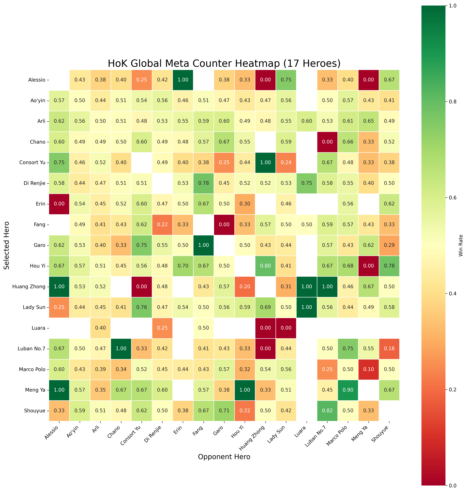
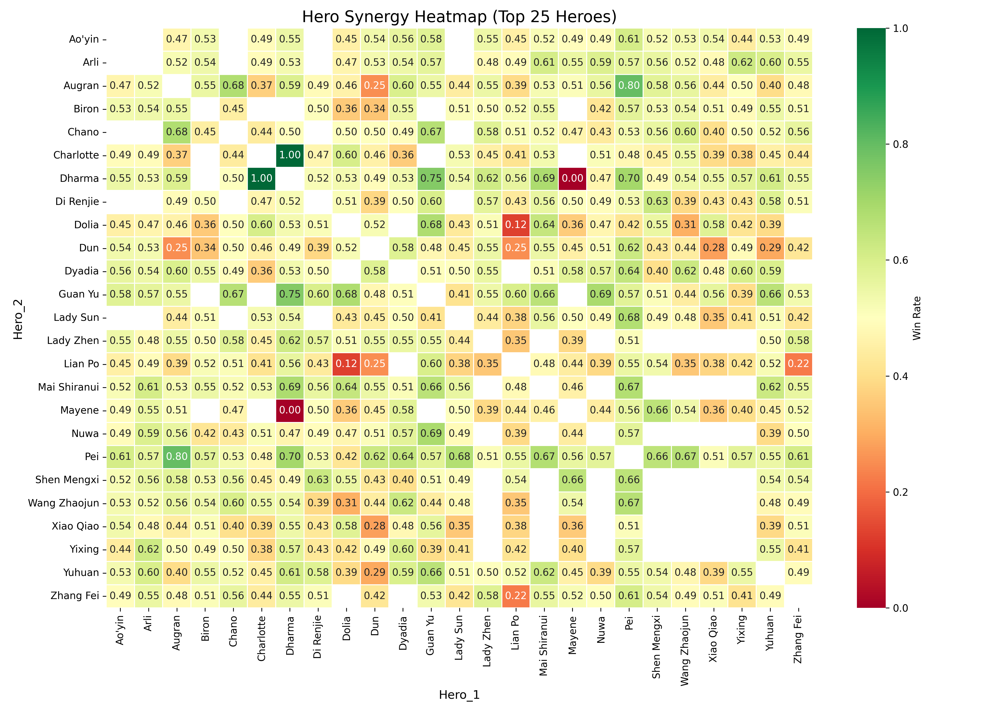
Both heatmaps are read the same way. Every cell is a winrate. A cell at 50% means the matchup — or the pairing — is even. A cell above 50% means the row hero has the edge; a cell below 50% means the column hero does. The further the cell sits from 50%, the stronger the effect.
What makes the heatmaps useful is not any single cell. It is the pattern across all of them. One hero beating another in a small sample could be noise. A hero beating another across multiple patches, multiple regions, and multiple teams is a signal — and signals are what a drafter is looking for.
Reading the counter heatmap
The counter heatmap answers a specific question: if the enemy has already picked hero X, how does hero Y perform against them? That is the question you ask in the last two picks of a draft, when you can see what you are up against and you are choosing your answer.
Three things to look for in Figure 12:
- The strong cells — real counter-picks. These are the matchups where one hero consistently beats another by a meaningful margin. A cell at 55% is a small edge; a cell at 60% or higher is a matchup the enemy team has to respect. These are the picks you can trust when you are drafting your last slot and you need an answer to a specific threat.
- The flat cells — matchups that do not matter. Most of the heatmap is this. The majority of hero matchups sit between 47% and 53%, which means the outcome is decided by the players, not the picks. Knowing which matchups are genuinely flat is just as valuable as knowing which are not — because it tells you where to spend your counter-pick, and where to spend it on something else entirely.
- The trap cells — popular "counters" that are not counters. These are the matchups the community believes are one-sided but the data shows are not. A hero everyone picks "because they counter X" that only wins 51% of the time against X is not a counter — it is a coin flip with a reputation. Trusting the reputation over the numbers is how a draft loses a fight before it starts.
The diagonal is meaningless. Every cell where a hero faces itself is a mirror matchup — same hero on both sides. Those cells are a check on the data (they should all sit near 50%), not a guide to drafting. Ignore them.
The most important thing the counter heatmap gives you is not a list of picks. It is a correction. Every team carries a set of assumptions about which heroes beat which, and most of those assumptions come from a single bad game, an old patch, or a streamer's opinion. The heatmap replaces those assumptions with a number — and the number is often not what people expect.
Counter heatmaps by role
Figure 12 shows every matchup on the map at once. That is useful when you are drafting a whole composition, but it is too broad to answer the question you actually ask in the last two picks: which hero, in my role, beats the hero they have already locked in?
The four heatmaps below are the same data, split by role. Each one shows only the heroes that can plausibly be picked into that position, on both axes. The reading rules are identical — every cell is a winrate, every cell near 50% is a coin flip, the diagonal is a mirror matchup — but the sample is narrower, so pay closer attention to sample size and patch date than you would with the full map.


Same rules, smaller sample. The role-specific heatmaps are more focused and therefore more useful for a specific pick — but they are also built from fewer games, because only a fraction of professional matches feature any two given heroes in the same role. Check the sample before you trust a cell, and prefer patterns that hold across multiple cells in the same row over a single high number.
Reading the synergy heatmap
The synergy heatmap answers a different question: if we already have hero X on our team, which hero Y wins with them? That is the question you ask in the first three picks of a draft, when you are building your core, and in the last two, when you are looking for the missing piece of your composition.
What the cells mean:
- High synergy. Two heroes who win together more often than either wins alone. Usually because their kits do something together: an engage hero and a follow-up AoE, a frontline tank and a backline that needs space, a CC chain that lets one hero hold a target while the other kills it. High synergy does not mean the pairing is always correct — it means the pairing has a proven edge when both heroes are played to their strengths.
- Neutral synergy. The pairing neither helps nor hurts. This is most of the heatmap, and it is fine — not every pair of heroes needs to do something special together. A composition does not need five synergy pairs. It needs a plan, and heroes who can execute it.
- Low synergy — and why it happens. A pairing that wins less often than expected. This is rarer than high synergy, and it usually shows up when two heroes want the same resources, want to fight at the same time, or have kits that actively get in each other's way. Two split-pushers on the same team, for example, are competing for the same side-lane pressure — and that competition costs the team more than either hero gains.
Reading Figure 13 well means looking for patterns, not just high numbers. A single high-synergy cell can be noise. A row of high-synergy cells next to one hero — a hero who pairs well with several others — is a hero who fits into many compositions, and that is a different kind of value from a hero who is only strong in one specific pairing.
Synergy is not the same as "two strong heroes". A pairing of two S-tier heroes with neutral synergy is usually worse than a pairing of two A-tier heroes with high synergy, because the first pairing is winning on individual power and the second is winning on a plan. Power is a hero's kit. Synergy is what two kits do together. The second is what wins fights.
The limits of the data
The heatmaps are a tool, not a rulebook. Before you use them to make a draft decision, be clear about what they can and cannot tell you.
- Sample size. A cell with 5 games in it is noise. A cell with 500 games in it is a signal. The heatmaps from professional matches are usually large enough to be meaningful at the top level — but the more specific the matchup (a specific pairing, a specific patch, a specific region), the smaller the sample, and the less you should trust a single number. Look for cells that hold their pattern across the whole map, not cells that stand out in isolation.
- Patch changes. Heroes get reworked, items get adjusted, and the meta shifts under everyone's feet. A heatmap from the first half of 2026 tells you what was true in the first half of 2026. Some of it will still hold — the fundamentals of a matchup rarely change overnight. Some of it will not, and you have to know which is which. Check the date before you trust the number.
- Context. A cell is a winrate, not a full game. A hero's performance against another hero depends on the other eight heroes on the field, on which lane the matchup happens in, on the team's plan, and on the skill of the players involved. The heatmap is a snapshot of the matchup in isolation. The draft is a decision about the whole composition.
- Selection bias. Teams pick counter-picks when they are confident. If a hero's winrate against another hero is high, some of that winrate comes from the fact that teams only pick the counter when they are in a good position to win the game. Correlation is not causation. A high cell does not mean "pick this hero and you will win" — it means "when teams have picked this hero into this matchup, they have won more often."
- Pro versus community play. Professional matches are played at a level most community teams will never reach. The way a pro team plays a 60% matchup — the rotations, the vision, the communication — is not the way a community team will play it. Some counters that work in pro play require coordination a community team does not have, and some strategies that are weak in pro play are strong in a ranked ladder game where nobody is coordinated. The data is a starting point. It is not a guarantee.
The heatmaps tell you what happened. They do not tell you why. A 60% winrate for hero A into hero B is a fact. It is not an explanation. To use the fact well, you have to understand the reason — what in hero A's kit beats what in hero B's kit, and whether that reason applies to the game you are about to play.
How to use it in your own drafts
The heatmaps are most valuable as a tiebreaker. When you have two picks that both fit your composition, both counter the enemy's win condition, and both suit the player who has to play them, the heatmap tells you which one to take. That is the moment the data earns its keep — not as the first consideration, but as the last one.
Four habits separate a team that uses the data well from a team that uses it badly:
- Use the data to challenge your assumptions, not confirm them. If you think a pick is a counter and the heatmap shows it is even, that is a signal to go back and ask why you believed the counter in the first place. The most valuable cells on the heatmap are the ones that surprise you.
- Look for patterns, not single cells. A hero who has a strong matchup against one opponent is interesting. A hero who has a strong matchup against a whole row of opponents — a hero who is generally strong into a certain type — is a pick you can trust. Patterns survive sample size, patch changes, and context. Single cells do not.
- Understand the "why" before you trust the "what". A high winrate is a reason to investigate, not a reason to pick. If you can explain the matchup — this ability beats that ability, this spike lines up against that spike — then you can apply the data even when the exact numbers change. If you cannot explain it, you are just copying a spreadsheet.
- Draft for your team, not for the heatmap. A counter-pick that your player cannot execute is not a counter-pick. A synergy that requires coordination your team does not have is not a synergy. The heatmap tells you what is strong in the abstract. The draft is about what is strong for you.
Use the data the way you use the tier list. It narrows the field. It does not make the pick. The final decision still belongs to the drafter, the coach, and the team — because they are the ones who know what the composition needs, what the player can execute, and what the plan is.
The "why" matters more than the "what"
Here is the trap with data: it is easy to read a number and hard to read a reason. A 62% cell looks like a free win. It is not. It is a description of what happened when a specific matchup was played by specific teams in a specific context — and if any of those specifics change, the number can stop applying.
Take a counter-pick that wins because it denies the enemy's power spike. The counter works in pro play because the pro team knows how to punish the spike — they rotate early, they deny the farm, they force the fight before the enemy is online. A community team that picks the same counter but does not do any of those things will not get the same winrate. They will get the champion and lose the matchup, because the reason the counter worked was not the hero. It was the plan.
Now take a synergy pair that wins because the two heroes chain CC together. That synergy is much more portable. It does not depend on rotations or vision or team coordination in the same way — it depends on two players pressing their buttons in the right order. A community team can execute it. The number transfers, because the reason transfers.
That is the difference between a data-driven draft and a data-blinded one. A data-driven drafter looks at the number and asks: why does this win? A data-blinded drafter looks at the number and picks it. The first drafter gets value out of the heatmap even when the numbers are wrong, because they understand the underlying reason. The second drafter gets nothing, because a number without a reason is just a guess dressed up as a statistic.
The heatmap is the map. The draft is the journey. A map shows you the terrain. It does not tell you where to go. That decision belongs to the people holding the map — and the better you understand the terrain, the better your decision will be.
A living document
The heatmaps in this chapter come from professional matches played in the first half of 2026. They are a snapshot — and like everything else in this book, they will go stale. Heroes will be reworked, items will change, and the meta will move on. The patterns in the data will change with it.
What will not change is the way you read it. Sample size, patch date, context, selection bias, pro versus community play — those five questions apply to every heatmap, every tier list, and every stat sheet you will ever look at. Learn the questions now and the data will keep being useful long after the numbers on these pages have been forgotten.
Counter-picks & synergy checklist. Read the counter heatmap for real counters (strong cells), flat matchups (most of the map), and trap counters (popular picks with no data behind them). Read the synergy heatmap for pairings that win together, neutrals that neither help nor hurt, and anti-synergies that compete for the same resources. Before you trust any cell, check five things: sample size, patch date, the other eight heroes on the field, selection bias, and whether the pattern transfers from pro play to your team. Use the data as a tiebreaker, not a rule. Look for patterns, not single cells. Understand the "why" before you trust the "what". And remember: the heatmap tells you what happened. The draft is your decision about what happens next.
Advanced Team Mechanics
Some plays do not win a fight. They win the map before the fight happens.
Everything in the previous chapters has been about the fundamentals — macro, lanes, psychology, draft. This chapter is about the plays that sit on top of all of them. They are rare in solo queue because they require something that five strangers on the ranked ladder almost never have: the entire team reading the same map at the same time, and acting on the same conclusion without needing to be told.
These are the plays that separate a community team from a group of five good players. They are not difficult to execute — the movements are simple. They are difficult to coordinate. And that is exactly why they belong here.
Mirroring
Coordination · Map parityMirroring is when you deliberately copy or match the movement and pacing of another player. It is not about doing the same thing they are doing. It is about being in the same place at the same time, so that whatever they do, you are already there to answer it.
There are two directions of mirroring, and they serve different roles.
Mirroring your opponent — Mid & Jungle
- Mid laner. When your lane opponent pushes the wave and walks toward a side lane, you match their rotation. You do not arrive late to the fight they started. You arrive at the same time, from the same side, and you turn their 4v3 into a 4v4.
- Jungler. When the enemy jungler shows on the top side of the map, you match their position. If they are clearing their blue buff, you clear your blue buff. If they rotate toward dragon, you rotate toward dragon. This is not reactive play — it is proactive parity. You are saying: wherever you go, I will be there.
- The purpose is simple: an opponent who cannot gain a numbers advantage anywhere on the map cannot make a play. Mirroring removes their options before they can use them.
Mirroring your ally — Clash & ADC
- Clash laner. When your jungler moves toward your side of the map, you match their pace. If they are setting up a gank, you freeze the wave and prepare to commit. If they are invading the enemy jungle on your side, you push the wave and move to support them. You are not waiting for a ping — you are already moving because you read the same map they did.
- ADC. When your roam moves toward the river, you match their positioning. You step forward when they step forward, and you retreat when they retreat. A marksman who mirrors their support is impossible to dive, because the dive has to go through two players who are always in the right place.
- The purpose here is different: mirroring your ally creates a two-player unit that moves as one. The enemy team cannot punish one of you without committing to both.
The Roamer's version. The roam can mirror the jungler in a specific and highly effective way: if your jungler is going for their red buff, you mirror that path by providing vision on the opposite buff. You are not following them — you are covering the side of the map they are not on. This is the defensive half of mirroring. While the jungler takes the camp, you make sure the enemy jungler cannot take the other one for free. The two of you are moving as a pair, one on offence and one on defence.
Watch it in practice: Mirroring in high-level play — YouTube →
The clip demonstrates the principle from a coordinated team's perspective. Watch how the movements of two players — one on each side of the map — stay perfectly in sync. The moment one commits, the other is already in position. That is mirroring.
Proxing
Coordination · PressureProxing is when you walk behind the enemy tower and kill the minion wave there, before it can reach your own minions. Your wave then crashes into the tower uncontested, and the enemy laner has to choose between farming under the tower and coming out to stop you.
The purpose is not the gold from the minions. It is the pressure.
- Your wave hits the tower for free. If the enemy laner stays under their tower to farm, they are taking tower damage that they cannot stop. If they come out to stop you, they are leaving the tower undefended — and your wave is already there.
- The enemy laner is forced to choose. A proxing player creates a dilemma: stay and take chip damage, or leave and give up the tower. Either way, the proxing player wins the trade without fighting.
- You are drawing pressure. The enemy jungler or roam is likely to rotate to stop you. That rotation is the real reward. Every player who comes to your lane is a player who is not contesting an objective on the other side of the map.
Proxing is not a solo play. It is a coordinated play, because the proxing player is completely exposed. If the enemy team collapses on you and your team does not take an objective somewhere else, you have traded your life for nothing. The proxer's job is to bait the collapse. The team's job is to make the collapse cost more than it is worth.
The proxing rule. Only proxy when your team is ready to trade. If you go behind the tower and your team is still farming their own lanes, you are not proxing — you are feeding. The play only works when the rest of the map is already moving toward the objective your death will open up.
Watch it in practice: Proxing — short demonstration — YouTube → · Proxing in full context — YouTube →
The short clip shows the basic movement: the player walks past the tower, clears the wave, and creates the pressure. The full video shows the context that makes it work: the team rotating to an objective while the enemy collapses on the proxer. Watch both — the first shows the play, the second shows the reason the play is correct.
Ambushing
Coordination · DeceptionAn ambush is a gank you do not start. You do not walk into a lane and look for a kill. You leave something the enemy wants — a minion wave, an objective, a low-health teammate — and you wait for them to come and take it. When they commit, the whole team jumps out and kills them in seconds.
The ambush is the purest expression of the psychological principles in Chapter 05. It works because it turns the enemy's own instincts against them. They see a wave they can farm, or an objective they can take, or a kill they can secure — and they walk into a position where they are surrounded by players they cannot see.
Three things make an ambush work:
- The bait has to be real. A wave of minions that nobody is defending. An objective that looks uncontested. A teammate at low health who looks killable. The enemy has to believe the thing is worth taking, or they will not commit. The bait is not a trick — it is a genuine opportunity that you have chosen not to take, because you are waiting for them to take it instead.
- The whole team has to be in position before the bait is set. An ambush that starts before everyone is ready is not an ambush — it is a fight. The bait goes down only when every player is already hidden and ready to jump. If one person is late, the enemy has time to react, and the ambush turns into a normal fight the enemy can win.
- The kill has to happen fast. The point of an ambush is not to fight. It is to delete one or more enemies before they can fight back. The CC lands, the damage lands, the target dies — and then the team is already moving to the next objective before the enemy team can respond. An ambush that turns into a prolonged fight is an ambush that failed.
The ambush is also the strongest answer to a team that is winning. A team that is ahead will usually take risks — they will walk into fog, they will chase kills, they will try to take objectives they do not need. Every one of those behaviours is an invitation. The team that is behind does not need to out-fight the enemy. They only need to find one moment where the enemy commits to something they should not, and punish it with the entire team at once.
Watch it in practice — coordinated ambush: Ambush with minions as bait — @vdx.kovas on TikTok →
The clip shows the full coordinated version: the minion wave left untouched, the enemy team walking in to take it, and the whole squad jumping out at once. Watch the timing — the bait is set, the enemy commits, and the kill happens in the space of a few seconds. That is the whole play.
Watch it in practice — solo queue ambush: Ambush in solo queue with a random marksman — @vdx.kovas on TikTok →
This clip is the same principle in a ranked game, with a teammate you have never played with before. You wait until the opponents assume they are going to win the fight — and then you jump in, providing the CC and tanking the damage while the marksman finishes the kills. The coordination is not scripted; it is two players reading the same moment at the same time. That is what a good ambush looks like when you do not have voice comms and a planned setup.
Watch it in practice — setup and timing: Falling back to lure the enemy into an entry point — @vdx.kovas on TikTok →
This clip shows the setup half of the ambush: the intentional fall-back to lure the enemy into a choke point, and the moment where your skills and your teammate's skills land at the same time. The retreat is not a retreat — it is the bait. The entry point is not a mistake — it is the trap. Watch how the two players time their cooldowns to land together. That timing is the whole play.
Vision as a Weapon
Information · PatienceVision is not just for avoiding ganks. It is a weapon in itself. Sometimes the most valuable thing a player can do is sit in a bush and give information — not fight, not pressure, not farm. Just watch, and tell the team what is happening.
This is the hardest lesson for aggressive players to learn. The instinct is to do something. But a player who is sitting in a bush is doing something: they are denying the enemy team the ability to move unseen. Every rotation the enemy makes, every objective they try to take, every gank they attempt — all of it happens in front of a player who is watching and reporting.
Three situations where vision is worth more than a kill:
- Before an objective. Sitting in the bush next to the dragon pit and telling your team where the enemy is standing is worth more than any damage you could deal. Your team gets to make the decision about whether to fight — not the enemy team.
- When you are behind. A team that is losing needs information more than it needs kills. If you can see the enemy rotating to a side lane, your team knows where not to be. That information buys time, and time is what a losing team needs.
- When the enemy is ahead and overconfident. A winning team gets lazy with vision. They stop checking bushes. They walk into places they should not. A player sitting in a bush with a ward is the reason that overconfidence becomes a pick, and the pick becomes a comeback.
Watch it in practice: Staying in the bush to provide vision — @vdx.kovas on TikTok →
The clip shows the principle in its simplest form: a player staying hidden, watching the enemy move, and giving the team the information they need. No fight, no kill, no highlight-reel play. Just vision — and that vision is what allows the team to make the right decision. Sometimes doing nothing is the play.
Backdooring
Coordination · Win conditionBackdooring is when one or more players sneak into the enemy base and attack the structures — the towers, the base, the crystal — without pushing the lane first. The minion wave is not there. The lane is not pushed. You just walk past the enemy team's vision, past their frontline, and hit the thing that wins the game.
It is the ultimate psychological play. The enemy team is focused on the fight in front of them. They are winning the 5v5, they are taking objectives, they are dominating the map. And while they are doing all of that, one player is in their base, hitting their crystal, and ending the game behind their back.
Backdooring works because of a simple truth: the enemy team cannot defend two things at once. If they are fighting your team in mid, they are not defending their base. If they are defending their base, they are not fighting your team in mid. The backdoor player forces them to choose, and whichever choice they make, the other side loses something.
Three conditions make a backdoor possible:
- The enemy team is distracted. They are fighting, they are taking an objective, they are chasing kills. Their attention is on the map in front of them, not the map behind them. The backdoor player exploits that attention gap.
- The side lane is open. If the enemy has pushed a side lane all the way to your base, that lane is now empty of their minions and their vision. You can walk down that lane and reach their base before anyone notices. The lane the enemy used to pressure you becomes the lane you use to pressure them.
- Your team can survive without you. Backdooring is a sacrifice play. If the enemy team realises what is happening and collapses on you, you will probably die. The backdoor only works if your team is holding the line somewhere else — fighting, defending, or pressuring an objective — so that the enemy cannot spare the players to come and stop you.
The backdoor is the strongest play for a team that is losing. A team that is ahead does not need to backdoor — they can win the fight and take the base the normal way. A team that is behind cannot win the fight, but they can win the race. The enemy team is dominating the map, but the map is not the win condition. The crystal is. And the crystal is always in the same place, no matter how far behind you are.
The backdoor rule. Backdoor when the enemy team is committed to something else. If they are fighting your team, you can hit their base. If they are not fighting your team, they can send someone back to stop you — and the backdoor becomes a death. The play is not about being fast. It is about being patient and waiting for the moment when the enemy team has already chosen where their attention is going.
Watch it in practice: Backdooring — when the enemy team leaves an opening in the side lane — YouTube →
The clip shows the play in action: the enemy team is dominating, but they have left the side lane open. One player walks down the lane, reaches the base, and destroys the crystal while the enemy team is still fighting somewhere else. Watch how the backdoor player waits — not for the perfect moment, but for the moment when the enemy team has already committed their attention to something that is not their base.
The common thread
Every mechanic in this chapter shares the same requirement: the whole team has to be reading the same map at the same time.
Mirroring requires your jungler and mid laner to move together without needing to be told. Proxing requires your team to know that your death is the trade that opens the objective. Ambushing requires everyone to be in position before the bait goes down. Vision requires a player who is patient enough to sit still and a team that trusts the information they are given. Backdooring requires your team to hold the line while one player wins the game somewhere else.
None of these plays work in solo queue. Not because the players are bad, but because the coordination is not there. That is what makes them team mechanics. And that is what makes a community team different from five strangers on the ranked ladder.
Advanced mechanics checklist. Mirroring: match the enemy's movement (Mid & Jungle) or your ally's (Clash & ADC) so no fight is ever a numbers disadvantage. Roamer: mirror the jungler's pathing by covering the opposite side of the map. Proxing: clear the wave behind the enemy tower to force a choice and draw a collapse — but only when your team is ready to trade. Ambushing: leave something the enemy wants, wait for them to commit, and kill them before they can fight back. Vision: sometimes sitting in a bush and telling your team what you see is worth more than any kill you could get. Backdooring: when the enemy team is committed somewhere else, walk into their base and end the game before they can respond. Every one of these plays needs the whole team reading the same map at the same time. That is why they are team plays, not solo plays.
Roles within the Team
A community team is more than five players on the map. The labels get used loosely — "captain", "IGL", "coach", "manager" are thrown around as if they mean the same thing. They do not.
A captain is not automatically an IGL. A coach is not automatically a manager. An analyst is not just "the person who likes spreadsheets". And a team that assigns roles without understanding what those roles actually are ends up with five people doing the same job badly, and nobody doing the jobs that matter.
This chapter is about the roles that exist around the five players. Some of them are held by players. Some are held by people who never touch the game. All of them matter — and the teams that understand them climb faster than the teams that do not.
The Two Halves of a Team
Every team role falls into one of two categories, and knowing which category a role belongs to tells you what kind of work it actually is.
In-game roles
- Exist only while a match is being played.
- The IGL is the clearest example: they make the live calls, and the role disappears the moment the match ends.
- Measured in decisions per minute.
- Held by someone who is in the game, because the game does not wait for them.
Out-of-game roles
- Exist between matches — in the days and weeks around the game.
- The coach, manager, and analyst are the classic examples.
- Measured in how much the team improves between weeks.
- Can be held by someone who never plays, because the work happens off the map.
Some people hold one of each. A player can be the IGL during a match and the captain between them. On a small community team, the coach might also be the manager. This is normal. The important thing is that everyone knows which hat they are wearing at any given moment — because the failure mode is not overlapping roles, it is overlapping roles that nobody has named.
IGL — In-Game Leader
In-game · Voice · Decision-makerThe IGL makes the live calls during a match: when to fight, when to back off, which objective to take next, where to rotate, when to commit. They are the team's voice on the map, and the role exists only while the game is being played.
The IGL does not need to be the best player on the team. They need to be the clearest voice. A team with five players making calls is a team with no calls at all — five opinions at the same moment produce hesitation, and hesitation loses fights. One voice, four followers is the rule. The IGL is the one voice.
What makes a good IGL
- Decisive. They make the call and commit to it. A wrong call that the team follows together is better than a right call that nobody follows. Hesitation is the only truly fatal error.
- Clear. They say what they mean in as few words as possible. "Dragon, now" is a call. "I think maybe we should go dragon? Or we could push mid? What do you guys think?" is not.
- Calm. They do not panic when the game goes wrong. The team's emotional state follows the IGL's voice, and a panicking IGL produces a panicking team.
- Aware. They track the enemy jungler, the objective timers, and the cooldowns of both teams. They do not need to know everything, but they need to know more than anyone else on the team — because everyone else is busy looking at their own character.
- Accountable. When the call goes wrong, they own it. "My call, my bad" is worth more than any amount of defending. An IGL who blames their team for a bad call is an IGL who will not be trusted with the next one.
Which roles suit the IGL best
Not every role has the same amount of attention to spare. Some positions demand your eyes on your own character for almost the entire game; others give you the freedom to look up and read the map. The IGL has to be one of the latter, because a player who is locked into their own lane cannot see the game they are trying to lead.
The three roles that work best as IGL — in rough order — are Roam, Jungler, and Mid:
- Roam. The natural fit. The roam is not tied to a lane, is already the team's primary vision provider, and spends the whole game moving between positions and reading the map. Their entire job is map awareness — so the attention the IGL role demands is attention they were already spending.
- Jungler. Equally strong. The jungler has no lane to hold, owns the objective clock, and is already tracking the enemy jungler's position and power spike. The jungle is the most macro-oriented role in the game, which makes it one of the most natural seats for a live caller.
- Mid. A very good fit. Mid is the shortest lane, the centre of the map, and the fastest route to almost every fight. The mid laner is the second vision provider after the roam, rotates more than anyone except the jungler, and is present at nearly every objective. It is a busier role than roam or jungle — but the mid laner still sees more of the map than either side laner.
The two side laners — Clash and ADC — are the hardest roles to IGL from, and it is not because they are worse players. It is because their role demands their attention in a specific and unforgiving way. The lane is a continuous 1v1: trading windows, wave control, last-hitting, cooldown tracking, gank anticipation. Every one of those things needs your eyes on your own character, and the moment you look away is the moment you miss the trade or eat the gank. Side laners are, by design, micro-focused. Asking them to also carry the macro of the whole team is asking them to play two games at once.
This is about cognitive load, not skill. A Clash or ADC player can absolutely be an IGL — some teams do it, and do it well. But it costs them more. Their own laning will suffer slightly, because the attention that would have gone into a trade is going into the map. When a team chooses a side laner as IGL, it is choosing to trade some of that player's micro for the team's macro. That is a legitimate trade, but it should be a conscious one.
The IGL is not the only voice
This is the single most misunderstood thing about the role. The IGL is the one who decides — but they are not the one who sees everything. No single player can track five enemies, three lanes, every summoner spell, every objective timer, and their own character at the same time. The information the IGL needs comes from the team.
Every player on the team has a responsibility to feed information up:
- Enemy movement. "Mid's rotating top." "Their jungler just showed bot." "Support is missing." These are calls the IGL cannot make alone, because the IGL is not watching every lane.
- Skill and summoner timers. "Flash burned top." "Their carry ulted at dragon, it's down." "Enemy tank has no engage for another 40 seconds." This is the kind of information that decides whether the next fight is winnable — and it is almost always the laner who saw it, not the IGL.
- Ward locations. "They have vision in our red entrance." "Pit is warded." "I have vision on their blue side." Vision is a shared resource; the team reports it, the IGL uses it.
- Your own state. "No ult." "Low mana." "Need to recall, two waves." A team that does not report its own condition to the IGL is a team whose IGL is calling plays that half the team cannot execute.
Information flows up to the IGL, and decisions flow down from the IGL. The role is a funnel, not a fountain — the input comes from everywhere, and exactly one output leaves.
And once the decision is made, the debate is over. If the IGL says fight, you fight. Not "I think we should back off" — not "but my ult is down" (that should have been reported before the call). The time for input is before the call, not after it. A team that second-guesses its own IGL in the middle of a fight is a team that loses the fight to its own hesitation.
Knowledge of the enemy's dispositions can only be obtained from other men. Sun Tzu wrote this about spies, but the principle maps directly onto a team: the IGL cannot see what they cannot see, and the only way to see it is for the team to tell them. A silent team is a blind IGL, no matter how good their macro is.
Say less, not more
The most common mistake a new IGL makes is over-communicating. They think the role is about telling everyone what to do — and so they narrate the entire game. "Take the boars. Now clear the buff. Now rotate mid. Wait, no, go dragon, but ward first, then…" That is not IGLing. That is dictating, and it is exhausting for the IGL, irritating for the team, and counter-productive for the game.
The reason it fails is simple: the team already knows their jobs. The roam knows to secure vision around the objective. The clash laner knows to push the opposite lane for pressure. The jungler knows to position for the pit. The mid laner knows to shove and rotate. None of that needs to be said — it is what practice is for, and it is what the rest of this handbook is about. The IGL does not need to remind them of their own roles. The IGL needs to tell them what the next objective is, and the team executes the details themselves.
What a good IGL actually says is short. It sets the intention — not the sequence:
Over-communicating
- "Ok roam go ward pit, jungle get close to pit, mid push your lane first, clash push opposite lane, everyone get ready, we're going to fight at dragon in 30 seconds…"
- Every player is being told something they already know.
- The IGL is talking the entire time and has no attention left for the map.
- The team feels micromanaged and stops thinking for themselves.
Real IGLing
- "Tyrant in 30."
- That is the whole call.
- The roam secures vision, the clash laner pushes the opposite side, the jungler positions, the mid shoves and rotates. Nobody had to be told.
- The IGL's attention stays on the map, where it belongs.
There is a second reason to say less: talking tires you out, and it kills the team's mood. An IGL who narrates every step is an IGL who is exhausted by minute fifteen and frustrated by minute twenty. A team that is being told what to do every three seconds stops feeling like a team and starts feeling like they are being managed — and nobody plays their best game while being managed.
If the team makes a mistake — the roam did not secure vision, the clash laner did not push, the jungler was late to the pit — that is not the IGL's job to fix in the moment. The IGL sets the intention; the team executes. If the execution is wrong, the coach corrects it in review, after the game, when there is time to talk about it properly. The IGL who stops mid-fight to correct a teammate has already lost the fight.
The IGL sets the intention. The team owns the execution. If you find yourself telling your team things they already know how to do, you are not leading — you are worrying out loud. Trust the team you have trained, and spend your own attention on the map instead.
Callouts and naming — the shared language
An IGL who says "set the ambush in the long bush" has made a call that half the team cannot follow, because "the long bush" means something different to each of them. Was it the long bush on the top side? The one behind the pit? The one next to the mid lane? By the time the team has worked out what the IGL meant, the window for the ambush has closed.
This is why serious teams name the map. Every bush, every corridor, every objective pit, every jungle entrance gets a name — and everyone on the team uses the same name for the same place. A call becomes a single word, the team reacts instantly, and the IGL's voice stays free for the next decision.
Different teams use different naming strategies. The names can be cultural, language-affected, or just chosen for simplicity. What matters is not which system you use — it is that everyone on the team uses the same one. Below are two examples that illustrate the range, from the very simple to the very precise.
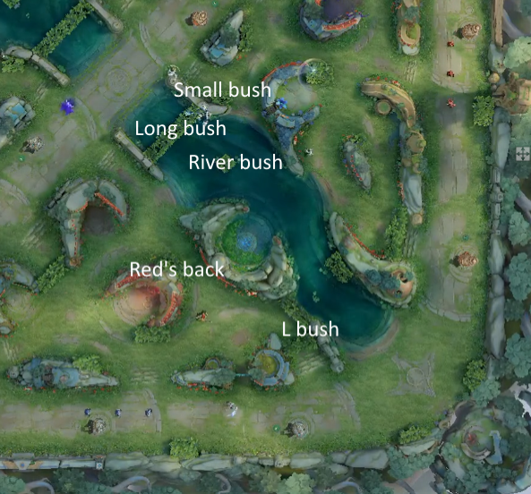
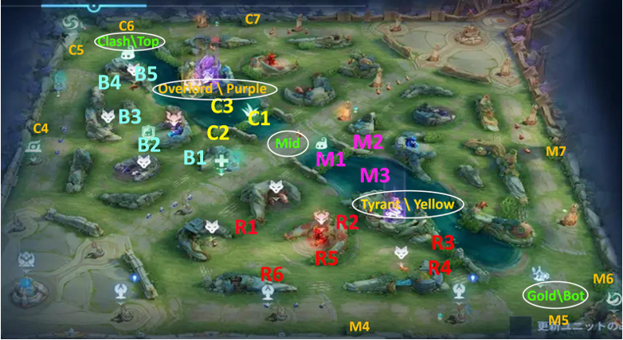
Neither system is better in the abstract. A community team that plays twice a week does not need to memorise a ninety-name map — the simple system is faster to learn and gets the team playing together sooner. A team preparing for a tournament, where a half-second of hesitation decides a fight, will benefit from the detailed system because the calls are unambiguous and instant.
Pick what works for your team — and then stick to it. The worst outcome is not choosing the wrong system. It is choosing no system at all, and letting every player invent their own names in the moment. A shared map is a shared language, and a shared language is what turns five players into a team. Decide on your names, write them down, and use them until they are automatic.
IGL is not the same as captain. The captain is the team's anchor in the group. The IGL is the team's voice in the match. They are often the same person — but not always, and on some teams it is better if they are not. The IGL has to be fast and decisive; the captain has to be patient and inclusive. Forcing both onto one person because "that's how it's usually done" is a team making its own job harder.
Coach
Out-of-game · Preparation · ImprovementThe coach is responsible for everything that happens between matches: building the draft plan, reviewing VODs, identifying each player's bad habits, and setting the practice schedule. If the IGL decides what happens in the game, the coach decides what the team is trying to become.
The coach's value is not measured in how much they talk, how good their game knowledge sounds in a call, or whether they can out-argue a player about a draft choice. It is measured in one thing: how much the team improves between weeks. A coach whose team is the same on week ten as it was on week one has failed, no matter how many hours they put in.
What a coach actually does
- Builds the draft plan. Not the draft itself — the plan behind it. Which compositions the team is comfortable running, which heroes each player can execute, which matchups the team should look for and which it should avoid. The IGL picks the heroes in the moment. The coach decides what the team is trying to pick for.
- Reviews VODs. Watches the team's games — scrims, tournaments, even ranked — and finds the patterns. Not the individual mistakes (everyone makes those) but the repeated mistakes. The fight the team always takes at 8 minutes. The rotation nobody ever makes. The lane assignment that keeps failing. The coach's job is to see what the players cannot see because they are inside the game.
- Sets the practice schedule. Decides what the team practises, how long, and why. A team that scrims without a goal is a team that is playing ranked with extra steps. The coach turns practice into improvement by deciding what the team is trying to get better at this week.
- Manages the roster. Decides who plays, who sits, and — when necessary — who leaves. This is the hardest part of the role and the one most community coaches avoid. A coach who will not make a roster decision is not a coach — they are a friend with a clipboard.
- Holds the standard. Decides what "good enough" means for this team, and holds everyone to it. Not in a harsh way — in a consistent way. The coach is the person who says "we do not do that here" and means it.
What makes a good coach
- Observant. They see things the players do not. Not because they are smarter, but because they are outside the game. A player is inside their own character; a coach is watching the whole map. That distance is the coach's superpower, and the coach who does not use it is wasting the role.
- Honest. They tell the truth, even when it is uncomfortable. A coach who avoids hard conversations to keep the peace is a coach whose team will never improve, because the problems never get named. Kindness without honesty is not kindness — it is cowardice with good manners.
- Consistent. They apply the same standard to every player, every week. A coach who lets the star player break the rules and punishes the substitute for the same thing has lost the team. Consistency is the only thing that makes authority legitimate.
- Humble. They know they might be wrong. The best coaches change their minds when the evidence changes, and they say so out loud. A coach who cannot be wrong is a coach who cannot learn — and a coach who cannot learn cannot teach.
- Patient. Improvement takes weeks, not days. A coach who panics after one bad scrim and changes the whole plan will never find out whether the plan worked. The coach's job is to hold the course when everyone else wants to change it.
The coach is not the IGL
This is the single most important distinction in the chapter, and the one community teams get wrong most often.
The coach
- Works between matches.
- Builds the plan the team executes.
- Measures success in weeks.
- Can be someone who never plays the game.
- Corrects mistakes in review, after the game, when there is time to talk.
- Does not make live calls — that is not the job.
The IGL
- Works during the match.
- Makes the live calls the plan depends on.
- Measures success in seconds.
- Has to be a player, because the game does not wait.
- Cannot stop to correct a teammate mid-fight — the fight is already happening.
- Does not build the plan — they execute it.
The two roles pull in opposite directions, and that is exactly why they should usually be held by different people. The IGL has to be fast, decisive, and willing to commit to a call even when it might be wrong. The coach has to be slow, deliberate, and willing to sit with a question for a week before answering it. A player who tries to do both at once usually ends up doing neither well — making rushed calls in the game and shallow observations between them.
On a small community team, the same person often ends up doing both. That can work — but only if everyone is clear about which hat they are wearing at any given moment. The coach's hat comes off when the game starts. The IGL's hat goes on. And when the game ends, the hats switch back.
The coach builds the road. The IGL drives the car. A coach who tries to steer from the passenger seat is a coach who has forgotten which job they actually have. A coach who builds a clear enough road that the IGL does not need to ask for directions has done their job perfectly — and the team will not even notice.
The hardest part of the job
The hardest part of coaching is not the analysis, the draft, or the practice schedule. It is the conversations. The conversation with the player who is not good enough. The conversation about the roster change that everyone knows is coming and nobody wants to have. The conversation where the coach has to tell someone that the thing they believe about their own game is wrong.
Community coaches avoid these conversations because they are volunteers, because the players are their friends, and because it is easier to keep the peace than to make the team better. And every time they avoid one, the team pays for it — not immediately, but eventually. The problem does not go away because nobody named it. It just gets worse, and it takes more of the team with it.
A coach who can have the hard conversation is worth more than a coach who can build a perfect spreadsheet. The spreadsheet helps a team improve. The conversation is what makes improvement possible in the first place.
Community teams often do not have a dedicated coach. When that happens, the role falls to the captain, the IGL, or the most experienced player on the roster. This works — but only if everyone is honest about the fact that it is happening, and only if the person doing it gets the time and authority to actually do it. A coach whose authority is not recognised is not a coach. They are a suggestion box.
Manager
Out-of-game · Logistics · ReliabilityThe manager handles everything that is not gameplay: schedules, scrims, roster changes, tournament sign-ups, and communication with the wider community or organisation. A good manager removes every excuse a player has for not being ready on time.
The manager's job is invisible when it is done well. Players show up, the scrim is scheduled, the opponent is confirmed, the tournament registration is filed, and nobody thinks about it — because the manager did their job. When the manager's job is done badly, it is the first thing everyone notices.
What makes a good manager
- Organised. They know what is happening next week, who is playing, and what needs to be done. They do not lose track of things — because the moment they do, the team loses a scrim or a tournament slot.
- Proactive. They do not wait for someone to ask. They see the problem coming and handle it before it arrives. A manager who only reacts is a manager who is always one crisis behind.
- Reliable. They do what they say they will do, when they say they will do it. A manager who misses deadlines is worse than no manager at all, because the team has built its schedule around them.
- Boring. The best managers are the ones who make everything look easy. If the manager is the centre of attention, something has gone wrong — and the team is probably about to find out what.
Community teams often do not have a dedicated manager. When that happens, the role falls to the captain, the coach, or whoever has the most patience for admin work. This works — but only if everyone is honest about the fact that it is happening, and only if the person doing it gets credit for it. Invisible labour that nobody acknowledges is invisible labour that stops happening.
Analyst
Out-of-game · Data · MemoryThe analyst turns matches into numbers and patterns: draft trends, first-objective win rates, which lane assignment actually works for this roster. If the coach decides what to practise, the analyst decides what is worth practising.
The analyst is the team's memory. They remember what worked in the last scrim, what failed in the last tournament, and what the enemy team did in their last five games. A team without an analyst is a team that relearns the same lessons every week — and then wonders why it is not improving.
What makes a good analyst
- Curious. They ask questions nobody else is asking. Why did we lose that fight? Why did that draft work? Why is this player's farm lower in the second half of the game?
- Rigorous. They do not guess. They check. A pattern that shows up once is not a pattern — it is a coincidence, and the analyst knows the difference. The whole value of the role is that its conclusions can be trusted.
- Useful. They translate their findings into something the team can act on. A spreadsheet nobody reads is not analysis — it is data. The analyst's job is to turn numbers into decisions.
- Humble. They know that the numbers are not the whole game. Stats describe what happened, not what should happen next. An analyst who trusts their spreadsheet over the coach's eye is an analyst who has forgotten what the spreadsheet is for.
The analyst is often the last role a community team fills — and the one that makes the biggest difference once it exists. A team with an analyst does not just practise more. They practise the right things, because someone is keeping track of which things are working and which are not.
When Roles Overlap — and When They Should Not
On a small community team, roles overlap. The captain is also the IGL. The coach is also the manager. The analyst is also the person who edits the highlight reel. This is normal, and it is usually fine — as long as everyone knows which hat they are wearing at any given moment.
The problems start when roles overlap without anyone noticing. A captain who is also the IGL starts making live calls from the captain's seat, and the team gets confused about who to listen to. A coach who is also the manager starts making roster decisions based on admin convenience rather than competitive merit. A player who is also the analyst starts trusting their own numbers over the coach's plan. None of these people are acting in bad faith. They are just wearing two hats and only one of them fits.
Name the hats. Before the season starts, decide who holds which role and make sure everyone agrees. When a role changes — because someone steps down, because the team grows, because the workload is too much — say so out loud. A team that is clear about its roles is a team that can hold its people accountable. A team that is vague about them is a team that discovers the problem in the middle of a losing streak.
How to Assign Roles
The wrong way to assign roles is to pick the best player for each job. The best player on the team is often the worst choice for the IGL role, because they are too focused on their own play to see the whole map. They are often the worst choice for the captain role, because they have never had to mediate a conflict. They are often the worst choice for the coach role, because they cannot explain what they do — they just do it.
The right way is to ask three questions about each candidate:
- Do they want the role? A player who takes on a role out of obligation rather than interest will do it badly and resent it. The best IGL is the player who actually wants to lead.
- Are they good at it? Not "are they a good player" — are they good at this. A quiet player can be a great analyst. A loud player can be a terrible IGL. The skills are different, and the role should go to the person who has them.
- Can they handle the cost? Every role has a cost. The IGL has to talk more than they want to. The captain has to deal with problems they did not create. The coach has to have conversations they would rather avoid. If the person cannot handle the cost, they should not take the role — and the team should not push them into it.
A community team that gets this right — that puts the right people in the right roles, and is honest about when it cannot — is a team that punches above its weight. A team that gets it wrong is a team that has five players and no leadership, which is functionally the same as having four.
Common Mistakes
- Too many cooks. More than one IGL is worse than no IGL. If two people are calling, the team hesitates, and hesitation loses fights.
- Role confusion. A captain who acts like an IGL during a match, or a coach who acts like a manager between them, creates an ambiguity that the team cannot resolve in the moment it matters.
- Title without authority. Giving someone a title without giving them the power to do the job is worse than not giving them the title at all. A coach who cannot make decisions is not a coach — they are a spectator with a clipboard.
- The founder trap. In community teams, the founder often holds every role by default. This works until it does not. A team that never lets anyone else lead never grows beyond the founder's ceiling.
- No succession plan. People leave. When the IGL stops playing, does anyone know who takes over? When the manager steps down, does anyone know what they were doing? A team without a plan for its roles is a team that breaks the moment one person does.
- The silent coach. A coach who never gives feedback is not being polite — they are being absent. The whole value of the role is the analysis and the conversations. A coach who avoids both is a coach whose team is paying for a title with no work behind it.
- The analyst who overrules the eye. Stats describe what happened. They do not describe what should happen. An analyst who uses their spreadsheet to overrule the coach's or the IGL's read of the game is an analyst who has forgotten what the spreadsheet is for. The data is a tool. The people are the decision-makers.
- Captain as therapist. A captain's job is to hold the standard and keep the team together — not to fix every personal problem a player brings to the group. A captain who tries to solve everyone's life becomes a captain who has no time left to lead. Some problems need to be escalated, and some need to be left at the door.
- Roles that never change. A team that assigns roles once at the start of the season and never revisits them is a team that stops improving. Roles should be reviewed regularly — every few weeks, or at the very least every time the roster or the meta changes. A role that made sense in January may be actively hurting the team by March.
- Naming the hat but not wearing it. The most common failure on community teams is not the absence of a role — it is a role that exists on paper but is not actually performed. The "coach" who never watches a VOD. The "manager" who has never confirmed a scrim. The "analyst" who has never looked at a stat. Naming a role without doing the work is worse than not naming it, because it makes the team feel like the role is covered when it is not.
Roles within the team checklist. Know which roles are in-game and which are out-of-game. Give the IGL the live voice and the captain the group's trust — and only combine them if one person genuinely fits both. Measure the coach by how much the team improves, not by how much they talk. Let the manager make everything look boring. Let the analyst keep the team's memory. Name the hats, say when they change, and do not hand someone a role without the authority to do it. A community team with clear roles is a team that can actually improve — and a team that cannot name its roles is a team that will discover the problem the hard way.
Terminology
The shared language of the game. Every term used anywhere in this book is defined here.
Terms are listed alphabetically. Click any highlighted word in the text above to jump straight to its entry.